ตำรา “การจัดการการดำเนินงาน: หลักการและการประยุกต์ในงานโลจิสติกส์และโซ่อุปทาน” เล่มนี้ เรียบเรียงขึ้นอย่างเป็นระบบและครอบคลุมเนื้อหาสาระของรายวิชาอย่างสมบูรณ์ เพื่อใช้เป็นตำราประกอบการเรียนการสอนในรายวิชาการจัดการการดำเนินงาน สำหรับนักศึกษาระดับปริญญาตรี สาขาวิชาที่เกี่ยวข้องกับการจัดการอุตสาหกรรม โลจิสติกส์และโซ่อุปทาน โดยมุ่งให้ผู้เรียนเข้าใจหลักการพื้นฐานและสามารถประยุกต์เครื่องมือและเทคนิคต่าง ๆ เพื่อเพิ่มประสิทธิภาพและความสามารถในการแข่งขันของวิสาหกิจ พร้อมการวิเคราะห์และประยุกต์ในบริบทอุตสาหกรรมภาคตะวันออกเฉียงเหนือและอนุภูมิภาคลุ่มน้ำโขงตลอดทั้งเล่ม
แนวคิดเกี่ยวกับการจัดการการดำเนินงาน
🎯 วัตถุประสงค์การเรียนรู้ประจำบท
เมื่อศึกษาบทนี้จบแล้ว ผู้เรียนสามารถ
- อธิบายความหมายและขอบเขตของการจัดการการดำเนินงานได้
- วิเคราะห์วิวัฒนาการและสังเคราะห์บทเรียนเชิงพัฒนาการของสาขาได้
- อธิบายแบบจำลองระบบการแปรรูปและจำแนกประเภทการแปรรูปได้
- เปรียบเทียบความแตกต่างระหว่างการผลิตสินค้าและการบริการได้
- อธิบายบทบาทของการดำเนินงานในโซ่อุปทานได้
- คำนวณและตีความดัชนีผลิตภาพในมิติต่าง ๆได้
- ประเมินการประยุกต์แนวคิดการดำเนินงานในบริบทอุตสาหกรรมท้องถิ่นได้
การจัดการการดำเนินงานเป็นศาสตร์ที่ว่าด้วยการบริหารทรัพยากรเพื่อแปรรูปปัจจัยนำเข้าให้เป็นสินค้าและบริการที่สร้างคุณค่าแก่ลูกค้า นับเป็นหนึ่งในหน้าที่หลักที่ขาดไม่ได้ขององค์กรทุกประเภท ไม่ว่าจะเป็นภาคการผลิตหรือภาคบริการ ภาครัฐหรือเอกชน Heizer, Render และ Munson (2020) ชี้ว่าการดำเนินงานเป็นกิจกรรมที่ใช้ทรัพยากรและก่อให้เกิดต้นทุนมากที่สุดในองค์กรส่วนใหญ่ จึงเป็นแหล่งสำคัญของการสร้างความได้เปรียบในการแข่งขัน บทนี้ปูพื้นฐานแนวคิด ขอบเขต วิวัฒนาการ และการวัดผลของการจัดการการดำเนินงาน เพื่อเป็นรากฐานสำหรับเนื้อหาเชิงกลยุทธ์และเชิงเทคนิคในบทต่อ ๆ ไป โดยผู้เขียนได้สอดแทรกการวิเคราะห์และการประยุกต์ในบริบทอุตสาหกรรมภาคตะวันออกเฉียงเหนือของไทยตลอดทั้งบท
1.1 ความหมายและขอบเขตของการจัดการการดำเนินงาน
นักวิชาการได้นิยามการจัดการการดำเนินงาน (Operations Management) ไว้หลากหลาย Stevenson (2021) นิยามว่าเป็นการบริหารระบบหรือกระบวนการที่สร้างสินค้าและ/หรือให้บริการ ขณะที่ Slack, Brandon-Jones และ Burgess (2022) เน้นว่าเป็นกิจกรรมการจัดการทรัพยากรที่อุทิศให้แก่การผลิตและการส่งมอบสินค้าและบริการ ส่วน Krajewski, Malhotra และ Ritzman (2022) มองในมิติของการออกแบบ การดำเนินการ และการปรับปรุงระบบที่สร้างและส่งมอบผลิตภัณฑ์ขององค์กร
จากการสังเคราะห์นิยามข้างต้น ผู้เขียนสรุปนิยามเชิงปฏิบัติการสำหรับตำราเล่มนี้ว่า การจัดการการดำเนินงาน หมายถึง การออกแบบ การวางแผน การดำเนินการ และการปรับปรุงระบบการแปรรูปทรัพยากรให้เป็นสินค้าและบริการอย่างมีประสิทธิภาพและประสิทธิผล เพื่อสร้างคุณค่าสูงสุดแก่ลูกค้าและความสามารถในการแข่งขันที่ยั่งยืนแก่องค์กร นิยามนี้ครอบคลุมทั้งมิติเชิงออกแบบ เชิงวางแผน และเชิงปรับปรุง ซึ่งสอดคล้องกับโครงสร้างเนื้อหาของตำราทั้งสิบบท
1.1.1 การดำเนินงานในฐานะหนึ่งในหน้าที่หลักขององค์กร
องค์กรธุรกิจประกอบด้วยหน้าที่หลักสามประการที่ต้องประสานกัน ได้แก่ การตลาด (สร้างอุปสงค์) การเงิน (จัดหาและบริหารเงินทุน) และการดำเนินงาน (สร้างผลิตภัณฑ์) ดังภาพที่ 1.1 Heizer และคณะ (2020) เน้นว่าหน้าที่ทั้งสามต้องทำงานสอดประสานกันเพื่อให้องค์กรอยู่รอดและเติบโต โดยการดำเนินงานเป็นหน้าที่ที่แปลงแผนการตลาดและทรัพยากรทางการเงินให้เป็นคุณค่าที่จับต้องได้
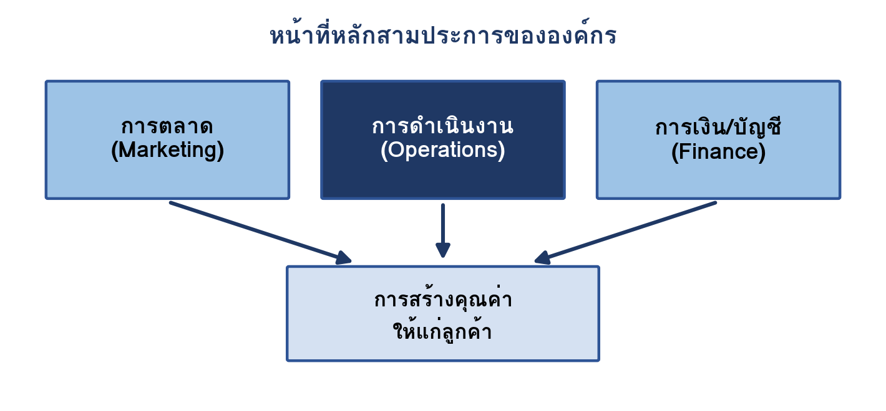
ผู้เขียนเห็นว่าในบริบทของวิสาหกิจขนาดกลางและขนาดย่อมและวิสาหกิจชุมชนในภาคตะวันออกเฉียงเหนือ หน้าที่ทั้งสามมักไม่ได้แยกออกจากกันอย่างชัดเจน ผู้ประกอบ การคนเดียวอาจรับผิดชอบทั้งสามด้าน การเข้าใจการดำเนินงานในฐานะหน้าที่หลักจึงช่วยให้ผู้ประกอบการจัดสรรความสนใจและทรัพยากรได้อย่างสมดุล และไม่ละเลยมิติการดำเนินงานซึ่งเป็นต้นทางของคุณภาพและต้นทุน
1.1.2 ขอบเขตการตัดสินใจของการจัดการการดำเนินงาน
ขอบเขตการตัดสินใจของการดำเนินงานครอบคลุมตั้งแต่ระดับกลยุทธ์จนถึงระดับปฏิบัติการ Heizer และคณะ (2020) ได้จำแนกการตัดสินใจเชิงกลยุทธ์ที่สำคัญออกเป็นสิบประการ ซึ่งเป็นกรอบที่ใช้กันแพร่หลายและเป็นโครงสร้างหลักของตำราเล่มนี้ ดังแสดงในตารางที่ 1.1 พร้อมการเชื่อมโยงไปยังบทที่เกี่ยวข้อง
| ลำดับ | การตัดสินใจเชิงกลยุทธ์ | บทที่เกี่ยวข้องในตำรา |
|---|---|---|
| 1 | การออกแบบสินค้าและบริการ | บทที่ 1, 2 |
| 2 | การจัดการคุณภาพ | บทที่ 8 |
| 3 | การออกแบบกระบวนการและกำลังการผลิต | บทที่ 3 |
| 4 | กลยุทธ์การเลือกทำเลที่ตั้ง | บทที่ 5 |
| 5 | กลยุทธ์การวางผังสถานประกอบการ | บทที่ 4 |
| 6 | ทรัพยากรมนุษย์และการออกแบบงาน | บทที่ 4, 9 |
| 7 | การจัดการโซ่อุปทาน | บทที่ 5, 10 |
| 8 | การจัดการสินค้าคงคลัง | บทที่ 7 |
| 9 | การพยากรณ์และการจัดตารางการผลิต | บทที่ 6 |
| 10 | การบำรุงรักษาและความน่าเชื่อถือ | บทที่ 8, 9 |
ตารางที่ 1.1 สะท้อนว่าเนื้อหาตลอดทั้งตำราถูกออกแบบให้ครอบคลุมการตัด สินใจเชิงกลยุทธ์ครบทุกด้าน และเชื่อมโยงกันเป็นระบบ มิใช่หัวข้อที่แยกขาด ผู้เขียนใช้กรอบนี้เป็นแกนในการบูรณาการองค์ความรู้ในบทที่ 10
1.2 วิวัฒนาการของการจัดการการดำเนินงาน
การจัดการการดำเนินงานมีพัฒนาการต่อเนื่องตามบริบททางเศรษฐกิจและเทคโนโลยี Stevenson (2021) และ Jacobs และ Chase (2021) ได้แบ่งพัฒนาการออกเป็นยุคสำคัญ ดังภาพที่ 1.2 ซึ่งสะท้อนการเปลี่ยนผ่านจากการเน้นประสิทธิภาพการผลิตสู่การเน้นคุณค่าและความยั่งยืน
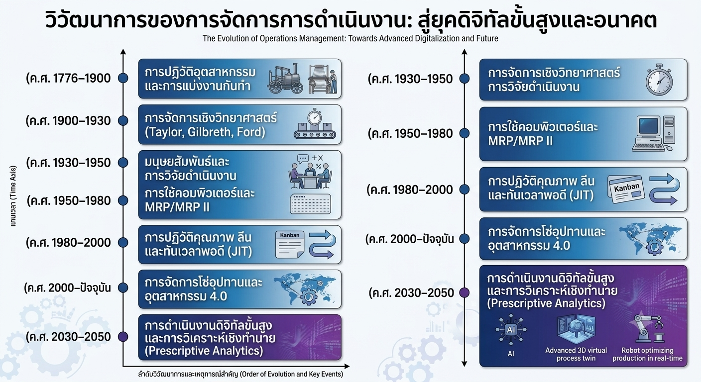
1.2.1 ยุคการปฏิวัติอุตสาหกรรมและการแบ่งงานกันทำ
จุดเริ่มต้นสำคัญคือแนวคิดการแบ่งงานกันทำ (Division of Labor) ที่ Adam Smith เสนอไว้ตั้งแต่ปี ค.ศ. 1776 ว่าการแบ่งงานเป็นส่วนย่อยช่วยเพิ่มผลิตภาพอย่างมาก ต่อมาการปฏิวัติอุตสาหกรรมและการนำเครื่องจักรไอน้ำมาใช้ได้เปลี่ยนการผลิตจากระบบหัตถกรรมในครัวเรือนสู่ระบบโรงงาน (Stevenson, 2021)
1.2.2 ยุคการจัดการเชิงวิทยาศาสตร์
ช่วงต้นศตวรรษที่ 20 Frederick W. Taylor ได้วางรากฐานการจัดการเชิงวิทยาศาสตร์ (Scientific Management) โดยเน้นการศึกษาวิธีการทำงานและการกำหนดมาตรฐานงานบนพื้นฐานข้อมูล ขณะที่ Frank และ Lillian Gilbreth พัฒนาการศึกษาการเคลื่อนไหวและเวลา และ Henry Ford ประยุกต์แนวคิดสายการประกอบเคลื่อนที่ในการผลิตรถยนต์จำนวนมาก (Heizer et al., 2020) ยุคนี้ยกระดับผลิตภาพอย่างก้าวกระโดดแต่ก็ถูกวิจารณ์ว่าละเลยมิติด้านมนุษย์
1.2.3 ยุคมนุษยสัมพันธ์และการวิจัยดำเนินงาน
การศึกษาฮอว์ธอร์น (Hawthorne Studies) ในทศวรรษ 1930 ชี้ให้เห็นว่าปัจจัยทางจิตวิทยาและสังคมมีผลต่อผลิตภาพของแรงงาน นำไปสู่แนวคิดมนุษยสัมพันธ์ ต่อมาในช่วงสงครามโลกครั้งที่สองและหลังจากนั้น การวิจัยดำเนินงาน (Operations Research) ได้นำแบบจำลองทางคณิตศาสตร์มาช่วยการตัดสินใจ เช่น การโปรแกรมเชิงเส้นและทฤษฎีแถวคอย (Jacobs & Chase, 2021)
1.2.4 ยุคคุณภาพ ลีน และโซ่อุปทานดิจิทัล
ตั้งแต่ทศวรรษ 1980 เป็นต้นมา แนวคิดด้านคุณภาพของ Deming และ Juran ระบบการผลิตแบบโตโยต้าและแนวคิดลีนของ Ohno ตลอดจนการจัดการโซ่อุปทานและเทคโนโลยีดิจิทัลในยุคอุตสาหกรรม 4.0 ได้กลายเป็นกระแสหลัก (Slack et al., 2022) การดำเนินงานในปัจจุบันจึงเน้นการสร้างคุณค่าตลอดโซ่อุปทาน ความยั่งยืน และการใช้ข้อมูลในการตัดสินใจ
จากการวิเคราะห์พัฒนาการข้างต้น ผู้เขียนเห็นว่ามีบทเรียนเชิงสังเคราะห์สามประการ ประการแรก จุดเน้นของสาขาเคลื่อนจากประสิทธิภาพภายในสู่คุณค่าที่ลูกค้ารับรู้ ประการที่สอง มิติด้านมนุษย์และข้อมูลกลายเป็นปัจจัยชี้ขาดควบคู่กับเทคโนโลยี และประการที่สาม ขอบเขตการจัดการขยายจากภายในโรงงานสู่ทั้งโซ่อุปทาน บทเรียนเหล่านี้มีนัยสำคัญต่อวิสาหกิจไทย ที่ควรก้าวข้ามการมุ่งลดต้นทุนเพียงอย่างเดียวไปสู่การสร้างคุณค่าและการบูรณาการเครือข่าย ความแตกต่างเชิงจุดเน้นและเครื่องมือของแต่ละยุคสรุปได้ดังตารางที่ 1.2
| ยุค/สำนักคิด | จุดเน้นสำคัญ | บุคคลสำคัญ | เครื่องมือเด่น |
|---|---|---|---|
| การจัดการเชิงวิทยาศาสตร์ | ประสิทธิภาพและมาตรฐานงาน | Taylor, Gilbreth, Ford | การศึกษาเวลา–การเคลื่อนไหว สายการประกอบ |
| มนุษยสัมพันธ์ | ปัจจัยมนุษย์และแรงจูงใจ | Mayo, Maslow | การออกแบบงานเชิงพฤติกรรม |
| การวิจัยดำเนินงาน | การตัดสินใจเชิงปริมาณ | Dantzig และคณะ | โปรแกรมเชิงเส้น ทฤษฎีแถวคอย |
| คุณภาพ | การป้องกันและการปรับปรุงต่อเนื่อง | Deming, Juran | การควบคุมเชิงสถิติ TQM |
| ลีนและโซ่อุปทาน | การกำจัดความสูญเปล่าและการบูรณาการ | Ohno, Womack | ทันเวลาพอดี VSM SCOR |
| อุตสาหกรรม 4.0 | การใช้ข้อมูลและการเชื่อมต่อ | นักวิชาการร่วมสมัย | IoT บิ๊กดาตา ปัญญาประดิษฐ์ |
ตารางที่ 1.2 แสดงให้เห็นว่าเครื่องมือการดำเนินงานในยุคปัจจุบันมิได้แทนที่ของยุคก่อน แต่เป็นการสะสมและบูรณาการแนวคิดให้ครบมิติยิ่งขึ้น ผู้เขียนเห็นว่าวิสาหกิจที่ประสบความสำเร็จในศตวรรษที่ 21 จำเป็นต้องใช้เครื่องมือหลายสำนักประกอบกันตามบริบทของปัญหา
ในเชิงวรรณกรรม Hayes และ Pisano (1994) เสนอว่าเป้าหมายของกลยุทธ์การผลิตยุคใหม่มิใช่เพียงการไล่ตามแนวปฏิบัติที่เป็นเลิศ เช่น การผลิตแบบลีนหรือการจัดการคุณภาพโดยรวม หากคือการสะสมสมรรถนะการดำเนินงาน (Operations Capabilities) ที่คู่แข่งเลียนแบบได้ยาก มุมมองนี้ตอกย้ำว่าวิวัฒนาการของศาสตร์ที่กล่าวมาข้างต้นมิได้เป็นเพียงการเปลี่ยนเครื่องมือ แต่เป็นการยกระดับบทบาทของการดำเนินงานจากหน่วยปฏิบัติสู่แหล่งสร้างความได้เปรียบเชิงกลยุทธ์ขององค์กร
1.3 ระบบการแปรรูป: ปัจจัยนำเข้า–กระบวนการแปรรูป–ผลผลิต
หัวใจของการดำเนินงานคือระบบการแปรรูป (Transformation System) ที่เปลี่ยนปัจจัยนำเข้า ได้แก่ วัตถุดิบ แรงงาน ทุน พลังงาน และสารสนเทศ ให้เป็นผลผลิตในรูปสินค้าและบริการ โดยมีกลไกข้อมูลย้อนกลับ (Feedback) และการควบคุมเพื่อปรับปรุงกระบวนการอย่างต่อเนื่อง ดังภาพที่ 1.3 (Stevenson, 2021)
กลไกข้อมูลย้อนกลับเป็นองค์ประกอบสำคัญที่ทำให้ระบบสามารถเรียนรู้และปรับตัวได้ โดยเปรียบเทียบผลผลิตจริงกับมาตรฐานที่กำหนด แล้วปรับปัจจัยนำเข้าหรือกระบวนการเมื่อพบความเบี่ยงเบน แนวคิดนี้เชื่อมโยงโดยตรงกับการควบคุมคุณภาพเชิงสถิติในบทที่ 8
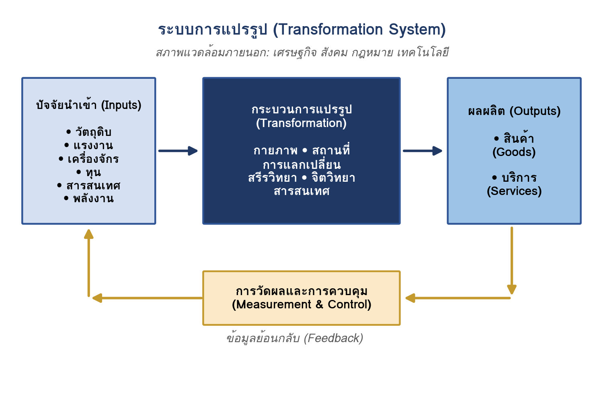
1.3.1 ประเภทของการแปรรูป
Slack และคณะ (2022) จำแนกการแปรรูปออกเป็นหลายประเภท ได้แก่ การแปรรูปทางกายภาพ (เช่น การผลิตและการแปรรูปอาหาร) การแปรรูปด้านสถานที่ (เช่น การขนส่งและโลจิสติกส์) การแปรรูปด้านการแลกเปลี่ยน (เช่น การค้าปลีก) การแปรรูปด้านการจัดเก็บ (เช่น คลังสินค้า) การแปรรูปทางสรีรวิทยา (เช่น บริการสุขภาพ) และการแปรรูปด้านสารสนเทศ (เช่น บริการทางการเงินและการสื่อสาร) วิสาหกิจแปรรูปเกษตรในภาคอีสานส่วนใหญ่เป็นการแปรรูปทางกายภาพที่มักผนวกการแปรรูปด้านสถานที่และการจัดเก็บเข้าด้วยกัน
1.4 ความแตกต่างระหว่างการผลิตสินค้าและการบริการ
แม้การผลิตสินค้าและการบริการต่างอาศัยระบบการแปรรูปเช่นเดียวกัน แต่มีลักษณะเฉพาะที่แตกต่างกันและส่งผลต่อแนวทางการจัดการ ในความเป็นจริง ผลิตภัณฑ์ส่วนใหญ่อยู่บนความต่อเนื่องระหว่างสินค้าและบริการ (Goods–Service Continuum) มากกว่าจะเป็นขั้วใดขั้วหนึ่งอย่างชัดเจน ดังภาพที่ 1.4 (Heizer et al., 2020)
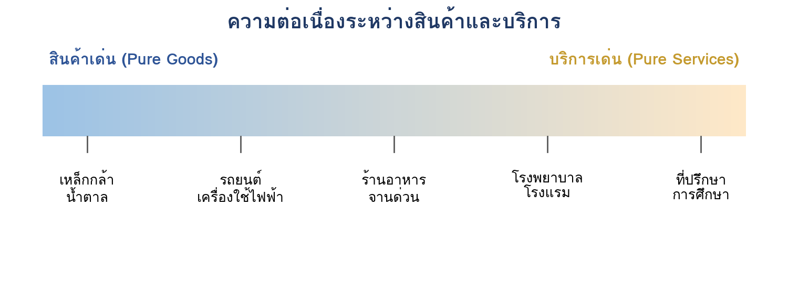
ลักษณะเด่นที่แยกบริการออกจากสินค้าสรุปได้สี่ประการ ดังตารางที่ 1.3 ซึ่งมีนัยต่อการจัดการคุณภาพ การวัดผลิตภาพ และการจัดการกำลังการผลิตที่แตกต่างกัน
| ลักษณะ | การผลิตสินค้า | การบริการ |
|---|---|---|
| ความจับต้องได้ | จับต้องได้ เก็บเป็นสินค้าคงคลังได้ | จับต้องไม่ได้ เก็บเป็นคลังไม่ได้ |
| การผลิตและการบริโภค | แยกเวลาและสถานที่ได้ | มักเกิดขึ้นพร้อมกัน |
| ความสม่ำเสมอ | กำหนดมาตรฐานได้ง่าย | ผันแปรตามผู้ให้และผู้รับบริการ |
| การมีส่วนร่วมของลูกค้า | ต่ำ | สูง ลูกค้าเป็นส่วนหนึ่งของกระบวนการ |
ผู้เขียนตั้งข้อสังเกตว่าแนวโน้มการผนวกบริการเข้ากับสินค้า (Servitization) กำลังลบเส้นแบ่งระหว่างสองประเภทนี้ วิสาหกิจแปรรูปอาหารในภาคอีสานที่เพิ่มบริการ เช่น การให้คำแนะนำการใช้ผลิตภัณฑ์ การรับสั่งผลิตตามความต้องการ และการเล่าเรื่องราวภูมิปัญญาท้องถิ่น ย่อมสร้างคุณค่าและความแตกต่างได้มากกว่าการขายสินค้าเพียงอย่างเดียว
📎 กรณีศึกษา
งานคลาสสิกของ Chase (1978) อธิบายความแตกต่างนี้ผ่านระดับการสัมผัสลูกค้า (Customer Contact) โดยชี้ว่ายิ่งกระบวนการมีการสัมผัสลูกค้าสูง ประสิทธิภาพการดำเนินงานยิ่งควบคุมได้ยาก เพราะลูกค้าเข้ามาเป็นส่วนหนึ่งของกระบวนการโดยตรง ข้อเสนอนี้เป็นรากฐานของการออกแบบระบบบริการที่แยกงานส่วนหน้า (Front Office) ออกจากงานส่วนหลัง (Back Office) เพื่อให้งานส่วนหลังได้ประสิทธิภาพใกล้เคียงระบบการผลิตสินค้า
1.5 บทบาทของการจัดการการดำเนินงานในโซ่อุปทาน
ในมุมมองสมัยใหม่ การดำเนินงานขององค์กรเป็นเพียงส่วนหนึ่งของโซ่อุปทานที่เชื่อมโยงตั้งแต่ผู้ส่งมอบจนถึงลูกค้าปลายทาง ดังภาพที่ 1.5 Chopra และ Meindl (2019) เน้นว่าความสามารถในการแข่งขันขององค์กรขึ้นอยู่กับประสิทธิภาพของทั้งโซ่อุปทาน มิใช่เฉพาะกระบวนการภายใน
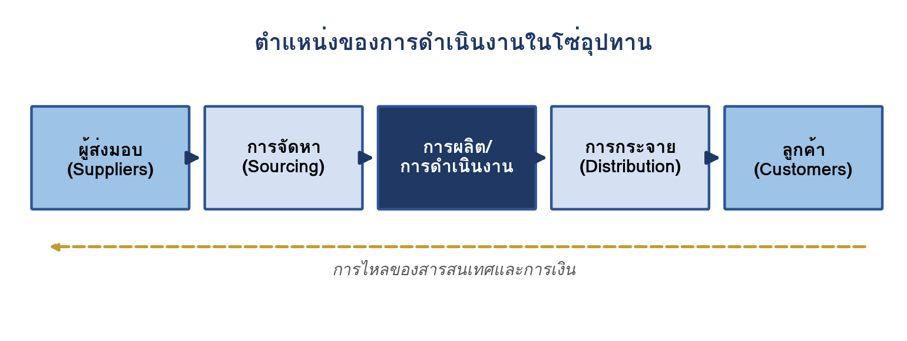
ปรากฏการณ์สำคัญที่สะท้อนความจำเป็นของการบูรณาการโซ่อุปทานคือปรากฏการณ์แส้ม้า (Bullwhip Effect) ที่ความผันผวนของอุปสงค์ถูกขยายขึ้นเมื่อย้อนขึ้นไปทางต้นน้ำ ซึ่งเกิดจากการขาดการแบ่งปันข้อมูล (Chopra & Meindl, 2019) การจัดการการดำเนินงานที่ดีจึงต้องคำนึงถึงการประสานงานและการแบ่งปันข้อมูลตลอดโซ่อุปทาน ซึ่งเป็นประเด็นที่จะกล่าวถึงในบทที่ 5 และบทที่ 10
เพื่อให้การวัดประสิทธิภาพของโซ่อุปทานเป็นไปอย่างเป็นระบบ Supply Chain Council ได้พัฒนาแบบจำลองอ้างอิงการดำเนินงานของโซ่อุปทาน (Supply Chain Operations Reference: SCOR) ที่จำแนกกระบวนการหลักออกเป็น 5 ประเภท ได้แก่ การวางแผน (Plan) การจัดหา (Source) การผลิต (Make) การส่งมอบ (Deliver) และการคืน (Return) พร้อมตัวชี้วัดในห้ามิติคือความน่าเชื่อถือ การตอบสนอง ความคล่องตัว ต้นทุน และการบริหารสินทรัพย์ (Bowersox, Closs และ Cooper, 2020) แบบจำลองนี้ช่วยให้องค์กรประเมินจุดแข็งจุดอ่อนและเปรียบเทียบสมรรถนะกับคู่แข่งได้อย่างเป็นมาตรฐาน ซึ่งจะอธิบายเพิ่มเติมในบทที่ 5
1.6 ผลิตภาพและการวัดผลการดำเนินงาน
ผลิตภาพ (Productivity) เป็นดัชนีพื้นฐานที่สะท้อนประสิทธิภาพของการแปรรูป นิยามเป็นอัตราส่วนระหว่างผลผลิตกับปัจจัยนำเข้า (Stevenson, 2021) การวัดผลิตภาพแบ่งได้เป็นผลิตภาพปัจจัยเดียว (Single-Factor) ที่พิจารณาปัจจัยนำเข้าชนิดเดียว และผลิตภาพหลายปัจจัย (Multifactor) ที่รวมหลายปัจจัยในรูปมูลค่า
1.6.1 ผลิตภาพปัจจัยเดียว
1.6.2 ผลิตภาพหลายปัจจัย
1.6.3 การวัดการเปลี่ยนแปลงผลิตภาพ
ผู้บริหารมักสนใจอัตราการเปลี่ยนแปลงของผลิตภาพเพื่อประเมินผลของการปรับปรุงกระบวนการ คำนวณได้จากสมการ
1.6.4 ดัชนีผลิตภาพระหว่างช่วงเวลา
เมื่อเปรียบเทียบผลิตภาพหลายปัจจัยระหว่างสองช่วงเวลา สามารถคำนวณดัชนีผลิตภาพ (Productivity Index) เพื่อประเมินทิศทางการพัฒนา ดังตัวอย่างต่อไปนี้
1.6.5 การวัดผลการดำเนินงานหลายมิติ
นอกเหนือจากผลิตภาพแล้ว องค์กรสมัยใหม่วัดผลการดำเนินงานในหลายมิติเพื่อความสมดุล ได้แก่ ต้นทุน คุณภาพ เวลาในการส่งมอบและความรวดเร็ว ความน่าเชื่อถือ และความยืดหยุ่น (Slack et al., 2022) มิติเหล่านี้เป็นพื้นฐานของมิติการแข่งขันในบทที่ 2 ในระดับประเทศ สำนักงานสภาพัฒนาการเศรษฐกิจและสังคมแห่งชาติได้ติดตามผลิตภาพรวมของไทยอย่างต่อเนื่อง โดยชี้ว่าการยกระดับผลิตภาพเป็นกุญแจสำคัญในการก้าวข้ามกับดักรายได้ปานกลาง ซึ่งสะท้อนว่าการจัดการการดำเนินงานมีบทบาทเชิงมหภาคต่อการพัฒนาเศรษฐกิจของประเทศด้วย
ในระดับวิสาหกิจ การวัดและยกระดับผลิตภาพถือเป็นจุดเริ่มต้นของการปรับปรุง การดำเนินงาน ที่จับต้องได้ ดังที่ คลอเคลีย วจนะวิชากร (2563) ได้ประยุกต์การศึกษา การทำงานและการลดความสูญเปล่าเพื่อเพิ่มประสิทธิภาพในกระบวนการผลิตไม้กวาดทางมะพร้าวของวิสาหกิจชุมชนบ้านบุ่งหวาย จังหวัดอุบลราชธานี ซึ่งสะท้อนว่าการวัด ผลิตภาพแรงงานและการวิเคราะห์กระบวนการเป็นเครื่องมือพื้นฐานที่ช่วยให้วิสาหกิจ
ขนาดเล็กในภาคตะวันออกเฉียงเหนือเพิ่มขีดความสามารถได้จริง
ในระดับมหภาค องค์การเพื่อความร่วมมือทางเศรษฐกิจและการพัฒนา (OECD) ติดตามดัชนีผลิตภาพหลายปัจจัยของภาคอุตสาหกรรมในหลายประเทศอย่างต่อเนื่อง และรายงานว่าอัตราการเติบโตของผลิตภาพหลายปัจจัยในภาคการผลิตชะลอตัวลงอย่างต่อเนื่องในหลายประเทศช่วงหลังสถานการณ์โควิด-19 (OECD, 2025) สอดคล้องกับแนวคิดที่ว่าการยกระดับผลิตภาพในระดับองค์กรที่กล่าวถึงในหัวข้อนี้เป็นส่วนหนึ่งของความท้าทายด้านผลิตภาพในระดับประเทศที่หลายภาคส่วนกำลังเผชิญร่วมกัน
1.6.6 การเทียบเคียงผลิตภาพกับวิสาหกิจอื่นในอุตสาหกรรมเดียวกัน (Benchmarking)
นอกจากการติดตามการเปลี่ยนแปลงของผลิตภาพภายในองค์กรเองแล้ว การเทียบเคียงผลิตภาพกับองค์กรอื่นในอุตสาหกรรมเดียวกัน (Productivity Benchmarking) ช่วยให้ผู้บริหารประเมินตำแหน่งเชิงแข่งขันของตนได้ชัดเจนขึ้น โดยเปรียบเทียบค่าผลิตภาพของตนกับค่าเฉลี่ยของกลุ่มและกับผู้นำอุตสาหกรรม (Best-in-Class)
หลักฐานเชิงประจักษ์ระดับสากลสนับสนุนความสำคัญของการยกระดับผลิตภาพอย่างชัดเจน การสำรวจวรรณกรรมของ Syverson (2011) พบว่าแม้ในอุตสาหกรรมเดียวกัน ผลิตภาพของสถานประกอบการอาจแตกต่างกันได้เกือบสองเท่า โดยปัจจัยกำหนดสำคัญ ได้แก่ คุณภาพการจัดการ เทคโนโลยี และการเรียนรู้จากการปฏิบัติ ซึ่งล้วนอยู่ในขอบเขตการตัดสินใจของการจัดการการดำเนินงานโดยตรง
1.7 การประยุกต์ในบริบทอุตสาหกรรมภาคตะวันออกเฉียงเหนือ
จากการสังเคราะห์แนวคิดข้างต้น ผู้เขียนเห็นว่าหลักการจัดการการดำเนินงานที่พัฒนาในบริบทอุตสาหกรรมขนาดใหญ่สามารถปรับใช้กับวิสาหกิจชุมชนและวิสาหกิจขนาดกลางและขนาดย่อมในภาคตะวันออกเฉียงเหนือได้ แต่ต้องคำนึงถึงเงื่อนไขเฉพาะของพื้นที่สามประการ
- ความผันผวนของวัตถุดิบเกษตรตามฤดูกาล ซึ่งทำให้การวางแผนกำลังการผลิตและการจัดการสินค้าคงคลังมีความซับซ้อนกว่าอุตสาหกรรมทั่วไป
- ข้อจำกัดด้านทุนและทักษะแรงงาน ทำให้การลงทุนในเทคโนโลยีต้องเป็นแบบค่อยเป็นค่อยไปและเหมาะสมกับบริบท
- โอกาสจากเอกลักษณ์ท้องถิ่นและทำเลเชื่อมโยงอนุภูมิภาคลุ่มแม่น้ำโขง ที่สามารถใช้เป็นฐานสร้างความแตกต่างและขยายตลาดข้ามพรมแดน
ผู้เขียนเสนอว่า แนวทางที่เหมาะสมสำหรับวิสาหกิจในพื้นที่คือการเริ่มจากการวัดและปรับปรุงผลิตภาพในกระบวนการที่สำคัญก่อน แล้วจึงค่อยขยายสู่การจัดการเชิงกลยุทธ์และการบูรณาการโซ่อุปทาน ทัศนะนี้เป็นแกนที่ผู้เขียนใช้ร้อยเรียงเนื้อหาตลอดทั้งตำรา และจะปรากฏเป็นกรณีศึกษาในบริบทท้องถิ่นในทุกบท
นอกจากนี้ ผู้เขียนเห็นว่าจุดแข็งของวิสาหกิจในภาคอีสานที่ยังไม่ได้ใช้ประโยชน์อย่างเต็มที่ คือเอกลักษณ์ภูมิปัญญาท้องถิ่นและเรื่องราวที่ผูกโยงกับวัตถุดิบและกระบวนการผลิต การประยุกต์แนวคิดการดำเนินงานสมัยใหม่ในบริบทนี้จึงไม่ใช่การลอกแบบจากอุตสาหกรรมขนาดใหญ่ แต่เป็นการบูรณาการเครื่องมือเชิงระบบ เช่น การวัดผลิตภาพ การควบคุมคุณภาพ และการจัดการสินค้าคงคลัง เข้ากับการสื่อสารคุณค่าและภูมิปัญญาที่เป็นเอกลักษณ์ ผลลัพธ์ที่คาดหวังคือวิสาหกิจที่มีทั้งประสิทธิภาพการผลิตและความสามารถในการสร้างความแตกต่างในตลาดพร้อมกัน ซึ่งเป็นทิศทางที่สอดคล้องกับแนวโน้มการสร้างคุณค่าตามที่ Slack และคณะ (2022) เสนอ และเป็นโอกาสในการยกระดับวิสาหกิจไทยในเวทีอนุภูมิภาคลุ่มแม่น้ำโขง
กรณีศึกษาประจำบท
📎 กรณีศึกษา
บทสรุป
การจัดการการดำเนินงานเป็นการออกแบบ วางแผน ดำเนินการ และปรับปรุงระบบการแปรรูปทรัพยากรให้เป็นสินค้าและบริการที่สร้างคุณค่า นับเป็นหนึ่งในหน้าที่หลักขององค์กรที่ประสานกับการตลาดและการเงิน ขอบเขตการตัดสินใจครอบคลุมการตัดสินใจเชิงกลยุทธ์สิบประการที่เป็นโครงสร้างของตำราทั้งเล่ม สาขานี้มีวิวัฒนาการจากการเน้นประสิทธิภาพการผลิตสู่การเน้นคุณค่า คุณภาพ และการบูรณาการโซ่อุปทานในยุคดิจิทัล
ระบบการแปรรูปเป็นแกนกลางที่เปลี่ยนปัจจัยนำเข้าเป็นผลผลิตพร้อมกลไกข้อมูลย้อนกลับ ผลิตภัณฑ์ส่วนใหญ่อยู่บนความต่อเนื่องระหว่างสินค้าและบริการซึ่งมีลักษณะการจัดการที่แตกต่างกัน การดำเนินงานในปัจจุบันเป็นส่วนหนึ่งของโซ่อุปทานที่ความสามารถในการแข่งขันขึ้นอยู่กับการประสานงานทั้งระบบ และผลิตภาพเป็นดัชนีพื้นฐานในการวัดและปรับปรุงการดำเนินงาน ทั้งนี้ ผู้เขียนได้วิเคราะห์ว่าหลักการเหล่านี้สามารถประยุกต์กับวิสาหกิจในภาคตะวันออกเฉียงเหนือได้ภายใต้เงื่อนไขเฉพาะของพื้นที่ ซึ่งเป็นแนวทางที่ใช้ตลอดทั้งตำรา
คำถามทบทวนและแบบฝึกหัด
ก. คำถามทบทวน
- จงสังเคราะห์นิยามของการจัดการการดำเนินงานจากนักวิชาการอย่างน้อยสองท่าน
- การตัดสินใจเชิงกลยุทธ์ 10 ประการมีอะไรบ้าง และเชื่อมโยงกับบทใดในตำรา
- วิวัฒนาการของการดำเนินงานแต่ละยุคมีจุดเน้นอย่างไร และให้บทเรียนใด
- จงอธิบายแบบจำลองระบบการแปรรูปและความสำคัญของกลไกข้อมูลย้อนกลับ
- การผลิตสินค้าและการบริการต่างกันอย่างไรในสี่ลักษณะหลัก
ข. แบบฝึกหัดเชิงคำนวณ
- โรงงานผลิตได้ 9,600 ชิ้นต่อวัน ใช้แรงงาน 10 คน คนละ 8 ชั่วโมง จงคำนวณผลิตภาพแรงงาน
- ผลผลิตมูลค่า 250,000 บาท ปัจจัยนำเข้ารวม 200,000 บาท จงคำนวณผลิตภาพหลายปัจจัย และหากต่อมาเพิ่มเป็น 1.35 จงคำนวณร้อยละการเปลี่ยนแปลง
- ผลิตภาพช่วงที่ 1 = 1.40 ช่วงที่ 2 ผลผลิต 168,000 บาท ปัจจัยนำเข้า 112,000 บาท จงคำนวณดัชนีผลิตภาพ
ค. ประเด็นอภิปรายเชิงวิพากษ์
- การมุ่งเพิ่มผลิตภาพอาจขัดแย้งกับมิติคุณภาพหรือความยั่งยืนหรือไม่ จงอภิปรายพร้อมตัวอย่าง
- แนวคิดการจัดการการดำเนินงานที่พัฒนาในอุตสาหกรรมขนาดใหญ่เหมาะสมเพียงใดกับวิสาหกิจชุมชนไทย
เอกสารอ้างอิงประจำบท
OECD. (2025). OECD compendium of productivity indicators 2025. OECD Publishing.
Bowersox, D. J., Closs, D. J., & Cooper, M. B. (2020). Supply chain logistics management (5th ed.). McGraw-Hill Education.
Chase, R. B. (1978). Where does the customer fit in a service operation? Harvard Business Review, 56(6), 137-142.
Chopra, S., & Meindl, P. (2019). Supply chain management: Strategy, planning, and operation (7th ed.). Pearson.
Hayes, R. H., & Pisano, G. P. (1994). Beyond world-class: The new manufacturing strategy. Harvard Business Review, 72(1), 77-86.
Heizer, J., Render, B., & Munson, C. (2020). Operations management: Sustainability and supply chain management (13th ed.). Pearson.
Jacobs, F. R., & Chase, R. B. (2021). Operations and supply chain management (16th ed.). McGraw-Hill Education.
Krajewski, L. J., Malhotra, M. K., & Ritzman, L. P. (2022). Operations management: Processes and supply chains (13th ed.). Pearson.
Slack, N., Brandon-Jones, A., & Burgess, N. (2022). Operations management (10th ed.). Pearson.
Stevenson, W. J. (2021). Operations management (14th ed.). McGraw-Hill Education.
Syverson, C. (2011). What determines productivity? Journal of Economic Literature, 49(2), 326-365.
คลอเคลีย วจนะวิชากร (2563). การลดความสูญเปล่าเพื่อเพิ่มประสิทธิภาพกระบวนการ ผลิตไม้กวาดทางมะพร้าว กรณีศึกษาวิสาหกิจชุมชนบ้านบุ่งหวาย จังหวัด อุบลราชธานี. วารสารวิชาการ วิศวกรรมศาสตร์ ม.อบ., 13(1), 141–152.
สำนักงานสภาพัฒนาการเศรษฐกิจและสังคมแห่งชาติ. (2566). รายงานภาวะเศรษฐกิจไทยและผลิตภาพการผลิต. สำนักงานสภาพัฒนาการเศรษฐกิจและสังคมแห่งชาติ.
กลยุทธ์การดำเนินงานและการเพิ่มผลิตภาพ
🎯 วัตถุประสงค์การเรียนรู้ประจำบท
เมื่อศึกษาบทนี้จบแล้ว ผู้เรียนสามารถ
- อธิบายความสัมพันธ์ระหว่างกลยุทธ์องค์กรกับความสามารถในการแข่งขันได้
- อธิบายลำดับชั้นของกลยุทธ์และตำแหน่งของกลยุทธ์การดำเนินงานได้
- วิเคราะห์มิติการแข่งขันสี่ด้านและความสัมพันธ์เชิงแลกได้แลกเสียได้
- จำแนกผู้กำหนดคุณสมบัติเบื้องต้นและผู้ชนะคำสั่งซื้อได้
- อธิบายกระบวนการกำหนดกลยุทธ์การดำเนินงานได้
- ประยุกต์ผลิตภาพเป็นเครื่องมือเชิงกลยุทธ์ในการตัดสินใจได้
ในบทที่ 1 ได้กล่าวถึงแนวคิดพื้นฐานของการจัดการการดำเนินงาน และบทบาทของ การดำเนินงานในฐานะหน้าที่หลักขององค์กร บทนี้จะขยายความสู่มิติเชิงกลยุทธ์ โดยชี้ให้เห็นว่า การดำเนินงานมิได้เป็นเพียงหน้าที่สนับสนุน แต่เป็นแหล่งสำคัญของความได้เปรียบในการแข่งขัน องค์กรที่บริหารการดำเนินงานได้อย่างสอดคล้องกับกลยุทธ์โดยรวมย่อมสามารถสร้างคุณค่าให้ลูกค้าได้เหนือกว่าคู่แข่ง เนื้อหาในบทนี้ครอบคลุมลำดับชั้นของกลยุทธ์ มิติการแข่งขัน แนวคิดผู้กำหนด คุณสมบัติและผู้ชนะคำสั่งซื้อ กระบวนการกำหนดกลยุทธ์การดำเนินงาน ตลอดจนการใช้ผลิตภาพ เป็นเครื่องมือเชิงกลยุทธ์
2.1 กลยุทธ์และความสามารถในการแข่งขัน
กลยุทธ์ (Strategy) หมายถึง แผนการระยะยาวที่กำหนดทิศทางและการจัดสรรทรัพยากร ขององค์กรเพื่อบรรลุเป้าหมายภายใต้สภาพแวดล้อมที่มีการแข่งขัน ส่วนความสามารถในการแข่งขัน (Competitiveness) หมายถึง ความสามารถขององค์กรในการสร้างและส่งมอบคุณค่าที่ ลูกค้า ต้องการได้ดีกว่าคู่แข่ง Heizer, Render และ Munson (2020) ชี้ว่าองค์กรสามารถสร้างความ ได้เปรียบในการแข่งขันได้สามแนวทางหลัก คือ การสร้างความแตกต่าง (Differentiation) การเป็น ผู้นำด้านต้นทุน (Cost Leadership) และการตอบสนองอย่างรวดเร็ว (Response)
การดำเนินงานเป็นกลไกสำคัญที่แปลงแนวทางการแข่งขันข้างต้นให้เป็นจริง เพราะการ ตัดสินใจด้านกระบวนการ คุณภาพ ทำเลที่ตั้ง และโซ่อุปทาน ล้วนกำหนดต้นทุน ความเร็ว และ คุณภาพ ที่ลูกค้าได้รับโดยตรง ดังนั้นความสอดคล้องเชิงกลยุทธ์ (Strategic Fit) ระหว่างกลยุทธ์ การดำเนินงานกับกลยุทธ์องค์กรจึงเป็นเงื่อนไขสำคัญของความสำเร็จ
2.2 ลำดับชั้นของกลยุทธ์
กลยุทธ์ในองค์กรมีการจัดเรียงเป็นลำดับชั้นสามระดับที่เชื่อมโยงกันจากบนลงล่าง ดังภาพที่ 2.1
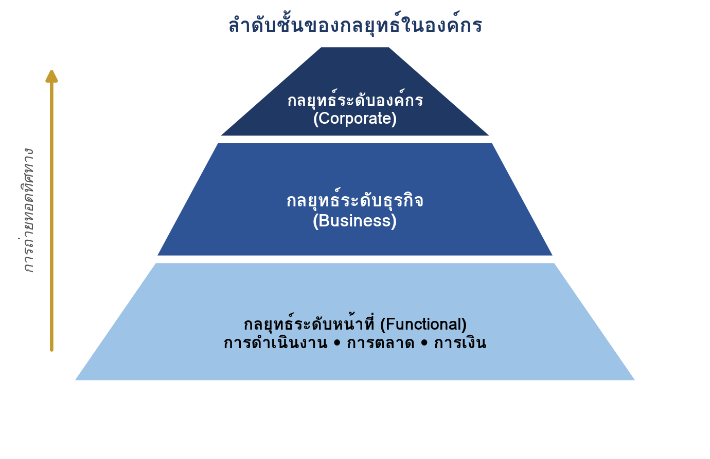
- กลยุทธ์ระดับองค์กร (Corporate Strategy) กำหนดขอบเขตธุรกิจ ทิศทาง การเติบโต และการจัดสรรทรัพยากรระหว่างหน่วยธุรกิจ
- กลยุทธ์ระดับธุรกิจ (Business Strategy) กำหนดวิธีการแข่งขันในแต่ละตลาดหรือกลุ่มผลิตภัณฑ์
- กลยุทธ์ระดับหน้าที่ (Functional Strategy) กำหนดแนวทางของแต่ละหน้าที่ เช่น การดำเนินงาน การตลาด และการเงิน ให้สนับสนุนกลยุทธ์ระดับบน
กลยุทธ์การดำเนินงาน (Operations Strategy) อยู่ในระดับหน้าที่ ทำหน้าที่แปลงเป้าหมาย เชิงแข่งขันขององค์กรให้เป็นการตัดสินใจและการปฏิบัติที่เป็นรูปธรรมในกระบวนการแปรรูป
2.3 มิติการแข่งขันของการดำเนินงาน
มิติการแข่งขัน (Competitive Priorities) คือ คุณลักษณะด้านการดำเนินงานที่องค์กรเลือก ให้ความสำคัญเพื่อสร้างความได้เปรียบ ประกอบด้วยสี่มิติหลัก ดังภาพที่ 2.2
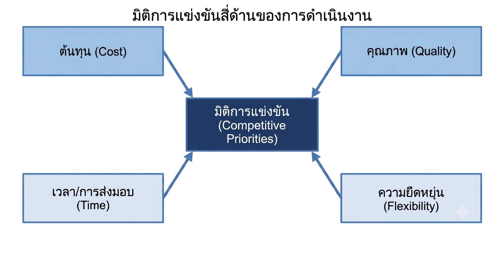
| มิติการแข่งขัน | ความหมาย | ตัวอย่างตัวชี้วัด |
|---|---|---|
| ต้นทุน (Cost) | ผลิตและส่งมอบด้วยต้นทุนต่ำ | ต้นทุนต่อหน่วย ผลิตภาพ อัตราการใช้กำลังการผลิต |
| คุณภาพ (Quality) | ความสอดคล้องตามข้อกำหนดและความพึงพอใจ | อัตราของเสีย ข้อร้องเรียน คะแนนความพึงพอใจ |
| เวลา (Time) | ความรวดเร็วและความตรงต่อเวลาในการส่งมอบ | รอบเวลาการผลิต อัตราการส่งมอบตรงเวลา |
| ความยืดหยุ่น (Flexibility) | ความสามารถปรับเปลี่ยนตามความต้องการ | ความหลากหลายผลิตภัณฑ์ เวลาในการปรับตั้งเครื่อง |
2.3.1 การแลกได้แลกเสียและการสะสมสมรรถนะ
แนวคิดดั้งเดิมเชื่อว่ามิติการแข่งขันมีลักษณะแลกได้แลกเสีย (Trade-off) กล่าวคือ การมุ่ง เน้นมิติหนึ่งอาจต้องเสียสละอีกมิติหนึ่ง เช่น การเพิ่มความยืดหยุ่นอาจทำให้ต้นทุนสูงขึ้น อย่างไร ก็ตาม แนวคิดสมัยใหม่อย่างแบบจำลองการสะสมสมรรถนะ (Cumulative Capabilities หรือ Sand Cone Model) เสนอว่า องค์กรสามารถพัฒนาสมรรถนะหลายด้านพร้อมกันได้ โดยเริ่มจากการ สร้างคุณภาพให้มั่นคงก่อน แล้วต่อยอดสู่ความน่าเชื่อถือ ความรวดเร็ว และต้นทุนที่ต่ำลงตามลำดับ ซึ่งสอดคล้องกับแนวคิดการผลิตแบบลีนที่จะกล่าวถึงในบทที่ 9
2.3.2 การวิเคราะห์ปัจจัยภายในเชิงปริมาณด้วยเมทริกซ์ถ่วงน้ำหนัก
การวิเคราะห์ SWOT ในเชิงคุณภาพช่วยระบุจุดแข็ง จุดอ่อน โอกาส และอุปสรรคได้อย่างครอบคลุม แต่ยังไม่ได้จัดลำดับความสำคัญเชิงปริมาณ เครื่องมือเมทริกซ์การประเมินปัจจัยภายใน (Internal Factor Evaluation Matrix: IFE) จึงถูกนำมาเสริม โดยกำหนดน้ำหนักความสำคัญ (Weight) ของแต่ละปัจจัยให้รวมกันเท่ากับ 1.00 ตามระดับผลกระทบต่อความสำเร็จขององค์กร แล้วให้คะแนนสมรรถนะปัจจุบัน (Rating) ตั้งแต่ 1 (อ่อนแอมาก) ถึง 4 (แข็งแกร่งมาก) จากนั้นคำนวณคะแนนถ่วงน้ำหนักของแต่ละปัจจัยและรวมเป็นคะแนนรวม ตามสมการ
คะแนนรวมที่มากกว่า 2.50 บ่งชี้ว่าองค์กรมีสถานะภายในที่แข็งแกร่งโดยรวม ขณะที่คะแนนต่ำกว่า 2.50 บ่งชี้ว่าจุดอ่อนภายในมีน้ำหนักมากกว่าจุดแข็ง ดังตัวอย่างที่ 2.3
วิธีทำ คะแนนรวม = 1.20 + 0.80 + 0.30 + 0.40 = 2.70 ตอบ คะแนนรวมเท่ากับ 2.70 ซึ่งมากกว่า 2.50 แสดงว่าวิสาหกิจมีสถานะภายในโดยรวมอยู่ในเกณฑ์ค่อนข้างแข็งแกร่ง โดยจุดแข็งด้านเอกลักษณ์ผลิตภัณฑ์และคุณภาพวัตถุดิบมีน้ำหนักมากพอที่จะชดเชยจุดอ่อนด้านต้นทุนและกำลังการผลิตได้ในระดับหนึ่ง ผลการวิเคราะห์นี้สนับสนุนการเลือกกลยุทธ์การสร้างความแตกต่าง (Differentiation) มากกว่าการเป็นผู้นำด้านต้นทุน สอดคล้องกับกระบวนการกำหนดกลยุทธ์การดำเนินงานในหัวข้อ 2.5
วิธีทำ คะแนนรวม = 0.75 + 0.45 + 0.60 + 0.30 = 2.10 ตอบ คะแนนรวมเท่ากับ 2.10 ซึ่งต่ำกว่า 2.50 แสดงว่าสภาพแวดล้อมภายนอกโดยรวมมีลักษณะเป็นอุปสรรคมากกว่าโอกาส วิสาหกิจจึงควรใช้จุดแข็งภายในที่ประเมินได้ในตัวอย่างที่ 2.3 (คะแนน 2.70) เป็นฐานในการต่อสู้กับอุปสรรคภายนอก โดยเฉพาะการเน้นเอกลักษณ์และคุณภาพเพื่อหลีกเลี่ยงการแข่งขันด้านราคาโดยตรงกับคู่แข่งที่ใช้เครื่องจักร ซึ่งเป็นอุปสรรคภายนอกที่มีน้ำหนักสูงสุด
เมทริกซ์ IFE และ EFE ที่แสดงในตัวอย่างที่ 2.3 มีที่มาจากกรอบแนวคิดการจัดการเชิงกลยุทธ์ของ David และ David ซึ่งเป็นหนึ่งในตำราการจัดการเชิงกลยุทธ์ที่ได้รับการอ้างอิงอย่างแพร่หลายที่สุดในหลักสูตรบริหารธุรกิจทั่วโลก โดยเสนอว่าการถ่วงน้ำหนักปัจจัยเชิงคุณภาพให้เป็นคะแนนเชิงปริมาณช่วยให้ผู้บริหารเปรียบเทียบทางเลือกเชิงกลยุทธ์ได้เป็นระบบมากกว่าการวิเคราะห์ SWOT แบบบรรยายเพียงอย่างเดียว (David & David, 2017)
ในเชิงวิชาการ แนวคิดกลยุทธ์การดำเนินงานมีรากฐานจากงานบุกเบิกของ Skinner (1969) ซึ่งชี้ว่าฝ่ายการผลิตมักเป็นจุดเชื่อมโยงที่ขาดหายของกลยุทธ์ระดับองค์กร และเสนอให้การตัดสินใจด้านการผลิตสอดคล้องกับทิศทางการแข่งขันของธุรกิจ งานวิจัยเชิงประจักษ์ในเวลาต่อมาสนับสนุนแนวคิดนี้อย่างต่อเนื่อง อาทิ Ward และ Duray (2000) พบจากข้อมูลโรงงานอุตสาหกรรมว่ากลยุทธ์การแข่งขันทำหน้าที่เป็นตัวกลางเชื่อมโยงสภาพแวดล้อมทางธุรกิจเข้ากับกลยุทธ์การผลิต และความเชื่อมโยงดังกล่าวปรากฏชัดเจนกว่าในองค์กรที่มีผลการดำเนินงานดี ขณะที่ Boyer และ Lewis (2002) ศึกษาโรงงาน 110 แห่งที่นำเทคโนโลยีการผลิตขั้นสูงมาใช้ พบว่าการแลกได้แลกเสียระหว่างมิติการแข่งขันยังคงดำรงอยู่ แม้เทคโนโลยีสมัยใหม่จะช่วยผ่อนคลายข้อจำกัดลงบางส่วน ผลการศึกษาเหล่านี้ตอกย้ำว่าการจัดลำดับความสำคัญของมิติการแข่งขันเป็นการตัดสินใจเชิงกลยุทธ์ที่องค์กรไม่อาจหลีกเลี่ยงได้
2.4 ผู้กำหนดคุณสมบัติเบื้องต้นและผู้ชนะคำสั่งซื้อ
Hill (อ้างถึงใน Slack et al., 2022) เสนอแนวคิดที่ช่วยเชื่อมโยงความต้องการของตลาด กับมิติการแข่งขัน โดยจำแนกปัจจัยการแข่งขันออกเป็นสองประเภท
- ผู้กำหนดคุณสมบัติเบื้องต้น (Order Qualifiers) คือ เกณฑ์ขั้นต่ำที่องค์กรต้องมี เพื่อให้ลูกค้าพิจารณา หากต่ำกว่าระดับนี้จะถูกตัดออกจากการพิจารณา แต่การทำได้ เกินระดับนี้ไม่ได้เพิ่มโอกาสการขายอย่างมีนัยสำคัญ
- ผู้ชนะคำสั่งซื้อ (Order Winners) คือ ปัจจัยที่ทำให้ลูกค้าตัดสินใจเลือกองค์กร เหนือคู่แข่ง ยิ่งทำได้ดีเท่าใดยิ่งเพิ่มโอกาสการขายมากขึ้น
ความสัมพันธ์ระหว่างสมรรถนะกับความได้เปรียบในการแข่งขันของทั้งสองประเภทแสดงได้ดังภาพที่ 2.3 จะเห็นว่าผู้กำหนดคุณสมบัติเบื้องต้นมีลักษณะอิ่มตัวหลังผ่านระดับขั้นต่ำ ขณะที่ผู้ชนะ คำสั่งซื้อเพิ่มความได้เปรียบอย่างต่อเนื่องตามระดับสมรรถนะ
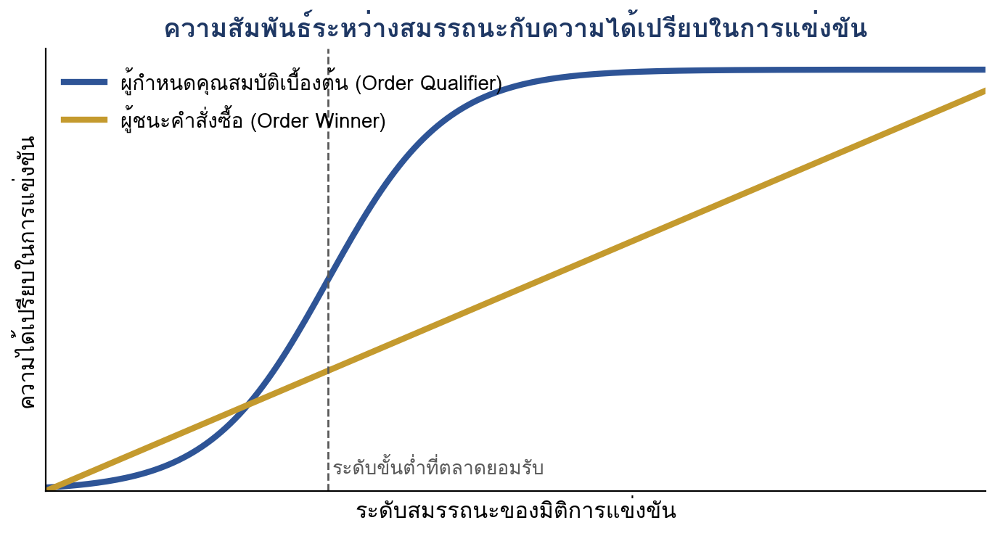
สิ่งสำคัญคือ ปัจจัยที่เป็นผู้ชนะคำสั่งซื้ออาจเปลี่ยนเป็นผู้กำหนดคุณสมบัติเบื้องต้น เมื่อเวลาผ่านไปและคู่แข่งพัฒนาตาม ดังตัวอย่างในตารางที่ 2.2 องค์กรจึงต้องทบทวน และปรับมิติ การแข่งขันอย่างสม่ำเสมอ
| อุตสาหกรรม | ผู้กำหนดคุณสมบัติเบื้องต้น | ผู้ชนะคำสั่งซื้อ |
|---|---|---|
| อาหารแปรรูป | ความปลอดภัยและมาตรฐาน อย. | รสชาติและราคา |
| ชิ้นส่วนยานยนต์ | คุณภาพตามข้อกำหนด | การส่งมอบตรงเวลาและต้นทุน |
| สินค้าแฟชั่น | คุณภาพการตัดเย็บ | ความรวดเร็วและความยืดหยุ่นของดีไซน์ |
📎 กรณีศึกษา
2.5 กระบวนการกำหนดกลยุทธ์การดำเนินงาน
การกำหนดกลยุทธ์การดำเนินงานเป็นกระบวนการแปลงพันธกิจและกลยุทธ์องค์กรลงสู่การตัดสินใจเชิงปฏิบัติ โดยมีขั้นตอนสำคัญดังภาพที่ 2.4
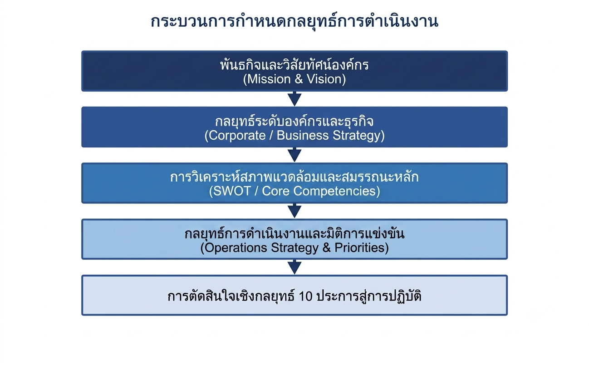
กระบวนการเริ่มจากการทบทวนพันธกิจและวิสัยทัศน์ ตามด้วยการกำหนดกลยุทธ์ระดับ องค์กรและธุรกิจ จากนั้นวิเคราะห์สภาพแวดล้อมภายนอกและสมรรถนะหลักภายในด้วยเครื่องมือ เช่น การวิเคราะห์ SWOT เพื่อกำหนดมิติการแข่งขันที่เหมาะสม แล้วจึงถ่ายทอดสู่การตัดสินใจ เชิงกลยุทธ์ 10 ประการตามที่นำเสนอในบทที่ 1 ความสอดคล้องตลอดสายนี้ คือหัวใจที่ทำให้การ ดำเนินงาน สนับสนุนความสำเร็จขององค์กรอย่างแท้จริง
2.6 ผลิตภาพในฐานะเครื่องมือเชิงกลยุทธ์
ผลิตภาพ (Productivity) ที่ได้กล่าวถึงการคำนวณพื้นฐานไว้ในบทที่ 1 มิได้เป็นเพียงดัชนี วัดประสิทธิภาพ แต่ยังเป็นเครื่องมือเชิงกลยุทธ์ที่สะท้อนความสามารถในการแข่งขันด้านต้นทุน องค์กรที่มีผลิตภาพสูงกว่าคู่แข่งสามารถเสนอราคาที่แข่งขันได้ในขณะที่ยังรักษากำไร ดังนั้นการเพิ่ม ผลิตภาพจึงเป็นเป้าหมายเชิงกลยุทธ์ที่สำคัญ
การทบทวนวรรณกรรมของ Dangayach และ Deshmukh (2001) ซึ่งสังเคราะห์งานวิจัยด้านกลยุทธ์การผลิตกว่า 260 เรื่อง ชี้ว่าการเพิ่มผลิตภาพเป็นหนึ่งในผลลัพธ์หลักที่ใช้ประเมินความสำเร็จของกลยุทธ์การดำเนินงาน สำหรับบริบทประเทศไทย งานวิจัยของพิชาภพ พันธุ์แพ (2568) ที่ศึกษาผู้ประกอบการวิสาหกิจขนาดกลางและขนาดย่อมจำนวน 400 รายในจังหวัดเชียงใหม่ด้วยการวิเคราะห์สมการโครงสร้าง พบว่าการประยุกต์เทคโนโลยีดิจิทัลมีอิทธิพลทางตรงเชิงบวกต่อผลการดำเนินงานอย่างมีนัยสำคัญทางสถิติ สะท้อนว่าการลงทุนด้านเทคโนโลยีและการพัฒนาทักษะดิจิทัลของบุคลากรเป็นช่องทางเพิ่มผลิตภาพที่เป็นรูปธรรมของวิสาหกิจไทยในปัจจุบัน
2.6.1 ปัจจัยที่ส่งผลต่อผลิตภาพและแนวทางการเพิ่มผลิตภาพ
ผลิตภาพได้รับอิทธิพลจากปัจจัยหลายด้าน ได้แก่ แรงงาน (ทักษะและแรงจูงใจ) ทุน (เครื่องจักรและเทคโนโลยี) และการบริหารจัดการ (วิธีการทำงานและการจัดกระบวนการ) โดยปัจจัยด้านการบริหารจัดการมักให้ผลตอบแทนสูงเมื่อเทียบกับการลงทุน แนวทางการเพิ่ม ผลิตภาพ ที่สำคัญมีดังนี้
- การปรับปรุงกระบวนการและการลดความสูญเปล่าด้วยแนวคิดลีน
- การพัฒนาทักษะและการจูงใจบุคลากร
- การลงทุนในเทคโนโลยีและระบบอัตโนมัติที่เหมาะสม
- การเทียบเคียงสมรรถนะ (Benchmarking) กับองค์กรชั้นนำเพื่อตั้งเป้าหมายการพัฒนา
2.6.2 ตัวอย่างการใช้ผลิตภาพในการตัดสินใจเชิงกลยุทธ์
กรณีศึกษาประจำบท
📎 กรณีศึกษา
บทสรุป
กลยุทธ์การดำเนินงานเป็นการแปลงกลยุทธ์องค์กรและความต้องการของตลาดให้เป็นการตัดสินใจและการปฏิบัติในกระบวนการแปรรูป โดยอยู่ในลำดับชั้นระดับหน้าที่ที่ต้องสอดคล้องกับกลยุทธ์ระดับองค์กรและธุรกิจ องค์กรแข่งขันผ่านมิติหลักสี่ด้าน ได้แก่ ต้นทุน คุณภาพ เวลา และความยืดหยุ่น ซึ่งอาจมีลักษณะแลกได้แลกเสียหรือสะสมสมรรถนะร่วมกันได้
แนวคิดผู้กำหนดคุณสมบัติเบื้องต้นและผู้ชนะคำสั่งซื้อช่วยให้องค์กรระบุได้ว่ามิติใดเป็นเกณฑ์ขั้นต่ำและมิติใดเป็นปัจจัยชี้ขาดการตัดสินใจของลูกค้า กระบวนการกำหนดกลยุทธ์การดำเนินงานเริ่มจากพันธกิจสู่การตัดสินใจเชิงกลยุทธ์อย่างเป็นระบบ ทั้งนี้ ผลิตภาพเป็นเครื่องมือเชิงกลยุทธ์สำคัญที่สะท้อนความสามารถในการแข่งขันด้านต้นทุน และใช้เป็นเกณฑ์ในการเลือกทางเลือกและตั้งเป้าหมายการพัฒนาผ่านการเทียบเคียงสมรรถนะ
คำถามทบทวนและแบบฝึกหัด
ก. คำถามทบทวน
- จงอธิบายความสัมพันธ์ระหว่างกลยุทธ์การดำเนินงานกับความสามารถในการแข่งขันขององค์กร
- ลำดับชั้นของกลยุทธ์มีกี่ระดับ และกลยุทธ์การดำเนินงานอยู่ในระดับใด
- จงเปรียบเทียบแนวคิดการแลกได้แลกเสียกับแบบจำลองการสะสมสมรรถนะ
- ผู้กำหนดคุณสมบัติเบื้องต้นและผู้ชนะคำสั่งซื้อแตกต่างกันอย่างไร ให้ยกตัวอย่าง
- จงอธิบายขั้นตอนของกระบวนการกำหนดกลยุทธ์การดำเนินงาน
ข. แบบฝึกหัดเชิงคำนวณ
- กิจการมีทางเลือกกระบวนการสองทาง ทางเลือก A ให้ผลผลิตมูลค่า 300,000 บาท ใช้ปัจจัยนำเข้ารวม 220,000 บาท ทางเลือก B ให้ผลผลิต 300,000 บาท ใช้ปัจจัยนำเข้ารวม 210,000 บาท จงคำนวณผลิตภาพและระบุทางเลือกที่เหมาะสม
- กิจการมีผลิตภาพหลายปัจจัยปัจจุบัน 1.30 ต้องการเพิ่มเป็น 1.50 จงคำนวณร้อยละการเพิ่มผลิตภาพที่ต้องการ
- จงเลือกอุตสาหกรรมหนึ่งที่สนใจ แล้วระบุผู้กำหนดคุณสมบัติเบื้องต้นและผู้ชนะคำสั่งซื้ออย่างน้อยอย่างละสองปัจจัย พร้อมเหตุผล
เอกสารอ้างอิงประจำบท
Boyer, K. K., & Lewis, M. W. (2002). Competitive priorities: Investigating the need for trade-offs in operations strategy. Production and Operations Management, 11(1), 9-20.
David, F. R., & David, F. R. (2017). Strategic management: A competitive advantage approach, concepts and cases (16th ed.). Pearson.
Dangayach, G. S., & Deshmukh, S. G. (2001). Manufacturing strategy: Literature review and some issues. International Journal of Operations & Production Management, 21(7), 884-932.
Heizer, J., Render, B., & Munson, C. (2020). Operations management: Sustainability and supply chain management (13th ed.). Pearson.
Hill, T., & Hill, A. (2018). Manufacturing operations strategy (4th ed.). Palgrave Macmillan.
Krajewski, L. J., Malhotra, M. K., & Ritzman, L. P. (2022). Operations management: Processes and supply chains (13th ed.). Pearson.
Porter, M. E. (1996). What is strategy? Harvard Business Review, 74(6), 61–78.
Skinner, W. (1969). Manufacturing-missing link in corporate strategy. Harvard Business Review, 47(3), 136-145.
Slack, N., Brandon-Jones, A., & Burgess, N. (2022). Operations management (10th ed.). Pearson.
Stevenson, W. J. (2021). Operations management (14th ed.). McGraw-Hill Education.
Ward, P. T., & Duray, R. (2000). Manufacturing strategy in context: Environment, competitive strategy and manufacturing strategy. Journal of Operations Management, 18(2), 123-138.
พิชาภพ พันธุ์แพ. (2568). อิทธิพลของนวัตกรรมและเทคโนโลยีดิจิทัลต่อผลการดำเนินงานของวิสาหกิจขนาดกลางและขนาดย่อมในจังหวัดเชียงใหม่. วารสารบริหารศาสตร์ มหาวิทยาลัยอุบลราชธานี, 14(3), 93-116.
ประเภทของกระบวนการผลิตและการเลือกกระบวนการ
🎯 วัตถุประสงค์การเรียนรู้ประจำบท
เมื่อศึกษาบทนี้จบแล้ว ผู้เรียนสามารถ
- อธิบายความสัมพันธ์ระหว่างปริมาณและความหลากหลายกับการออกแบบ กระบวนการได้
- จำแนกประเภทของกระบวนการผลิตทั้งสี่ประเภทได้
- อธิบายและประยุกต์เมทริกซ์ผลิตภัณฑ์–กระบวนการได้
- วิเคราะห์ปัจจัยในการเลือกกระบวนการผลิตได้
- คำนวณจุดคุ้มทุนและจุดคุ้มทุนเปรียบเทียบเพื่อตัดสินใจเลือกกระบวนการได้
- อธิบายแนวโน้มเทคโนโลยีกระบวนการผลิตสมัยใหม่ได้
ภายหลังจากที่องค์กรกำหนดกลยุทธ์การดำเนินงานและมิติการแข่งขันแล้ว (บทที่ 2) ขั้นตอนสำคัญลำดับถัดมาคือการออกแบบกระบวนการผลิตให้สอดคล้องกับกลยุทธ์ดังกล่าว การเลือกประเภทกระบวนการที่เหมาะสมมีผลโดยตรงต่อต้นทุน ความยืดหยุ่น คุณภาพ และความเร็วในการตอบสนอง บทนี้นำเสนอประเภทของกระบวนการผลิต เครื่องมือในการจับคู่ผลิตภัณฑ์กับกระบวนการ ปัจจัยและการวิเคราะห์เชิงปริมาณในการตัดสินใจเลือกกระบวนการ ตลอดจนแนวโน้มเทคโนโลยีการผลิตสมัยใหม่
3.1 ภาพรวมการออกแบบกระบวนการและความสัมพันธ์ปริมาณ–ความหลากหลาย
กระบวนการ (Process) หมายถึง ชุดของกิจกรรมที่เปลี่ยนปัจจัยนำเข้าให้เป็นผลผลิตตามแบบจำลองการแปรรูปในบทที่ 1 การออกแบบกระบวนการเป็นการตัดสินใจว่าจะจัดการการไหลของงานอย่างไรให้เหมาะสมกับลักษณะของผลิตภัณฑ์ ปัจจัยที่กำหนดรูปแบบกระบวนการมากที่สุดคือความสัมพันธ์ระหว่างปริมาณการผลิต (Volume) และความหลากหลายของผลิตภัณฑ์ (Variety) โดยทั่วไป เมื่อปริมาณสูงและความหลากหลายต่ำ กระบวนการจะมีลักษณะเป็นมาตรฐานและไหลต่อเนื่อง ในทางกลับกัน เมื่อปริมาณต่ำและความหลากหลายสูง กระบวนการจะมีลักษณะยืดหยุ่นและไหลกระจัดกระจาย
3.2 ประเภทของกระบวนการผลิต
กระบวนการผลิตสามารถจำแนกได้เป็นสี่ประเภทหลักตามระดับปริมาณและความหลากหลาย ดังภาพที่ 3.1
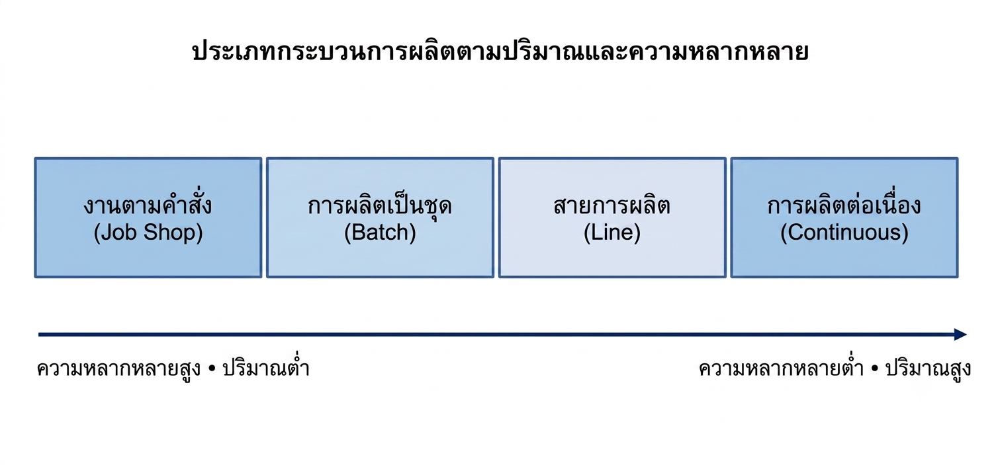
- งานตามคำสั่ง (Job Shop) ผลิตสินค้าหลากหลายในปริมาณน้อยตามความ ต้องการเฉพาะของลูกค้า ใช้เครื่องจักรอเนกประสงค์และแรงงานทักษะสูง เช่น โรงกลึง ร้านตัดเย็บเสื้อผ้าสั่งตัด
- การผลิตเป็นชุด (Batch) ผลิตสินค้าเป็นล็อตในปริมาณปานกลาง มีความ หลากหลายระดับกลาง เช่น โรงงานเบเกอรี โรงงานเฟอร์นิเจอร์
- สายการผลิต (Line/Repetitive) ผลิตสินค้ามาตรฐานในปริมาณมากผ่านสายการประกอบ เช่น การประกอบรถยนต์และเครื่องใช้ไฟฟ้า
- การผลิตต่อเนื่อง (Continuous) ผลิตสินค้ามาตรฐานสูงในปริมาณมหาศาลตลอดเวลา เช่น โรงกลั่นน้ำมัน โรงงานน้ำตาล โรงไฟฟ้า
| ลักษณะ | Job Shop | Batch | Line | Continuous |
|---|---|---|---|---|
| ปริมาณการผลิต | ต่ำมาก | ปานกลาง | สูง | สูงมาก |
| ความหลากหลาย | สูงมาก | ปานกลาง | ต่ำ | ต่ำมาก |
| ความยืดหยุ่น | สูงมาก | ปานกลาง | ต่ำ | ต่ำมาก |
| ต้นทุนต่อหน่วย | สูง | ปานกลาง | ต่ำ | ต่ำมาก |
| เงินลงทุนคงที่ | ต่ำ | ปานกลาง | สูง | สูงมาก |
📎 กรณีศึกษา
3.3 เมทริกซ์ผลิตภัณฑ์–กระบวนการ
Hayes และ Wheelwright (1979) เสนอเมทริกซ์ผลิตภัณฑ์–กระบวนการ (Product–Process Matrix) เป็นเครื่องมือเชื่อมโยงวงจรชีวิตของผลิตภัณฑ์กับประเภทของกระบวนการ โดยแกนนอนแสดงโครงสร้างผลิตภัณฑ์ (จากปริมาณต่ำ-หลากหลาย ไปสู่ปริมาณสูง-มาตรฐาน) และแกนตั้งแสดงโครงสร้างกระบวนการ (จากการไหลกระจัดกระจายไปสู่การไหลต่อเนื่อง) ดังภาพที่ 3.2
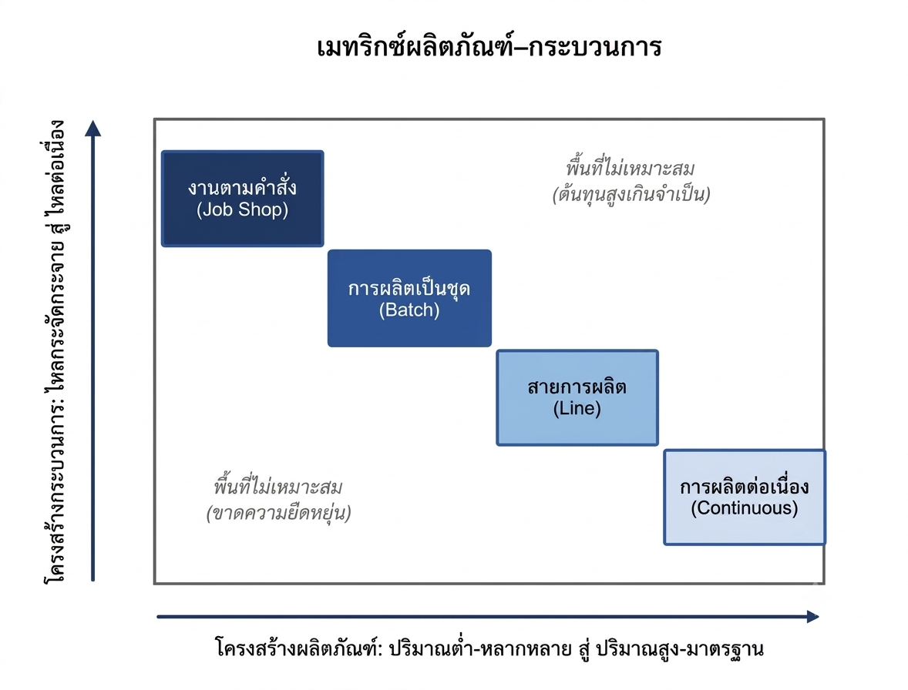
องค์กรที่มีความสอดคล้องเชิงกลยุทธ์มักวางตำแหน่งอยู่บนแนวทแยงมุมของเมทริกซ์ ซึ่งหมายถึงการจับคู่ผลิตภัณฑ์กับกระบวนการที่เหมาะสม การวางตำแหน่งนอกแนวทแยงมุมสะท้อนความไม่สอดคล้อง เช่น การใช้สายการผลิตต่อเนื่องกับผลิตภัณฑ์ที่หลากหลายมากจะทำให้ขาดความยืดหยุ่น หรือการใช้กระบวนการแบบงานตามคำสั่งกับผลิตภัณฑ์มาตรฐานปริมาณมากจะทำให้ต้นทุนต่อหน่วยสูงเกินจำเป็น
เมทริกซ์ผลิตภัณฑ์-กระบวนการที่กล่าวถึงในหัวข้อ 3.3 มีต้นกำเนิดจากบทความคลาสสิกของ Hayes และ Wheelwright ที่ตีพิมพ์ในวารสาร Harvard Business Review ปี ค.ศ. 1979 ซึ่งเสนอแนวคิดว่าองค์กรควรจัดวางตำแหน่งของตนตามแนวทแยงของเมทริกซ์ระหว่างวงจรชีวิตผลิตภัณฑ์และวงจรชีวิตกระบวนการ แนวคิดนี้ยังคงเป็นกรอบอ้างอิงหลักในการวิเคราะห์กลยุทธ์กระบวนการผลิตมาจนถึงปัจจุบัน แม้จะมีการเสนอกรอบแนวคิดเสริมสำหรับบริบทอุตสาหกรรม 5.0 ในระยะหลัง (Hayes & Wheelwright, 1979)
ความสมเหตุสมผลของเมทริกซ์นี้ได้รับการทดสอบเชิงประจักษ์อย่างกว้างขวาง Safizadeh, Ritzman, Sharma และ Wood (1996) วิเคราะห์ข้อมูลจากโรงงานในสหรัฐอเมริกา 144 แห่ง พบความสัมพันธ์ที่ชัดเจนระหว่างการเลือกกระบวนการ ระดับการปรับผลิตภัณฑ์ตามคำสั่งลูกค้า และมิติการแข่งขันที่องค์กรให้น้ำหนัก ซึ่งสอดคล้องกับสมมติฐานแนวทแยงของเมทริกซ์ ต่อมา Ahmad และ Schroeder (2002) เสนอการปรับปรุงเมทริกซ์ให้ละเอียดขึ้นโดยผนวกมิติด้านการบริหารทรัพยากรมนุษย์ ขณะที่ Ariss และ Zhang (2002) พบว่าความสามารถของกระบวนการที่ยืดหยุ่นช่วยให้องค์กรดำเนินงานนอกแนวทแยงได้อย่างมีประสิทธิผลมากขึ้น ข้อค้นพบเหล่านี้ชี้ว่าเมทริกซ์ควรใช้เป็นกรอบวิเคราะห์เบื้องต้น ควบคู่กับการพิจารณาเทคโนโลยีการผลิตสมัยใหม่ที่ช่วยผ่อนคลายข้อจำกัดแบบดั้งเดิม
3.4 ปัจจัยในการเลือกกระบวนการผลิต
การตัดสินใจเลือกกระบวนการผลิตต้องพิจารณาปัจจัยหลายด้านประกอบกัน ได้แก่
- ปริมาณและความหลากหลาย ปัจจัยพื้นฐานที่กำหนดประเภทกระบวนการตามที่กล่าวข้างต้น
- ความยืดหยุ่นที่ต้องการ หากความต้องการเปลี่ยนแปลงบ่อย ควรเลือกกระบวนการที่ยืดหยุ่นสูง
- เงินลงทุนและต้นทุน เปรียบเทียบต้นทุนคงที่และต้นทุนผันแปรของแต่ละทางเลือกด้วยการวิเคราะห์จุดคุ้มทุน
- กลยุทธ์การดำเนินงาน กระบวนการต้องสนับสนุนมิติการแข่งขันที่องค์กรเลือก (เชื่อมโยงกับบทที่ 2)
- คุณภาพและเทคโนโลยี ความสามารถของกระบวนการในการรักษาคุณภาพและรองรับเทคโนโลยีในอนาคต
3.5 การวิเคราะห์จุดคุ้มทุนเพื่อเลือกกระบวนการ
การวิเคราะห์จุดคุ้มทุน (Break-Even Analysis) เป็นเครื่องมือเชิงปริมาณที่ใช้เปรียบเทียบทางเลือกของกระบวนการที่มีโครงสร้างต้นทุนต่างกัน โดยอาศัยความสัมพันธ์ของต้นทุนรวม (Total Cost) ที่ประกอบด้วยต้นทุนคงที่ (Fixed Cost) และต้นทุนผันแปร (Variable Cost) ดังสมการ
3.5.1 จุดคุ้มทุนของกระบวนการเดียว
จุดคุ้มทุนคือปริมาณการผลิตที่ทำให้รายได้รวมเท่ากับต้นทุนรวม คำนวณได้จากสมการ เมื่อ P คือราคาขายต่อหน่วย
3.5.2 จุดคุ้มทุนเปรียบเทียบระหว่างกระบวนการ
เมื่อต้องเลือกระหว่างกระบวนการสองทางที่มีโครงสร้างต้นทุนต่างกัน สามารถหาจุดคุ้มทุนเปรียบเทียบ (Crossover Point) ซึ่งเป็นปริมาณที่ต้นทุนรวมของทั้งสองกระบวนการเท่ากัน ดังภาพที่ 3.3
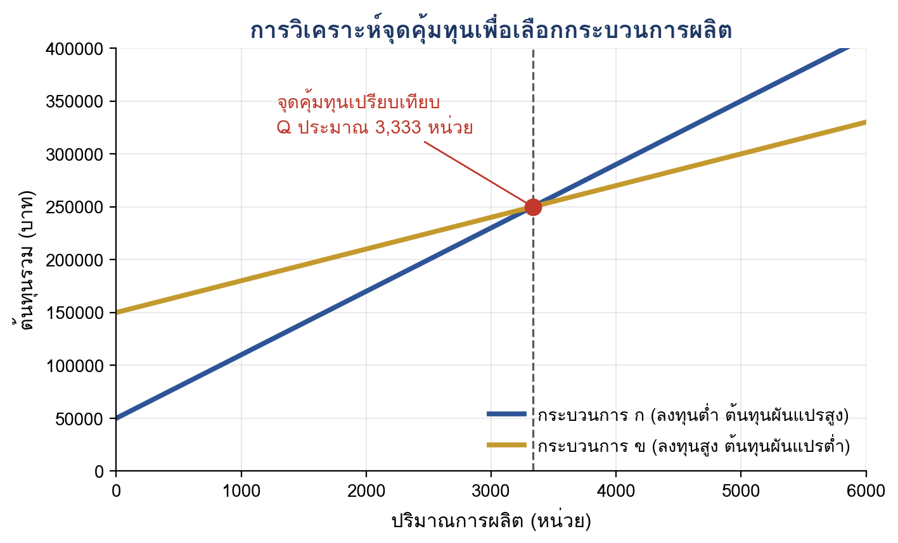
3.5.3 การวิเคราะห์ช่วงเมื่อมีสามทางเลือก
กรณีมีทางเลือกมากกว่าสองทาง สามารถหาจุดคุ้มทุนเปรียบเทียบระหว่างคู่ที่อยู่ติดกัน เพื่อกำหนดช่วงปริมาณที่แต่ละทางเลือกมีต้นทุนต่ำที่สุด
3.5.4 การวิเคราะห์จุดคุ้มทุนเพื่อกำหนดเป้าหมายกำไร
นอกจากการหาปริมาณที่ทำให้รายได้เท่ากับต้นทุนรวม (กำไรเท่ากับศูนย์) ผู้บริหารมักต้องการทราบปริมาณการผลิตและจำหน่ายที่ทำให้ได้กำไรตามเป้าหมายที่กำหนด ซึ่งขยายจากสมการจุดคุ้มทุนพื้นฐานโดยรวมกำไรที่ต้องการเข้าไปในตัวตั้ง ตามสมการ
ปริมาณเพื่อเป้าหมายกำไร
3.6 แนวโน้มเทคโนโลยีกระบวนการผลิตสมัยใหม่
เทคโนโลยีการผลิตได้พัฒนาอย่างต่อเนื่องเพื่อเพิ่มทั้งผลิตภาพและความยืดหยุ่นไปพร้อมกัน ลดข้อจำกัดของการแลกได้แลกเสียแบบดั้งเดิม พัฒนาการสำคัญแสดงดังภาพที่ 3.4
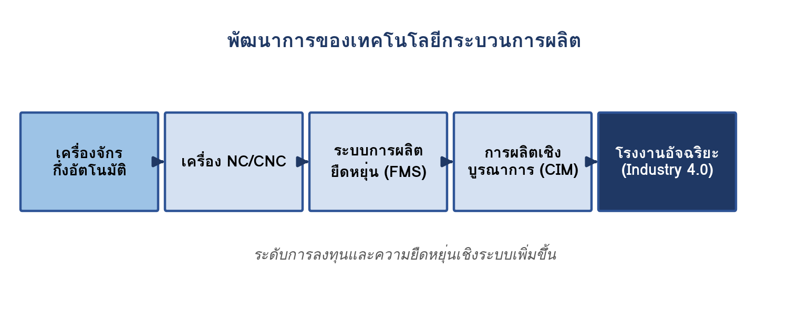
เทคโนโลยีเครื่องจักรควบคุมเชิงตัวเลข (NC/CNC) ช่วยเพิ่มความแม่นยำ ระบบการผลิตแบบยืดหยุ่น (FMS) ผสานความยืดหยุ่นเข้ากับการผลิตปริมาณมาก การผลิตเชิงบูรณาการด้วยคอมพิวเตอร์ (CIM) เชื่อมโยงทุกขั้นตอนผ่านระบบสารสนเทศ และในยุคอุตสาหกรรม 4.0 โรงงานอัจฉริยะอาศัยอินเทอร์เน็ตของสรรพสิ่ง (IoT) ข้อมูลขนาดใหญ่ และปัญญาประดิษฐ์ในการตัดสินใจแบบเรียลไทม์ เทคโนโลยีเหล่านี้เปิดโอกาสสู่การผลิตแบบปรับตามความต้องการเฉพาะบุคคลในปริมาณมาก (Mass Customization) ซึ่งเป็นแนวโน้มสำคัญของการผลิตในปัจจุบัน
งานวิจัยร่วมสมัยยืนยันทิศทางดังกล่าว Frank, Dalenogare และ Ayala (2019) ศึกษารูปแบบการนำเทคโนโลยีอุตสาหกรรม 4.0 ไปใช้ในบริษัทผู้ผลิต 92 แห่ง พบว่าการยอมรับเทคโนโลยีเป็นไปอย่างมีลำดับขั้น โดยเทคโนโลยีฐาน ได้แก่ อินเทอร์เน็ตของสรรพสิ่ง คลาวด์ และการวิเคราะห์ข้อมูลขนาดใหญ่ เป็นเงื่อนไขเบื้องต้นก่อนการประยุกต์เทคโนโลยีการผลิตอัจฉริยะขั้นสูง สอดคล้องกับการทบทวนวรรณกรรมอย่างเป็นระบบของ Zheng, Ardolino, Bacchetti และ Perona (2021) ที่ชี้ว่าการประยุกต์เทคโนโลยีอุตสาหกรรม 4.0 ในบริบทการผลิตยังกระจุกตัวในองค์กรขนาดใหญ่ ดังนั้นวิสาหกิจขนาดกลางและขนาดเล็ก รวมถึงวิสาหกิจชุมชนในภูมิภาค จึงควรยกระดับเทคโนโลยีแบบเป็นขั้นตอนตามความพร้อมของทรัพยากรและทักษะบุคลากร
กรณีศึกษา
📎 กรณีศึกษา
บทสรุป
การออกแบบกระบวนการผลิตถูกกำหนดโดยความสัมพันธ์ระหว่างปริมาณและความหลากหลายของผลิตภัณฑ์เป็นหลัก ซึ่งนำไปสู่กระบวนการสี่ประเภท ได้แก่ งานตามคำสั่ง การผลิตเป็นชุด สายการผลิต และการผลิตต่อเนื่อง โดยแต่ละประเภทมีลักษณะด้านความยืดหยุ่น ต้นทุนต่อหน่วย และเงินลงทุนที่แตกต่างกัน เมทริกซ์ผลิตภัณฑ์–กระบวนการเป็นเครื่องมือที่ช่วยให้องค์กรจับคู่ผลิตภัณฑ์กับกระบวนการได้อย่างสอดคล้องตามแนวทแยงมุม
การตัดสินใจเลือกกระบวนการต้องพิจารณาทั้งปริมาณ ความยืดหยุ่น เงินลงทุน ต้นทุน และความสอดคล้องกับกลยุทธ์ โดยการวิเคราะห์จุดคุ้มทุนและจุดคุ้มทุนเปรียบเทียบเป็นเครื่องมือเชิงปริมาณที่ช่วยกำหนดช่วงปริมาณที่แต่ละทางเลือกมีความเหมาะสม ทั้งนี้ เทคโนโลยีการผลิตสมัยใหม่ตั้งแต่ CNC, FMS, CIM จนถึงโรงงานอัจฉริยะในยุคอุตสาหกรรม 4.0 ช่วยให้องค์กรสามารถผสานผลิตภาพเข้ากับความยืดหยุ่น และก้าวสู่การผลิตแบบปรับตามความต้องการเฉพาะบุคคลในปริมาณมากได้
คำถามทบทวนและแบบฝึกหัด
ก. คำถามทบทวน
- จงอธิบายความสัมพันธ์ระหว่างปริมาณและความหลากหลายกับการเลือกประเภทกระบวนการผลิต
- กระบวนการผลิตทั้งสี่ประเภทแตกต่างกันอย่างไรในด้านความยืดหยุ่นและต้นทุนต่อหน่วย
- เหตุใดองค์กรจึงควรวางตำแหน่งบนแนวทแยงมุมของเมทริกซ์ผลิตภัณฑ์–กระบวนการ
- ปัจจัยใดบ้างที่ต้องพิจารณาในการเลือกกระบวนการผลิต นอกเหนือจากต้นทุน
- เทคโนโลยีการผลิตสมัยใหม่ช่วยลดข้อจำกัดของการแลกได้แลกเสียระหว่างผลิตภาพกับความยืดหยุ่นอย่างไร
ข. แบบฝึกหัดเชิงคำนวณ
- กระบวนการหนึ่งมีต้นทุนคงที่ 240,000 บาท ต้นทุนผันแปร 60 บาท/หน่วย ราคาขาย 140 บาท/หน่วย จงคำนวณจุดคุ้มทุนทั้งในรูปจำนวนหน่วยและยอดขาย
- เลือกระหว่างกระบวนการ A (FC = 80,000, V = 45) กับกระบวนการ B (FC = 200,000, V = 25) จงหาจุดคุ้มทุนเปรียบเทียบและระบุช่วงการเลือกแต่ละทางเลือก
- ทางเลือกสามแบบ: แบบมือ (FC = 30,000, V = 40), แบบกึ่งอัตโนมัติ (FC = 90,000, V = 25), แบบอัตโนมัติ (FC = 210,000, V = 13) จงกำหนดช่วงปริมาณที่เหมาะสมของแต่ละทางเลือก
เอกสารอ้างอิงประจำบท
Ahmad, S., & Schroeder, R. G. (2002). Refining the product-process matrix. International Journal of Operations & Production Management, 22(1), 103-124.
Ariss, S. S., & Zhang, Q. (2002). The impact of flexible process capability on the product-process matrix: An empirical examination. International Journal of Production Economics, 76(2), 135-145.
Frank, A. G., Dalenogare, L. S., & Ayala, N. F. (2019). Industry 4.0 technologies: Implementation patterns in manufacturing companies. International Journal of Production Economics, 210, 15-26.
Hayes, R. H., & Wheelwright, S. C. (1979). Link manufacturing process and product life cycles. Harvard Business Review, 57(1), 133-140.
Heizer, J., Render, B., & Munson, C. (2020). Operations management: Sustainability and supply chain management (13th ed.). Pearson.
Jacobs, F. R., & Chase, R. B. (2021). Operations and supply chain management (16th ed.). McGraw-Hill Education.
Krajewski, L. J., Malhotra, M. K., & Ritzman, L. P. (2022). Operations management: Processes and supply chains (13th ed.). Pearson.
Safizadeh, M. H., Ritzman, L. P., Sharma, D., & Wood, C. (1996). An empirical analysis of the product-process matrix. Management Science, 42(11), 1576-1591.
Slack, N., Brandon-Jones, A., & Burgess, N. (2022). Operations management (10th ed.). Pearson.
Stevenson, W. J. (2021). Operations management (14th ed.). McGraw-Hill Education.
Zheng, T., Ardolino, M., Bacchetti, A., & Perona, M. (2021). The applications of Industry 4.0 technologies in manufacturing context: A systematic literature review. International Journal of Production Research, 59(6), 1922-1954.
การออกแบบและการวางผังสถานประกอบการ
🎯 วัตถุประสงค์การเรียนรู้ประจำบท
เมื่อศึกษาบทนี้จบแล้ว ผู้เรียนสามารถ
- อธิบายวัตถุประสงค์และหลักการของการวางผังสถานประกอบการได้
- จำแนกและเลือกประเภทของผังให้เหมาะสมกับกระบวนการได้
- คำนวณรอบเวลา จำนวนสถานีงาน และประสิทธิภาพในการจัดสมดุลสายการผลิตได้
- อธิบายขั้นตอนของเทคนิคการวางผังอย่างเป็นระบบได้
- วิเคราะห์ระยะทาง–ปริมาณการเคลื่อนย้ายเพื่อประเมินผังได้
ภายหลังจากเลือกประเภทกระบวนการผลิตที่เหมาะสมแล้ว (บทที่ 3) ขั้นตอนสำคัญถัดมาคือการจัดวางสิ่งอำนวยความสะดวก เครื่องจักร และพื้นที่ทำงานให้เกิดการไหลของงานที่มีประสิทธิภาพ การวางผังสถานประกอบการ (Facility Layout) ที่ดีช่วยลดระยะทางการเคลื่อนย้าย ลดเวลารอคอย เพิ่มความปลอดภัย และเพิ่มผลิตภาพโดยรวม บทนี้นำเสนอประเภทของผัง การจัดสมดุลสายการผลิตเชิงปริมาณ เทคนิคการวางผังอย่างเป็นระบบ และการวิเคราะห์ระยะทาง–ปริมาณการเคลื่อนย้าย
4.1 วัตถุประสงค์และหลักการของการวางผัง
การวางผังสถานประกอบการมีวัตถุประสงค์เพื่อจัดวางทรัพยากรการผลิตให้เกิดการไหลของวัสดุ คน และสารสนเทศอย่างราบรื่น โดยมีเป้าหมายหลัก ได้แก่ การลดต้นทุนการเคลื่อนย้ายวัสดุ การใช้พื้นที่และกำลังการผลิตอย่างคุ้มค่า การลดเวลานำในการผลิต การสร้างความปลอดภัยและสภาพแวดล้อมการทำงานที่ดี ตลอดจนความยืดหยุ่นต่อการเปลี่ยนแปลงในอนาคต หลักการสำคัญของการวางผังที่ดีคือการจัดวางหน่วยงานที่มีความสัมพันธ์กันสูงให้อยู่ใกล้กัน เพื่อลดระยะทางและต้นทุนการเคลื่อนย้ายโดยรวม
4.2 ประเภทของผังสถานประกอบการ
ผังสถานประกอบการสามารถจำแนกได้เป็นสี่ประเภทหลักตามลักษณะการไหลของงานและประเภทกระบวนการ ดังภาพที่ 4.1
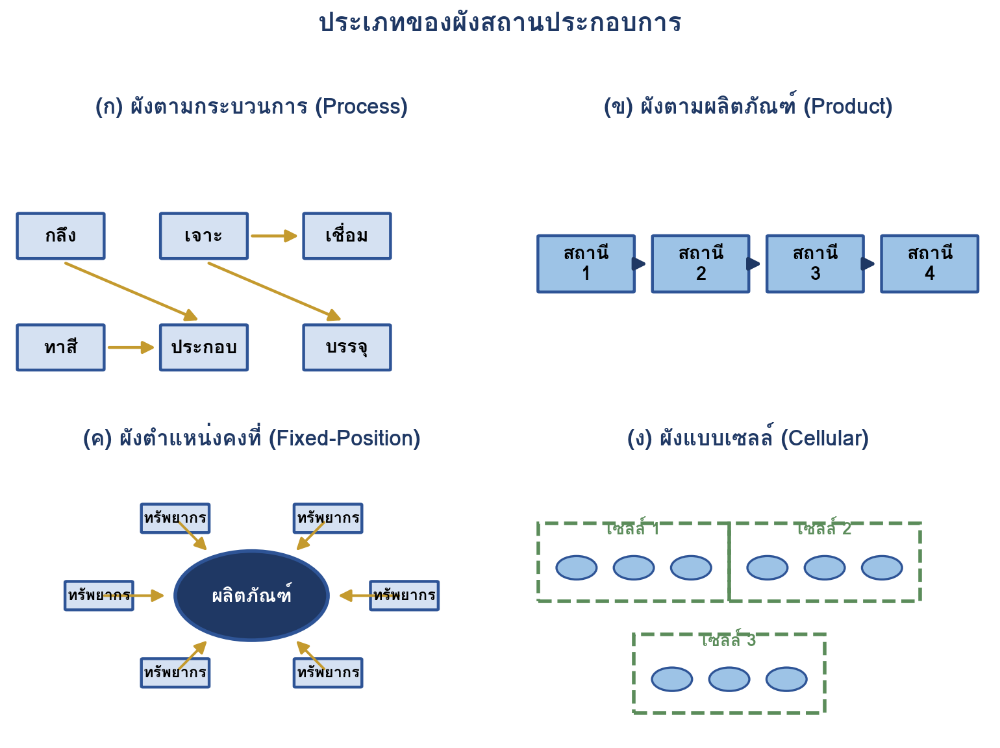
- ผังตามกระบวนการ (Process Layout) จัดกลุ่มเครื่องจักรหรือหน่วยงานที่ทำหน้าที่คล้ายกันไว้ด้วยกัน เหมาะกับกระบวนการแบบงานตามคำสั่งและการผลิตเป็นชุดที่มีความหลากหลายสูง
- ผังตามผลิตภัณฑ์ (Product Layout) จัดเรียงทรัพยากรตามลำดับขั้นตอนการผลิตเป็นสายการผลิต เหมาะกับการผลิตสินค้ามาตรฐานปริมาณมาก
- ผังตำแหน่งคงที่ (Fixed-Position Layout) ผลิตภัณฑ์อยู่กับที่ ทรัพยากรเคลื่อนเข้าหาผลิตภัณฑ์ เหมาะกับผลิตภัณฑ์ขนาดใหญ่ เช่น การต่อเรือ การก่อสร้าง
- ผังแบบเซลล์ (Cellular Layout) จัดกลุ่มเครื่องจักรเป็นเซลล์เพื่อผลิตชิ้นงานในตระกูลเดียวกัน ผสานข้อดีด้านความยืดหยุ่นกับประสิทธิภาพ
📎 กรณีศึกษา
4.3 การจัดสมดุลสายการผลิต
การจัดสมดุลสายการผลิต (Line Balancing) คือ การกระจายงานให้แก่สถานีงานตามลำดับให้แต่ละสถานีมีภาระงานใกล้เคียงกันและไม่เกินรอบเวลาที่กำหนด เพื่อให้สายการผลิตไหลอย่างราบรื่นและใช้ทรัพยากรอย่างมีประสิทธิภาพ สมการสำคัญที่ใช้มีดังนี้
ส่วนความสูญเสียจากการจัดสมดุล (Balance Delay) คือ ส่วนที่เหลือจากร้อยละ 100 ของประสิทธิภาพ ซึ่งสะท้อนเวลาว่างงานรวมในสายการผลิต
4.3.1 ตัวอย่างการจัดสมดุลสายการผลิต
4.3.2 การจัดสมดุลสายการผลิตด้วยกฎผู้สมัครลำดับสูงสุด (Largest Candidate Rule)
เมื่อสายการผลิตมีจำนวนงานย่อยมาก การจัดสถานีงานด้วยการพิจารณาด้วยตาอย่างที่แสดงในตัวอย่างที่ 4.1 อาจทำได้ยากและขาดความเป็นระบบ กฎผู้สมัครลำดับสูงสุด (Largest Candidate Rule: LCR) เป็นขั้นตอนวิธีเชิงระบบที่ช่วยแก้ปัญหานี้ โดยดำเนินการดังนี้ (1) เรียงงานทั้งหมดตามเวลาปฏิบัติงานจากมากไปน้อย (2) เปิดสถานีงานใหม่ (3) ไล่พิจารณางานตามลำดับที่เรียงไว้ หากงานนั้นยังไม่ได้ถูกกำหนดลำดับก่อนหลังค้างอยู่ (งานก่อนหน้าถูกจัดสรรแล้ว) และเวลาที่เหลือของสถานีเพียงพอ ให้จัดงานนั้นเข้าสถานี (4) ทำซ้ำขั้นที่ 3 จนไม่มีงานใดจัดเข้าสถานีปัจจุบันได้อีก จึงเปิดสถานีใหม่ และทำซ้ำจนกระทั่งจัดงานครบทุกงาน
วิธีทำ รอบเวลา CT = 440 ÷ 800 = 0.55 นาทีต่อหน่วย ผลรวมเวลางาน = 0.15+0.20+0.10+0.25+0.15+0.10+0.10+0.15 = 1.20 นาที จำนวนสถานีต่ำสุดเชิงทฤษฎี N = 1.20 ÷ 0.55 = 2.18 → ปัดขึ้นเป็น 3 สถานี เรียงงานตามเวลาจากมากไปน้อยแล้วไล่จัดตามกฎผู้สมัครลำดับสูงสุด (คำนึงถึงลำดับก่อนหลัง) ได้ผลดังนี้ สถานี 1: A + B = 0.35 นาที สถานี 2: C + D + E = 0.50 นาที สถานี 3: F + G + H = 0.35 นาที
ประสิทธิภาพ = 1.20 ÷ (3 × 0.55) × 100 = 72.73% ตอบ ใช้ 3 สถานีงาน ประสิทธิภาพเท่ากับ 72.73% ซึ่งต่ำกว่าตัวอย่างที่ 4.1 (79.17%) เนื่องจากงานย่อยที่มากขึ้นทำให้จัดสรรภาระงานให้สมดุลกันระหว่างสถานีได้ยากขึ้น สะท้อนว่ายิ่งจำนวนงานย่อยมาก การใช้ขั้นตอนวิธีเชิงระบบอย่างกฎผู้สมัครลำดับสูงสุดยิ่งมีความจำเป็น เพราะการพิจารณาด้วยตาเปล่าจะทำได้ยากขึ้นตามไปด้วย
งานวิจัยด้านการจัดสมดุลสายการผลิตยังคงมีการพัฒนาขั้นตอนวิธีขั้นสูงอย่างต่อเนื่อง เช่น ขั้นตอนวิธีเชิงพันธุกรรมและการหาค่าเหมาะที่สุดแบบฝูงอนุภาค อย่างไรก็ตาม การสำรวจงานวิจัยล่าสุดชี้ว่าสถานประกอบการจริงส่วนใหญ่ยังคงเลือกใช้กฎการจัดสรรงานแบบง่าย เช่น กฎผู้สมัครลำดับสูงสุดที่แสดงในตัวอย่างที่ 4.3 มากกว่าขั้นตอนวิธีขั้นสูง เนื่องจากความเข้าใจง่ายและนำไปปฏิบัติได้จริงในสายการผลิตขนาดกลางและขนาดเล็ก (Boysen et al., 2022)
4.3.3 การจัดสมดุลสายการผลิตด้วยเทคนิคน้ำหนักตำแหน่งจัดลำดับ (Ranked Positional Weight)
นอกจากกฎผู้สมัครลำดับสูงสุดแล้ว เทคนิคน้ำหนักตำแหน่งจัดลำดับของ Helgeson และ Birnie (1961) เป็นฮิวริสติกที่นิยมใช้อีกวิธีหนึ่ง โดยพิจารณาความสำคัญของงานจากตำแหน่งในโครงข่ายลำดับก่อนหลัง มิใช่จากเวลาของงานเพียงอย่างเดียว น้ำหนักตำแหน่งจัดลำดับของแต่ละงานคำนวณจาก
ขั้นตอนการจัดสมดุลมีสี่ขั้น ได้แก่ (1) คำนวณค่า RPW ของทุกงาน (2) เรียงงานตามค่า RPW จากมากไปน้อย หากเท่ากันให้เลือกงานที่มีเวลานานกว่าก่อน (3) จัดงานเข้าสถานีทีละงานตามลำดับ โดยงานที่จัดได้ต้องมีงานก่อนหน้าครบถ้วนและเวลาสะสมของสถานีไม่เกินรอบเวลา และ (4) เปิดสถานีใหม่เมื่อไม่มีงานใดจัดลงสถานีปัจจุบันได้ จุดเด่นของวิธีนี้คือให้ความสำคัญกับงานต้นทางของโครงข่ายซึ่งควบคุมการปลดปล่อยงานที่ตามหลังจำนวนมาก จึงมักให้ผลลัพธ์ที่ดีกว่าหรือเท่ากับวิธีที่พิจารณาเฉพาะเวลางาน
ในเชิงวรรณกรรม ปัญหาการจัดสมดุลสายการผลิตได้รับการนิยามเชิงคณิตศาสตร์เป็นครั้งแรกโดย Salveson (1955) และกฎผู้สมัครลำดับสูงสุดข้างต้นจัดเป็นฮิวริสติกยุคบุกเบิกเช่นเดียวกับเทคนิคน้ำหนักตำแหน่งจัดลำดับ (Ranked Positional Weight) ของ Helgeson และ Birnie (1961) เนื่องจากปัญหานี้จัดอยู่ในกลุ่ม NP-hard การสำรวจสถานะองค์ความรู้ของ Scholl และ Becker (2006) จึงชี้ว่าปัญหาขนาดใหญ่ต้องอาศัยวิธีฮิวริสติกและเมตาฮิวริสติก อาทิ ขั้นตอนวิธีเชิงพันธุกรรม ซึ่งสอดคล้องกับแนวทางการวิจัยของผู้เขียนด้านการหาค่าเหมาะที่สุดสำหรับปัญหาการจัดสมดุลสายการผลิตแบบผสมรุ่น
4.4 เทคนิคการวางผังอย่างเป็นระบบ
เทคนิคการวางผังอย่างเป็นระบบ (Systematic Layout Planning: SLP) ที่พัฒนาโดย Muther เป็นวิธีการเชิงโครงสร้างที่ใช้กันแพร่หลายในการออกแบบผัง โดยเริ่มจากการวิเคราะห์ข้อมูลพื้นฐานห้าประการ ได้แก่ ผลิตภัณฑ์ (P) ปริมาณ (Q) เส้นทางการผลิต (R) บริการสนับสนุน (S) และเวลา (T) จากนั้นจึงวิเคราะห์ความสัมพันธ์ระหว่างหน่วยงานผ่านแผนภูมิความสัมพันธ์ (Activity Relationship Chart) ซึ่งใช้รหัสระดับความใกล้ชิดดังตารางที่ 4.2
| รหัส | ระดับความจำเป็นในการอยู่ใกล้กัน |
|---|---|
| A | จำเป็นอย่างยิ่ง (Absolutely necessary) |
| E | สำคัญมาก (Especially important) |
| I | สำคัญ (Important) |
| O | ปกติ (Ordinary closeness) |
| U | ไม่สำคัญ (Unimportant) |
| X | ไม่พึงประสงค์ให้อยู่ใกล้กัน (Undesirable) |
ผลจากการวิเคราะห์ความสัมพันธ์จะถูกนำไปสร้างแผนภาพความสัมพันธ์เชิงพื้นที่ ปรับให้สอดคล้องกับข้อจำกัดด้านพื้นที่และงบประมาณ แล้วจึงประเมินทางเลือกของผังเพื่อเลือกผังที่เหมาะสมที่สุด
ทั้งนี้ การสำรวจวรรณกรรมของ Drira, Pierreval และ Hajri-Gabouj (2007) จัดกลุ่มปัญหาการวางผังตามลักษณะระบบการผลิต รูปแบบการไหล และสภาพแวดล้อมแบบสถิตหรือพลวัต พร้อมชี้ว่าแนวโน้มการวิจัยมุ่งสู่การวางผังแบบพลวัตที่ปรับเปลี่ยนตามความต้องการที่แปรผัน ข้อสังเกตนี้ยืนยันว่ากระบวนการ SLP ควรดำเนินซ้ำเป็นวงจรเมื่อบริบทการผลิตเปลี่ยนแปลง มิใช่กิจกรรมที่ทำเพียงครั้งเดียว
4.5 การวิเคราะห์ระยะทาง–ปริมาณการเคลื่อนย้าย
สำหรับผังตามกระบวนการ เป้าหมายหลักคือการลดต้นทุนการเคลื่อนย้ายวัสดุ ซึ่งวัดได้จากผลรวมของผลคูณระหว่างปริมาณการเคลื่อนย้าย (Load) กับระยะทาง (Distance) ระหว่างทุกคู่หน่วยงาน ผังที่มีค่าผลรวมระยะทาง–ปริมาณต่ำที่สุดถือว่าเหมาะสมที่สุด ตามสมการ
วิธีทำ (ต่อ) ตอบ ผังใหม่ A-C-B-D มีผลรวมระยะทาง-ปริมาณเท่ากับ 5,700 เมตร-เที่ยว ซึ่งสูงกว่าผังเดิม A-B-C-D (4,900 เมตร-เที่ยว) เพราะการสลับตำแหน่งทำให้คู่แผนก A-B ซึ่งมีปริมาณการเคลื่อนย้ายสูงที่สุด (100 หน่วย) ต้องอยู่ห่างกันมากขึ้น (จาก 10 เป็น 20 เมตร) แม้จะทำให้บางคู่ใกล้กันขึ้นก็ตาม จึงสรุปได้ว่าไม่ควรสลับตำแหน่ง และผังเดิม A-B-C-D ยังเป็นทางเลือกที่ดีกว่า ตัวอย่างนี้แสดงให้เห็นว่าการปรับปรุงผังต้องพิจารณาผลกระทบต่อคู่แผนกที่มีปริมาณสูงสุดเป็นอันดับแรก มิใช่พิจารณาทีละคู่แยกจากกัน
กรณีศึกษา
📎 กรณีศึกษา
บทสรุป
การวางผังสถานประกอบการมีเป้าหมายเพื่อจัดวางทรัพยากรให้เกิดการไหลของงานอย่างมีประสิทธิภาพ ลดต้นทุนการเคลื่อนย้าย และเพิ่มผลิตภาพ ผังแบ่งเป็นสี่ประเภทหลัก ได้แก่ ผังตามกระบวนการ ผังตามผลิตภัณฑ์ ผังตำแหน่งคงที่ และผังแบบเซลล์ โดยแต่ละประเภทเหมาะกับลักษณะกระบวนการและผลิตภัณฑ์ที่ต่างกัน
สำหรับผังตามผลิตภัณฑ์ การจัดสมดุลสายการผลิตเป็นเครื่องมือเชิงปริมาณที่ใช้กระจายงานให้แต่ละสถานีมีภาระใกล้เคียงกัน โดยอาศัยรอบเวลา จำนวนสถานีงานต่ำสุด และค่าประสิทธิภาพในการประเมิน ส่วนผังตามกระบวนการใช้การวิเคราะห์ระยะทาง–ปริมาณการเคลื่อนย้ายเพื่อเลือกผังที่มีต้นทุนการเคลื่อนย้ายต่ำที่สุด นอกจากนี้ เทคนิคการวางผังอย่างเป็นระบบ (SLP) ยังให้กรอบเชิงโครงสร้างที่ผสานทั้งข้อมูลเชิงปริมาณและความสัมพันธ์เชิงคุณภาพในการออกแบบผังอย่างรอบด้าน
การประยุกต์หลักการเหล่านี้ในบริบทวิสาหกิจชุมชนปรากฏให้เห็นในงานของ คลอเคลีย วจนะวิชากร (2563) ที่ใช้การศึกษาการทำงานและการปรับปรุงลำดับขั้นตอน การผลิตเพื่อลดความสูญเปล่าและเพิ่มประสิทธิภาพในกระบวนการผลิตไม้กวาดทาง
มะพร้าวของวิสาหกิจชุมชนในจังหวัดอุบลราชธานี เช่นเดียวกับงานของ คลอเคลีย วจนะวิชากร และคณะ (2558) ที่ประยุกต์หลักการจัดสมดุลสายการผลิต (Line Balancing) เพื่อกำหนดจำนวนแรงงานในแต่ละกระบวนการของการผลิตหวดนึ่งข้าว อัตโนมัติให้เหมาะสม ซึ่งสะท้อนว่าการจัดวางงานและการปรับสมดุลภาระงานระหว่าง ขั้นตอนต่าง ๆ ช่วยลดเวลาว่างงานและยกระดับผลิตภาพของแรงงานได้ แม้ในสถาน ประกอบการขนาดเล็ก
คำถามทบทวนและแบบฝึกหัด
ก. คำถามทบทวน
- จงอธิบายวัตถุประสงค์หลักของการวางผังสถานประกอบการ
- ผังทั้งสี่ประเภทเหมาะกับกระบวนการผลิตประเภทใด ยกตัวอย่างประกอบ
- รอบเวลาและจำนวนสถานีงานต่ำสุดเชิงทฤษฎีมีความสัมพันธ์กับความต้องการอย่างไร
- จงอธิบายขั้นตอนสำคัญของเทคนิคการวางผังอย่างเป็นระบบ (SLP)
ข. แบบฝึกหัดเชิงคำนวณ
- สายการผลิตมีงานย่อยรวมเวลา 2.4 นาที โรงงานทำงาน 480 นาที/วัน ต้องการผลิต 400 หน่วย/วัน จงคำนวณรอบเวลาและจำนวนสถานีงานต่ำสุดเชิงทฤษฎี
- หากจัดสมดุลได้จริง 4 สถานี โดยรอบเวลา 0.8 นาที และผลรวมเวลางาน 2.8 นาที จงคำนวณประสิทธิภาพและความสูญเสียจากการจัดสมดุล
- ผังหนึ่งมีคู่การเคลื่อนย้าย: A-B (ปริมาณ 120, ระยะ 10), A-C (ปริมาณ 60, ระยะ 20), B-C (ปริมาณ 90, ระยะ 10) จงคำนวณผลรวมระยะทาง–ปริมาณ
- สายการผลิตหนึ่งมีงาน 5 งาน เวลา 0.4, 0.6, 0.5, 0.3 และ 0.7 นาที โดยงานที่ 2 และ 3 ต่อจากงานที่ 1 งานที่ 4 ต่อจากงานที่ 2 และงานที่ 5 ต่อจากงานที่ 3 และ 4 หากรอบเวลาเท่ากับ 1.0 นาที จงคำนวณน้ำหนักตำแหน่งจัดลำดับ (RPW) ของทุกงาน จัดงานเข้าสถานี และคำนวณประสิทธิภาพของสายการผลิต
เอกสารอ้างอิงประจำบท
Boysen, N., Schulze, P., & Scholl, A. (2022). Assembly line balancing: What happened in the last fifteen years? European Journal of Operational Research, 301(3), 797-814.
Drira, A., Pierreval, H., & Hajri-Gabouj, S. (2007). Facility layout problems: A survey. Annual Reviews in Control, 31(2), 255-267.
Heizer, J., Render, B., & Munson, C. (2020). Operations management: Sustainability and supply chain management (13th ed.). Pearson.
Helgeson, W. B., & Birnie, D. P. (1961). Assembly line balancing using the ranked positional weight technique. Journal of Industrial Engineering, 12(6), 394-398.
Jacobs, F. R., & Chase, R. B. (2021). Operations and supply chain management (16th ed.). McGraw-Hill Education.
Krajewski, L. J., Malhotra, M. K., & Ritzman, L. P. (2022). Operations management: Processes and supply chains (13th ed.). Pearson.
Muther, R., & Hales, L. (2015). Systematic layout planning (4th ed.). Management & Industrial Research Publications.
Salveson, M. E. (1955). The assembly-line balancing problem. Journal of Industrial Engineering, 6(3), 18-25.
Scholl, A., & Becker, C. (2006). State-of-the-art exact and heuristic solution procedures for simple assembly line balancing. European Journal of Operational Research, 168(3), 666-693.
Stevenson, W. J. (2021). Operations management (14th ed.). McGraw-Hill Education.
Tompkins, J. A., White, J. A., Bozer, Y. A., & Tanchoco, J. M. A. (2010). Facilities planning (4th ed.). John Wiley & Sons.
คลอเคลีย วจนะวิชากร ปานจิต ศรีสวัสดิ์ และวรัญญู ทิพย์โพธิ์. (2558). การประยุกต์ใช้แผนผังสายธารคุณค่าในการเพิ่มประสิทธิภาพการจัดการโลจิสติกส์และโซ่อุปทานหวดนึ่งข้าวอัตโนมัติในจังหวัดอุบลราชธานี. วารสารวิชาการ วิศวกรรมศาสตร์ ม.อบ., 8(2), 1–13.
คลอเคลีย วจนะวิชากร. (2563). การลดความสูญเปล่าเพื่อเพิ่มประสิทธิภาพกระบวนการ ผลิตไม้กวาดทางมะพร้าว กรณีศึกษาวิสาหกิจชุมชนบ้านบุ่งหวาย จังหวัด อุบลราชธานี. วารสารวิชาการ วิศวกรรมศาสตร์ ม.อบ., 13(1), 141–152.
การออกแบบเครือข่ายโลจิสติกส์และการกระจายสินค้า
🎯 วัตถุประสงค์การเรียนรู้ประจำบท
เมื่อศึกษาบทนี้จบแล้ว ผู้เรียนสามารถ
- อธิบายองค์ประกอบของเครือข่ายโลจิสติกส์และการกระจายสินค้าได้
- เลือกทำเลที่ตั้งด้วยวิธีการให้คะแนนปัจจัยและวิธีจุดศูนย์ถ่วงได้
- แก้ปัญหาการขนส่งเพื่อหาแผนการจัดสรรที่มีต้นทุนต่ำได้
- อธิบายหลักการออกแบบจำนวนและที่ตั้งคลังสินค้าได้
- อธิบายรูปแบบช่องทางและกลยุทธ์การกระจายสินค้าได้
เครือข่ายโลจิสติกส์เป็นโครงสร้างที่กำหนดว่าสินค้าจะไหลจากแหล่งผลิตไปยังลูกค้าผ่านเส้นทางและสิ่งอำนวยความสะดวกใด การออกแบบเครือข่ายที่ดีส่งผลโดยตรงต่อต้นทุนรวมและระดับการบริการลูกค้า ซึ่งเป็นหัวใจของการแข่งขันด้านโลจิสติกส์และโซ่อุปทาน บทนี้นำเสนอองค์ประกอบของเครือข่าย วิธีการเลือกทำเลที่ตั้งเชิงปริมาณ การแก้ปัญหาการขนส่ง การออกแบบจำนวนคลังสินค้า และกลยุทธ์การกระจายสินค้า
5.1 องค์ประกอบของเครือข่ายโลจิสติกส์และการกระจายสินค้า
เครือข่ายโลจิสติกส์ประกอบด้วยโหนด (Node) ได้แก่ ผู้ส่งมอบ โรงงานผลิต ศูนย์กระจายสินค้า ร้านค้าปลีก และลูกค้า ซึ่งเชื่อมโยงกันด้วยเส้นทางการขนส่ง (Link) โดยมีการไหลสามประเภทที่สำคัญ คือ การไหลของวัสดุและสินค้าจากต้นน้ำสู่ปลายน้ำ การไหลของสารสนเทศ และการไหลของการเงินที่มักไหลในทิศทางตรงกันข้าม ดังภาพที่ 5.1
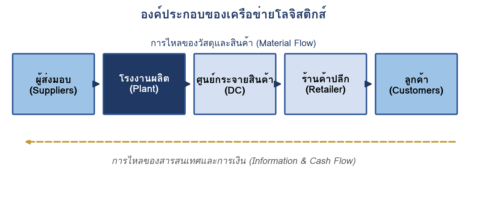
การตัดสินใจหลักในการออกแบบเครือข่าย ได้แก่ จำนวนและที่ตั้งของสิ่งอำนวยความสะดวก การจัดสรรความต้องการให้แต่ละแหล่ง และการเลือกช่องทางการกระจายสินค้า ซึ่งล้วนมุ่งสร้างสมดุลระหว่างต้นทุนรวมที่ต่ำกับระดับการบริการที่ตอบสนองลูกค้าได้ดี
5.2 การเลือกทำเลที่ตั้ง
การเลือกทำเลที่ตั้งเป็นการตัดสินใจระยะยาวที่ส่งผลต่อต้นทุนและการบริการอย่างต่อเนื่อง วิธีการเชิงปริมาณที่นิยมใช้มีสองวิธีหลัก ได้แก่ วิธีการให้คะแนนปัจจัยและวิธีจุดศูนย์ถ่วง
5.2.1 วิธีการให้คะแนนปัจจัย
วิธีการให้คะแนนปัจจัย (Factor Rating) เหมาะกับการเปรียบเทียบทำเลโดยพิจารณาทั้งปัจจัยเชิงปริมาณและคุณภาพ โดยกำหนดน้ำหนักความสำคัญของแต่ละปัจจัย ให้คะแนนแต่ละทำเล แล้วคำนวณคะแนนถ่วงน้ำหนักตามสมการ
5.2.2 วิธีจุดศูนย์ถ่วง
วิธีจุดศูนย์ถ่วง (Center of Gravity) ใช้หาตำแหน่งที่ตั้งของสิ่งอำนวยความ สะดวก เช่น คลังหรือศูนย์กระจายสินค้า ที่ทำให้ต้นทุนการขนส่งรวมต่ำที่สุด โดยถ่วงน้ำหนักตามปริมาณความต้องการของแต่ละจุด ตามสมการ
เมื่อ Cx, Cy คือพิกัดของจุดศูนย์ถ่วง xi, yi คือพิกัดของจุดความต้องการที่ i* *และ Wi คือปริมาณความต้องการ ณ จุดนั้น
ตอบ ทำเล ก มีคะแนนถ่วงน้ำหนักสูงกว่าเล็กน้อย (78.0 เทียบกับ 76.75) จึงเป็นทำเลที่เหมาะสมกว่า โดยจุดแข็งหลักของทำเล ก คือความใกล้แหล่งวัตถุดิบซึ่งมีน้ำหนักสูงสุด แม้ทำเล ข จะได้เปรียบด้านแรงงานและสาธารณูปโภคก็ตาม ผลต่างที่ค่อนข้างน้อย (1.25 คะแนน) ยังชี้ว่าผู้บริหารควรพิจารณาปัจจัยเชิงคุณภาพอื่นเพิ่มเติมก่อนตัดสินใจขั้นสุดท้าย
การตัดสินใจเลือกทำเลที่ตั้งได้รับความสนใจในงานวิจัยด้านโลจิสติกส์และโซ่อุปทานอย่างต่อเนื่อง งานทบทวนวรรณกรรมอย่างเป็นระบบชี้ว่าแบบจำลองการเลือกทำเลได้พัฒนาจากการพิจารณาต้นทุนและระยะทางเพียงอย่างเดียว ไปสู่การบูรณาการเกณฑ์ด้านความยั่งยืนและความเสี่ยงจากการหยุดชะงักของโซ่อุปทานเข้าไว้ด้วยกัน สะท้อนว่าวิธีการให้คะแนนปัจจัยและวิธีจุดศูนย์ถ่วงที่แสดงในตัวอย่างที่ 5.1 และ 5.2 เป็นจุดเริ่มต้นพื้นฐานที่สามารถขยายเพิ่มเกณฑ์ด้านสิ่งแวดล้อมและความเสี่ยงเข้าไปได้ในทางปฏิบัติ (Farahani et al., 2014)
รากฐานทางทฤษฎีของปัญหาทำเลที่ตั้งย้อนกลับไปถึงงานของ Hakimi (1964) ที่พิสูจน์คุณสมบัติของจุดมัธยฐานบนโครงข่าย อันเป็นพื้นฐานของแบบจำลอง p-median ที่ใช้แพร่หลายในปัจจุบัน ขณะที่การสำรวจของ Melo, Nickel และ Saldanha-da-Gama (2009) ชี้ว่างานวิจัยยุคหลังได้บูรณาการการตัดสินใจทำเลที่ตั้งเข้ากับการออกแบบโซ่อุปทานทั้งระบบ ทั้งด้านกำลังการผลิต สินค้าคงคลัง และการขนส่ง แทนการพิจารณาแบบแยกส่วน
5.3 ปัญหาการขนส่งและการจัดสรร
ปัญหาการขนส่ง (Transportation Problem) เป็นแบบจำลองที่ใช้หาแผนการจัดสรรการขนส่งสินค้าจากหลายแหล่งผลิตไปยังหลายจุดความต้องการ โดยมีเป้าหมายเพื่อลดต้นทุนการขนส่งรวมให้ต่ำที่สุด ภายใต้ข้อจำกัดด้านกำลังการผลิตและความต้องการ ตามฟังก์ชันวัตถุประสงค์
วิธีหาคำตอบเริ่มต้นที่นิยมคือวิธีต้นทุนต่ำสุด (Least-Cost Method) ซึ่งจัดสรรปริมาณให้เซลล์ที่มีต้นทุนต่อหน่วยต่ำที่สุดก่อนตามลำดับ พิจารณาตัวอย่างต่อไปนี้
5.3.1 การทดสอบความเหมาะสมที่สุดด้วยวิธี MODI
คำตอบเริ่มต้นที่ได้จากวิธีต้นทุนต่ำสุดหรือวิธีมุมซ้ายบนอาจยังไม่ใช่คำตอบที่ดีที่สุด จึงต้องทดสอบด้วยวิธี MODI (Modified Distribution Method) ซึ่งเป็นวิธีคำนวณดัชนีแถว uᵢ และดัชนีสดมภ์ vⱼ สำหรับเซลล์ที่มีการจัดสรร (เซลล์ฐาน) โดยกำหนดให้ดัชนีแถวแรกมีค่า เท่ากับศูนย์ (u₁ = 0) เป็นจุดเริ่มต้น แล้วไล่คำนวณดัชนีที่เหลือจากสมการของเซลล์ฐานแต่ละเซลล์
เมื่อได้ดัชนีครบทุกแถวและสดมภ์แล้ว จึงคำนวณต้นทุนส่วนเพิ่ม (Improvement Index) ของเซลล์ที่ยังไม่มีการจัดสรร (เซลล์ไม่ใช่ฐาน) ทุกเซลล์ ตามสมการ
หากค่า dᵢⱼ ของทุกเซลล์ไม่ใช่ฐานมีค่ามากกว่าหรือเท่ากับศูนย์ แสดงว่าคำตอบปัจจุบันเหมาะสมที่สุดแล้ว แต่หากพบเซลล์ที่มีค่า dᵢⱼ เป็นลบ แสดงว่ายังปรับปรุงได้ โดยเลือกเซลล์ที่มีค่าลบมากที่สุดเป็นเซลล์เข้า (Entering Cell) แล้วสร้างวงวนปิด (Closed Loop) ผ่านเซลล์ฐานที่เชื่อมต่อกัน กำหนดเครื่องหมาย + และ − สลับกันไปตามมุมของวงวน จากนั้นหาค่า θ เท่ากับปริมาณจัดสรรที่น้อยที่สุดในกลุ่มเซลล์ที่มีเครื่องหมายลบ แล้วปรับปริมาณจัดสรรของทุกเซลล์ในวงวนตามเครื่องหมาย บวก θ หรือลบ θ ทำซ้ำจนกระทั่งค่า dᵢⱼ ของทุกเซลล์ไม่เป็นลบอีก จึงได้คำตอบที่เหมาะสมที่สุด
พิจารณาตัวอย่างที่ 5.3 ที่ได้คำตอบเริ่มต้น คือ P1-D1 = 80, P1-D3 = 20, P2-D2 = 90 และ P2-D3 = 60 หน่วย ซึ่งมีจำนวนเซลล์ฐาน 4 เซลล์ เท่ากับ m + n − 1 = 2 + 3 − 1 = 4 (ไม่เกิดกรณีเสื่อมสภาพ) จึงสามารถคำนวณดัชนี uᵢ และ vⱼ ได้ครบถ้วน ดังตัวอย่างที่ 5.4
ในทางปฏิบัติ คำตอบเริ่มต้นอาจไม่ใช่คำตอบที่เหมาะสมที่สุดเสมอไป ตัวอย่างที่ 5.5 แสดงกรณีที่คำตอบเริ่มต้นยังปรับปรุงได้ และแสดงขั้นตอนการปรับปรุงด้วยวิธีก้าวกระโดด (Stepping-Stone) จนกระทั่งได้คำตอบที่เหมาะสมที่สุด
5.4 การออกแบบจำนวนและที่ตั้งคลังสินค้า
การกำหนดจำนวนคลังสินค้าหรือศูนย์กระจายสินค้าเป็นการแลกได้แลกเสียระหว่างต้นทุนสองกลุ่มหลัก เมื่อจำนวนคลังเพิ่มขึ้น ต้นทุนการขนส่งขาออกสู่ลูกค้าจะลดลงเพราะคลังอยู่ใกล้ลูกค้ามากขึ้น แต่ต้นทุนการดำเนินงานคลังและต้นทุนสินค้าคงคลังจะเพิ่มขึ้น จำนวนคลังที่เหมาะสมจึงเป็นจุดที่ต้นทุนรวมต่ำที่สุด ดังภาพที่ 5.3
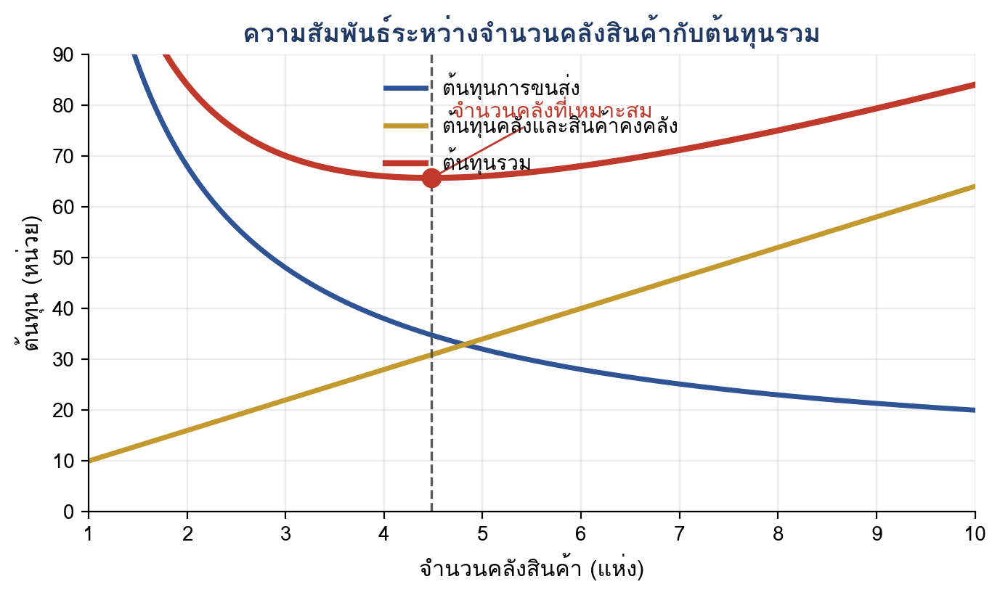
นอกจากต้นทุนแล้ว การออกแบบจำนวนและที่ตั้งคลังยังต้องพิจารณาระดับการบริการที่ต้องการ เช่น ระยะเวลาในการส่งมอบถึงลูกค้า ความหนาแน่นของความต้องการในแต่ละพื้นที่ และความเสี่ยงด้านการหยุดชะงักของโซ่อุปทาน
การหาจำนวนคลังสินค้าที่เหมาะสมสามารถประมาณได้เชิงปริมาณโดยเปรียบเทียบต้นทุนรวมที่จำนวนคลังต่าง ๆ กัน ต้นทุนรวมประกอบด้วยต้นทุนขนส่งขาออกซึ่งลดลงเมื่อจำนวนคลังเพิ่มขึ้น และต้นทุนสิ่งอำนวยความสะดวกรวมกับต้นทุนถือครองสินค้าคงคลังซึ่งเพิ่มขึ้นตามจำนวนคลัง ดังตัวอย่างที่ 5.6
วิธีทำ จากตารางที่ 5.5 ต้นทุนรวมต่ำที่สุดเกิดขึ้นเมื่อมีคลังสินค้า 2 หรือ 3 แห่ง (1,050 พันบาทต่อปี) ขณะที่จำนวนคลังมากขึ้นเป็น 4 แห่งกลับทำให้ต้นทุนรวมสูงขึ้น เนื่องจากต้นทุนคลังและสินค้าคงคลังเพิ่มขึ้นเร็วกว่าต้นทุนขนส่งที่ลดลง ตอบ บริษัทควรพิจารณาตั้งคลังสินค้า 2-3 แห่ง โดยเลือกจากปัจจัยเชิงคุณภาพเพิ่มเติม เช่น ระดับการบริการที่ต้องการและความเสี่ยงของการหยุดชะงักในแต่ละพื้นที่
5.4.1 ผลกระทบของจำนวนคลังสินค้าต่อระดับสินค้าคงคลังรวม: กฎรากที่สอง
เมื่อกระจายสินค้าคงคลังจากคลังสินค้ารวมศูนย์ 1 แห่งไปยังคลังสินค้าภูมิภาคหลายแห่ง สต็อกเพื่อความปลอดภัยโดยรวมของระบบมักเพิ่มขึ้น แม้ว่าแต่ละคลังจะอยู่ใกล้ลูกค้ามากขึ้นก็ตาม เนื่องจากความผันผวนของความต้องการในแต่ละพื้นที่ไม่สามารถหักกลบกันได้เหมือนเมื่อรวมอยู่ที่คลังเดียว ปรากฏการณ์นี้ประมาณค่าได้ด้วยกฎรากที่สอง (Square Root Law)
กฎรากที่สองข้างต้นมีที่มาจากงานของ Maister (1976) ซึ่งแสดงเงื่อนไขเชิงสถิติของการรวมศูนย์สินค้าคงคลังไว้อย่างเป็นระบบ ข้อพึงระวังคือกฎนี้ตั้งอยู่บนสมมติฐานว่าความต้องการของแต่ละคลังเป็นอิสระต่อกันและมีความแปรปรวนใกล้เคียงกัน หากความต้องการมีสหสัมพันธ์เชิงบวกสูง ประโยชน์จากการรวมศูนย์จะต่ำกว่าที่กฎพยากรณ์ไว้
5.5 ช่องทางและกลยุทธ์การกระจายสินค้า
ช่องทางการกระจายสินค้า (Distribution Channel) คือเส้นทางที่สินค้าเคลื่อนจากผู้ผลิตไปยังผู้บริโภค โดยอาจผ่านคนกลางจำนวนต่างกัน ตั้งแต่ช่องทางตรงที่ผู้ผลิตขายให้ผู้บริโภคโดยตรง ไปจนถึงช่องทางที่มีคนกลางหลายระดับ ดังภาพที่ 5.4
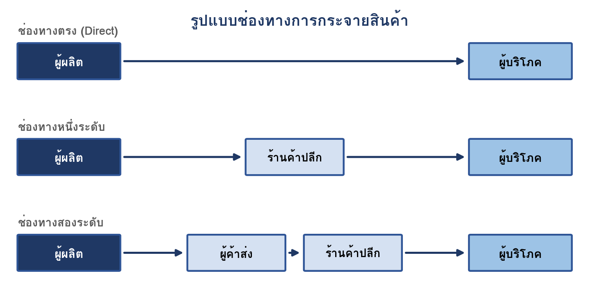
กลยุทธ์การกระจายสินค้าที่สำคัญมีสามรูปแบบ ได้แก่ การกระจายแบบเข้มข้น (Intensive) ที่กระจายผ่านร้านค้าให้มากที่สุดเพื่อความครอบคลุม การกระจายแบบเลือกสรร (Selective) ที่เลือกคนกลางบางราย และการกระจายแบบผูกขาด (Exclusive) ที่ให้สิทธิ์จำหน่ายแก่คนกลางรายเดียวในพื้นที่ การเลือกช่องทางและกลยุทธ์ต้องสอดคล้องกับลักษณะผลิตภัณฑ์ พฤติกรรมลูกค้า และกลยุทธ์การดำเนินงานขององค์กร
📎 กรณีศึกษา
กรณีศึกษา
📎 กรณีศึกษา
บทสรุป
เครือข่ายโลจิสติกส์ประกอบด้วยโหนดและเส้นทางที่เชื่อมโยงการไหลของวัสดุ สารสนเทศ และการเงินจากผู้ส่งมอบจนถึงลูกค้า การออกแบบเครือข่ายมุ่งสร้างสมดุลระหว่างต้นทุนรวมที่ต่ำกับระดับการบริการที่ดี การเลือกทำเลที่ตั้งสามารถใช้วิธีการให้คะแนนปัจจัยสำหรับการพิจารณาหลายปัจจัยทั้งเชิงปริมาณและคุณภาพ และวิธีจุดศูนย์ถ่วงสำหรับการหาตำแหน่งที่ลดต้นทุนการขนส่งรวม
ปัญหาการขนส่งเป็นแบบจำลองที่ช่วยจัดสรรการขนส่งจากหลายแหล่งไปหลายจุดความต้องการให้มีต้นทุนต่ำที่สุด โดยเริ่มจากคำตอบเริ่มต้นด้วยวิธีต้นทุนต่ำสุดและปรับปรุงสู่คำตอบที่เหมาะสมที่สุด ส่วนการออกแบบจำนวนคลังสินค้าเป็นการแลกได้แลกเสียระหว่างต้นทุนการขนส่งกับต้นทุนคลังและสินค้าคงคลัง ทั้งนี้ การเลือกช่องทางและกลยุทธ์การกระจายสินค้าต้องสอดคล้องกับลักษณะผลิตภัณฑ์และกลยุทธ์การดำเนินงานขององค์กร
ในบริบทของภาคตะวันออกเฉียงเหนือ การออกแบบระบบโลจิสติกส์สำหรับ สินค้าเกษตร ได้รับการศึกษาโดย คลอเคลีย วจนะวิชากร และปานจิต ศรีสวัสดิ์ (2557) ที่วิเคราะห์ระบบโลจิสติกส์ยางพาราและการพัฒนาคุณภาพยางแผ่นในอำเภอบุณฑริก จังหวัดอุบลราชธานี ซึ่งชี้ให้เห็นว่าการจัดการการไหลของวัตถุดิบและการเลือกตำแหน่ง รวบรวมผลผลิตมีผลต่อต้นทุนและคุณภาพของสินค้าเกษตรโดยตรง สอดคล้องกับงานของ วจนะวิชากร สมเนตร และศรีสุรินทร์ (2567) ที่ประยุกต์แบบจำลองอ้างอิงการดำเนินงาน ในโซ่อุปทาน (SCOR Model) วิเคราะห์ห่วงโซ่อุปทานวิสาหกิจชุมชนแปลงใหญ่พริก ตำบลหัวเรือ ครอบคลุมกระบวนการวางแผน จัดหา ผลิต ส่งมอบ และส่งคืน รวมถึงงานของ คลอเคลีย วจนะวิชากร และคณะ (2558) ที่ใช้แผนผังสายธารคุณค่า วิเคราะห์ โครงสร้างโซ่อุปทานหวดนึ่งข้าวอัตโนมัติตั้งแต่แหล่งวัตถุดิบจนถึงแหล่งจำหน่าย นอกจากนี้ เมื่อการเลือกทำเลที่ตั้งต้องพิจารณาหลายเกณฑ์พร้อมกัน รวมไปถึงกระบวนการลำดับชั้นเชิงวิเคราะห์ (AHP) เป็นเครื่องมือที่ช่วยจัดลำดับความ สำคัญ ของปัจจัยได้อย่างเป็นระบบ ดังที่ คลอเคลีย วจนะวิชากร และคณะ (2568) ประยุกต์ใช้ในการคัดเลือกพืชเศรษฐกิจที่เหมาะสมในภาคตะวันออกเฉียงเหนือของไทย
คำถามทบทวนและแบบฝึกหัด
ก. คำถามทบทวน
- จงอธิบายองค์ประกอบและการไหลสามประเภทในเครือข่ายโลจิสติกส์
- วิธีการให้คะแนนปัจจัยและวิธีจุดศูนย์ถ่วงต่างกันอย่างไร และเหมาะกับสถานการณ์ใด
- จงอธิบายเป้าหมายและข้อจำกัดของปัญหาการขนส่ง
- เหตุใดการเพิ่มจำนวนคลังสินค้าจึงลดต้นทุนการขนส่งแต่เพิ่มต้นทุนคลัง
- กลยุทธ์การกระจายสินค้าแบบเข้มข้น เลือกสรร และผูกขาด ต่างกันอย่างไร
ข. แบบฝึกหัดเชิงคำนวณ
- ทำเล ก มีคะแนน (จากปัจจัยน้ำหนัก 0.4, 0.35, 0.25) เท่ากับ 80, 70, 60 และทำเล ข เท่ากับ 70, 80, 90 จงคำนวณคะแนนถ่วงน้ำหนักและเลือกทำเล
- จุดความต้องการ 3 แห่ง: (10,20) W=400, (30,50) W=600, (50,10) W=500 จงหาพิกัดจุดศูนย์ถ่วง
- โรงงาน P1 (กำลังผลิต 120) และ P2 (กำลังผลิต 80) ส่งสินค้าไป D1 (ต้องการ 100) และ D2 (ต้องการ 100) ต้นทุนต่อหน่วย P1: D1=6, D2=8; P2: D1=5, D2=9 จงหาแผนการจัดสรรด้วยวิธีต้นทุนต่ำสุดและคำนวณต้นทุนรวม
เอกสารอ้างอิงประจำบท
Farahani, R. Z., Hekmatfar, M., Fahimnia, B., & Kazemzadeh, N. (2014). Hierarchical facility location problem: Models, classifications, techniques, and applications. Computers & Industrial Engineering, 68, 104-117.
Ballou, R. H. (2004). Business logistics/supply chain management (5th ed.). Pearson.
Bowersox, D. J., Closs, D. J., & Cooper, M. B. (2020). Supply chain logistics management (5th ed.). McGraw-Hill Education.
Chopra, S., & Meindl, P. (2019). Supply chain management: Strategy, planning, and operation (7th ed.). Pearson.
Hakimi, S. L. (1964). Optimum locations of switching centers and the absolute centers and medians of a graph. Operations Research, 12(3), 450-459.
Heizer, J., Render, B., & Munson, C. (2020). Operations management: Sustainability and supply chain management (13th ed.). Pearson.
Krajewski, L. J., Malhotra, M. K., & Ritzman, L. P. (2022). Operations management: Processes and supply chains (13th ed.). Pearson.
Maister, D. H. (1976). Centralisation of inventories and the "square root law". International Journal of Physical Distribution, 6(3), 124-134.
Melo, M. T., Nickel, S., & Saldanha-da-Gama, F. (2009). Facility location and supply chain management - A review. European Journal of Operational Research, 196(2), 401-412.
Stevenson, W. J. (2021). Operations management (14th ed.). McGraw-Hill Education.
Wajanawichakon, K., Srisurin, K., & Ongkunaruk, P. (2025). Multi-criteria decision analysis for sustainable crop selection in Northeast Thailand: An analytical hierarchy process approach. International Journal of Technology, 16(3), 780–795.
คลอเคลีย วจนะวิชากร และปานจิต ศรีสวัสดิ์ (2557). การศึกษาระบบโลจิสติกส์ยางพารา และการพัฒนาคุณภาพยางแผ่น: กรณีศึกษาอำเภอบุณฑริก จังหวัดอุบลราชธานี. วารสารวิศวกรรมศาสตร์ มหาวิทยาลัยอุบลราชธานี, 7(2), 1–13.
คลอเคลีย วจนะวิชากร ปานจิต ศรีสวัสดิ์ และวรัญญู ทิพย์โพธิ์ (2558). การประยุกต์ใช้แผนผังสายธารคุณค่าในการเพิ่มประสิทธิภาพการจัดการโลจิสติกส์และโซ่อุปทานหวดนึ่งข้าวอัตโนมัติในจังหวัดอุบลราชธานี. วารสารวิชาการ วิศวกรรมศาสตร์ ม.อบ., 8(2), 1–13.
คลอเคลีย วจนะวิชากร ขจิตา สมเนตร และกนกกาญจน์ ศรีสุรินทร์. (2567). การศึกษาห่วงโซ่อุปทานวิสาหกิจชุมชนแปลงใหญ่พริกตำบลหัวเรือ จังหวัดอุบลราชธานี. วารสารวิศวกรรมศาสตร์และนวัตกรรม, 17(1), 163–178.
การพยากรณ์ความต้องการและการวางแผนการผลิต
🎯 วัตถุประสงค์การเรียนรู้ประจำบท
เมื่อศึกษาบทนี้จบแล้ว ผู้เรียนสามารถ
- อธิบายบทบาทและองค์ประกอบของการพยากรณ์ในการวางแผนการผลิตได้
- คำนวณการพยากรณ์ด้วยค่าเฉลี่ยเคลื่อนที่ การปรับเรียบเอกซ์โพเนนเชียล และการถดถอยได้
- คำนวณและเปรียบเทียบความคลาดเคลื่อนของการพยากรณ์ด้วย MAD, MSE และ MAPEได้
- เปรียบเทียบกลยุทธ์การวางแผนการผลิตรวมแบบคงที่และแบบไล่ตามได้
- อธิบายความสัมพันธ์ระหว่างตารางการผลิตหลักกับการจัดตารางการผลิตได้
การพยากรณ์ความต้องการเป็นจุดเริ่มต้นของการวางแผนการดำเนินงานเกือบทุกด้าน ตั้งแต่การวางแผนกำลังการผลิต การจัดการสินค้าคงคลัง ไปจนถึงการจัดตารางการผลิต การพยากรณ์ที่แม่นยำช่วยลดทั้งต้นทุนจากการผลิตเกินและความเสียหายจากการขาดสินค้า บทนี้นำเสนอเทคนิคการพยากรณ์เชิงปริมาณที่สำคัญ การวัดความคลาดเคลื่อน ตลอดจนการแปลงผลพยากรณ์สู่แผนการผลิตรวมและตารางการผลิตหลัก
6.1 บทบาทของการพยากรณ์ในการวางแผนการผลิต
การพยากรณ์ (Forecasting) คือการประมาณค่าความต้องการในอนาคตโดยอาศัยข้อมูลในอดีตและปัจจัยที่เกี่ยวข้อง การพยากรณ์แบ่งได้เป็นเชิงคุณภาพซึ่งอาศัยดุลยพินิจของผู้เชี่ยวชาญ และเชิงปริมาณซึ่งอาศัยแบบจำลองทางคณิตศาสตร์ บทนี้เน้นการพยากรณ์เชิงปริมาณแบบอนุกรมเวลา (Time Series) ซึ่งวิเคราะห์รูปแบบข้อมูลในอดีตเพื่อพยากรณ์อนาคต อนุกรมเวลาประกอบด้วยองค์ประกอบสำคัญสี่ประการ ดังภาพที่ 6.1
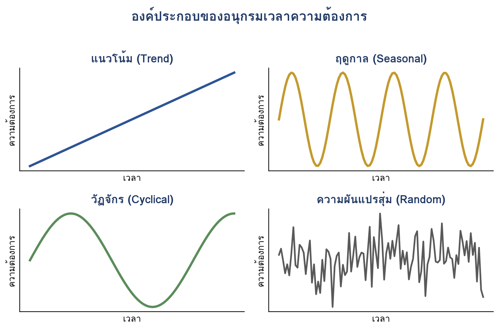
องค์ประกอบทั้งสี่ ได้แก่ แนวโน้ม (Trend) ที่เป็นการเปลี่ยนแปลงระยะยาว ฤดูกาล (Seasonal) ที่เกิดซ้ำในรอบเวลาคงที่ วัฏจักร (Cyclical) ที่เกิดในรอบยาวตามภาวะเศรษฐกิจ และความผันแปรสุ่ม (Random) ที่ไม่สามารถคาดการณ์ได้ การเข้าใจองค์ประกอบเหล่านี้ช่วยให้เลือกเทคนิคการพยากรณ์ที่เหมาะสม
6.2 เทคนิคการพยากรณ์เชิงปริมาณ
บทนี้นำเสนอเทคนิคการพยากรณ์เชิงปริมาณสามวิธีที่ใช้กันแพร่หลาย โดยใช้ชุดข้อมูลความต้องการเดียวกันเพื่อให้เปรียบเทียบได้ ดังภาพที่ 6.2 ซึ่งแสดงความต้องการจริงเทียบกับค่าพยากรณ์จากแต่ละวิธี
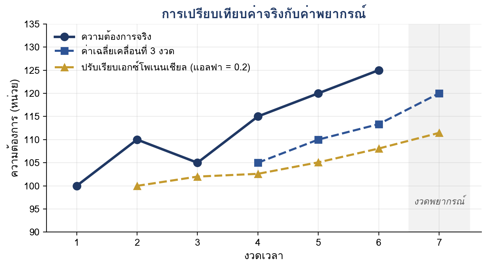
6.2.1 ค่าเฉลี่ยเคลื่อนที่
ค่าเฉลี่ยเคลื่อนที่ (Moving Average) ใช้ค่าเฉลี่ยของข้อมูลจริงในช่วงล่าสุด n งวดเป็นค่าพยากรณ์ เหมาะกับข้อมูลที่ค่อนข้างคงที่ไม่มีแนวโน้มชัดเจน ส่วนค่าเฉลี่ยเคลื่อนที่แบบถ่วงน้ำหนัก (Weighted Moving Average) ให้น้ำหนักแก่ข้อมูลล่าสุดมากกว่า
6.2.2 การปรับเรียบเอกซ์โพเนนเชียล
การปรับเรียบเอกซ์โพเนนเชียล (Exponential Smoothing) เป็นวิธีที่ปรับค่าพยากรณ์โดยอาศัยค่าพยากรณ์เดิมบวกด้วยสัดส่วนของความคลาดเคลื่อนในงวดที่ผ่านมา โดยมีค่าคงที่การปรับเรียบ (α) ระหว่าง 0 ถึง 1 ตามสมการ
6.2.3 การวิเคราะห์การถดถอยเชิงเส้น
เมื่อข้อมูลมีแนวโน้มชัดเจน การวิเคราะห์การถดถอยเชิงเส้น (Linear Regression) จะให้ผลพยากรณ์ที่ดีกว่า โดยประมาณความสัมพันธ์เชิงเส้นระหว่างเวลากับความต้องการในรูป y = a + bx เมื่อ
การเปรียบเทียบความแม่นยำระหว่างวิธีพยากรณ์เชิงปริมาณเป็นประเด็นวิจัยที่มีการศึกษาอย่างกว้างขวาง โดยการแข่งขันพยากรณ์ระดับนานาชาติที่มีชื่อเสียง เช่น M-Competition พบว่าวิธีพยากรณ์ที่ซับซ้อนกว่าไม่จำเป็นต้องให้ความแม่นยำสูงกว่าวิธีพื้นฐาน เช่น ค่าเฉลี่ยเคลื่อนที่หรือการปรับเรียบเอกซ์โพเนนเชียลที่แสดงในตัวอย่างที่ 6.1 และ 6.2 เสมอไป การเลือกวิธีที่เหมาะสมจึงควรพิจารณาจากลักษณะข้อมูลและผลการวัดความคลาดเคลื่อนอย่างเป็นระบบ ดังตัวอย่างที่ 6.4 และ 6.4 (เสริม) มากกว่าความซับซ้อนของแบบจำลอง (Makridakis & Hibon, 2000)
6.2.4 การปรับเรียบเอกซ์โพเนนเชียลแบบมีแนวโน้ม (วิธีของ Holt)
การปรับเรียบเอกซ์โพเนนเชียลอย่างง่ายในหัวข้อ 6.2.2 มีข้อจำกัดสำคัญคือค่าพยากรณ์จะตามหลังข้อมูลจริงอย่างเป็นระบบเมื่ออนุกรมเวลามีแนวโน้มเพิ่มขึ้นหรือลดลง วิธีของ Holt แก้ข้อจำกัดนี้โดยปรับเรียบสององค์ประกอบแยกจากกัน คือ ระดับ (Level: L) และแนวโน้ม (Trend: T) ด้วยค่าคงที่การปรับเรียบ α และ β ตามลำดับ ดังสมการ
เมื่อ At คือค่าจริงงวดที่ t โดยหาก β = 0 วิธีของ Holt จะลดรูปเป็นการปรับเรียบอย่างง่าย และเมื่อเพิ่มองค์ประกอบฤดูกาลเข้าไปอีกชั้นหนึ่งจะได้วิธี Holt–Winters ที่เหมาะกับสินค้าเกษตรและสินค้าตามเทศกาลซึ่งพบมากในบริบทวิสาหกิจภาคตะวันออกเฉียงเหนือ
เทคนิคการปรับเรียบเอกซ์โพเนนเชียลข้างต้นมีรากฐานจากงานของ Holt (2004) ซึ่งเผยแพร่ครั้งแรกเป็นบันทึกวิจัยในปี ค.ศ. 1957 และต่อมา Winters (1960) ขยายให้ครอบคลุมอิทธิพลฤดูกาล จนเป็นที่รู้จักในชื่อวิธี Holt–Winters ที่ยังใช้แพร่หลายในระบบวางแผนความต้องการเชิงพาณิชย์ปัจจุบัน ด้วยจุดเด่นด้านความเรียบง่าย ต้นทุนการคำนวณต่ำ และความแม่นยำที่แข่งขันได้สำหรับข้อมูลอนุกรมเวลาทั่วไป
6.3 การวัดความคลาดเคลื่อนของการพยากรณ์
การประเมินความแม่นยำของการพยากรณ์ช่วยในการเลือกวิธีและปรับปรุงแบบจำลอง ดัชนีที่นิยมใช้มีสามตัว ได้แก่ ค่าเฉลี่ยความคลาดเคลื่อนสัมบูรณ์ (MAD) ค่าเฉลี่ยความคลาดเคลื่อนกำลังสอง (MSE) และค่าเฉลี่ยร้อยละความคลาดเคลื่อนสัมบูรณ์ (MAPE) ตามสมการ
อย่างไรก็ตาม Hyndman และ Koehler (2006) เตือนว่า MAPE มีข้อจำกัดเมื่อข้อมูลจริงมีค่าใกล้ศูนย์ และให้น้ำหนักการพยากรณ์สูงเกินกับต่ำเกินไม่เท่ากัน จึงเสนอมาตรวัด MASE ที่เทียบกับวิธีพยากรณ์อย่างง่ายเป็นฐาน ขณะที่ผลการแข่งขันพยากรณ์ M4 ซึ่งครอบคลุมอนุกรมเวลากว่าหนึ่งแสนชุด (Makridakis, Spiliotis, & Assimakopoulos, 2018) ยืนยันว่าการผสมหลายวิธีพยากรณ์เข้าด้วยกันมักให้ความแม่นยำสูงกว่าการใช้วิธีเดียว ผู้วางแผนจึงควรเลือกมาตรวัดและวิธีพยากรณ์อย่างมีวิจารณญาณตามลักษณะข้อมูลจริงขององค์กร
6.3.1 สัญญาณติดตามเพื่อเฝ้าระวังความเอนเอียงของการพยากรณ์ (Tracking Signal)
มาตรวัด MAD MSE และ MAPE ประเมินความแม่นยำในภาพรวม แต่ไม่บ่งชี้ว่าการพยากรณ์มีความเอนเอียงอย่างเป็นระบบหรือไม่ สัญญาณติดตามเป็นเครื่องมือเฝ้าระวังเชิงพลวัตที่คำนวณทุกงวด จากอัตราส่วนระหว่างผลรวมสะสมของค่าคลาดเคลื่อน (Running Sum of Forecast Errors: RSFE) ต่อค่า MAD ดังนี้
โดยทั่วไปกำหนดขีดจำกัดควบคุมไว้ที่ ±4 MAD หากค่า TS เกินขีดจำกัดด้านบวก แสดงว่าแบบจำลองพยากรณ์ต่ำกว่าความเป็นจริงอย่างเป็นระบบ และหากเกินด้านลบ แสดงว่าพยากรณ์สูงเกินจริง กรณีเช่นนี้ควรทบทวนแบบจำลอง เช่น ปรับค่า α หรือเปลี่ยนไปใช้แบบจำลองที่รองรับแนวโน้มตามหัวข้อ 6.2.4 แนวคิดของสัญญาณติดตามเป็นการประยุกต์หลักการแผนภูมิควบคุมของการจัดการคุณภาพ (บทที่ 8) เข้ากับงานพยากรณ์ ช่วยให้ผู้วางแผนตรวจพบการเปลี่ยนแปลงเชิงโครงสร้างของอุปสงค์ได้ก่อนที่ความเสียหายจะสะสม
6.4 การวางแผนการผลิตรวม
การวางแผนการผลิตรวม (Aggregate Planning) เป็นการวางแผนระยะกลาง (3–18 เดือน) เพื่อกำหนดระดับการผลิต กำลังแรงงาน และสินค้าคงคลังให้สอดคล้องกับความต้องการที่พยากรณ์ไว้ โดยมีกลยุทธ์หลักสองแบบ คือ กลยุทธ์คงที่ (Level Strategy) ที่รักษาระดับการผลิตให้คงที่และใช้สินค้าคงคลังรองรับความผันผวน และกลยุทธ์ไล่ตาม (Chase Strategy) ที่ปรับระดับการผลิตให้เท่ากับความต้องการในแต่ละงวด ดังภาพที่ 6.4
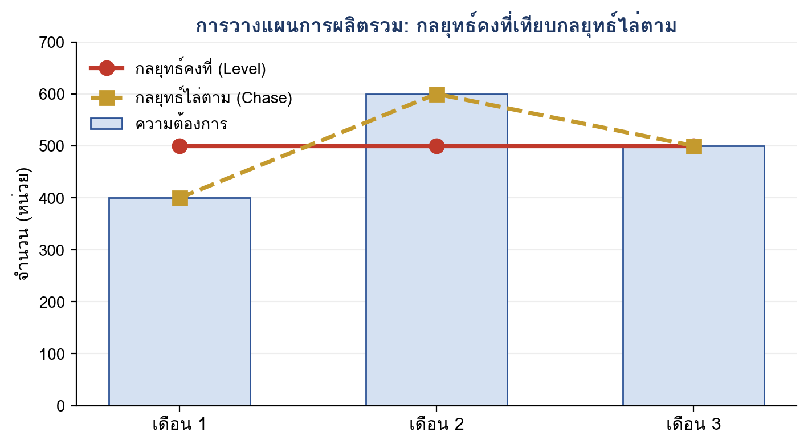
6.5 ตารางการผลิตหลักและการจัดตารางการผลิต
เมื่อได้แผนการผลิตรวมแล้ว ขั้นถัดไปคือการแปลงแผนรวมเป็นตารางการผลิตหลัก (Master Production Schedule: MPS) ซึ่งระบุปริมาณและช่วงเวลาการผลิตของผลิตภัณฑ์เฉพาะรายการในระดับสัปดาห์ MPS เป็นปัจจัยนำเข้าสำคัญของการวางแผนความต้องการวัสดุและการจัดตารางการผลิตในระดับปฏิบัติการ
การจัดตารางการผลิต (Scheduling) เป็นการกำหนดลำดับและช่วงเวลาของงานในระดับสถานีงานหรือเครื่องจักร โดยอาศัยกฎการจัดลำดับงาน เช่น กฎมาก่อนทำก่อน (FCFS) กฎงานที่ใช้เวลาสั้นที่สุดก่อน (SPT) และกฎกำหนดส่งเร็วที่สุดก่อน (EDD) ซึ่งแต่ละกฎให้ผลต่างกันในด้านเวลาไหลเฉลี่ยและความล่าช้า การเลือกกฎที่เหมาะสมจึงขึ้นอยู่กับเป้าหมายของการดำเนินงาน เช่น การลดเวลาไหลหรือการลดความล่าช้าในการส่งมอบ
6.6 การวางแผนความต้องการวัสดุ (Material Requirements Planning: MRP) เบื้องต้น
เมื่อกำหนดตารางการผลิตหลัก (MPS) ของผลิตภัณฑ์สำเร็จรูปแล้ว ขั้นถัดไปคือการแปลงความต้องการผลิตภัณฑ์สำเร็จรูปเป็นความต้องการชิ้นส่วนและวัตถุดิบในแต่ละช่วงเวลา ด้วยการวางแผนความต้องการวัสดุ (MRP) ซึ่งอาศัยข้อมูลนำเข้าสามส่วน ได้แก่ ตารางการผลิตหลัก โครงสร้างผลิตภัณฑ์ (Bill of Materials: BOM) ที่ระบุชนิดและจำนวนชิ้นส่วนที่ใช้ต่อหนึ่งหน่วยผลิตภัณฑ์ และสถานะสินค้าคงคลัง (ยอดคงเหลือ ใบสั่งซื้อที่รอรับ และเวลานำในการจัดหา)
ผลลัพธ์ของ MRP แสดงเป็นบันทึกความต้องการวัสดุตามช่วงเวลา (Time-Phased Record) ซึ่งประกอบด้วยรายการต่อไปนี้ในแต่ละงวด
ความต้องการรวม (Gross Requirements: GR) คือความต้องการชิ้นส่วนทั้งหมดในงวดนั้น ซึ่งคำนวณจาก MPS ของผลิตภัณฑ์สำเร็จรูปคูณด้วยจำนวนที่ใช้ต่อหน่วยตาม BOM
ยอดรับตามกำหนด (Scheduled Receipts: SR) คือปริมาณที่มีใบสั่งซื้อหรือใบสั่งผลิตค้างอยู่และจะรับเข้าคลังในงวดนั้น ยอดคงเหลือที่คาดการณ์ (Projected On-Hand: POH) คำนวณต่อเนื่องจากงวดก่อนหน้าตามสมการ
ความต้องการสุทธิ (Net Requirements: NR) เกิดขึ้นเมื่อยอดคงเหลือจากงวดก่อนรวมกับยอดรับตามกำหนดไม่เพียงพอต่อความต้องการรวมของงวดนั้น จึงต้องวางแผนสั่งผลิตหรือสั่งซื้อเพิ่ม โดยยอดรับตามแผน (Planned Order Receipt: POR) มักกำหนดเท่ากับ NR ตามหลักการสั่งเท่าที่ต้องการ (Lot-for-Lot) และสุดท้ายยอดปล่อยตามแผน (Planned Order Release: POL) คือ POR ที่เลื่อนเวลาย้อนกลับตามเวลานำในการจัดหาหรือผลิต เพื่อให้ทราบว่าต้องเริ่มดำเนินการสั่งซื้อหรือสั่งผลิตในงวดใด
วิธีทำ (ต่อ) สัปดาห์ที่ 2 ยอดคงเหลือจากสัปดาห์ก่อน (50) ไม่พอกับ GR (200) จึงเกิด NR = 200 − 50 = 150 หน่วย วางแผนรับ (POR) 150 หน่วยในสัปดาห์ที่ 2 ทำให้ POH ปลายสัปดาห์ที่ 2 = 50 + 150 − 200 = 0 หน่วย สัปดาห์ที่ 4 มี GR = 300 หน่วย ขณะที่ POH ต้นงวดเท่ากับ 0 หน่วย จึงเกิด NR = 300 หน่วย และวางแผนรับ (POR) 300 หน่วยเช่นกัน เมื่อเลื่อนย้อนกลับตามเวลานำ 1 สัปดาห์ จะได้ยอดปล่อยตามแผน (POL) คือต้องเริ่มสั่งซื้อชิ้นส่วน X จำนวน 150 หน่วยในสัปดาห์ที่ 1 และอีก 300 หน่วยในสัปดาห์ที่ 3 ตอบ ฝ่ายจัดซื้อต้องออกใบสั่งซื้อชิ้นส่วน X ล่วงหน้าตามกำหนดยอดปล่อยตามแผนดังกล่าว เพื่อให้ชิ้นส่วนพร้อมใช้ทันตามตารางการผลิตหลัก
สำหรับผลิตภัณฑ์ที่มีโครงสร้างหลายระดับ (Multi-Level BOM) การคำนวณ MRP จะไล่จากระดับบนสุด (ผลิตภัณฑ์สำเร็จรูป) ลงสู่ระดับล่าง (ชิ้นส่วนย่อยและวัตถุดิบ) ตามลำดับ โดยยอดปล่อยตามแผนของชิ้นส่วนระดับบนจะกลายเป็นความต้องการรวมของชิ้นส่วนระดับล่างที่ประกอบขึ้นเป็นชิ้นส่วนนั้น ส่วนขนาดการสั่งซื้อในแต่ละงวดอาจกำหนดแบบเท่าที่ต้องการดังตัวอย่างข้างต้น หรือกำหนดเป็นปริมาณคงที่ตามปริมาณการสั่งซื้อที่ประหยัด (EOQ) ซึ่งจะกล่าวถึงรายละเอียดในบทที่ 7
วิธีทำ (ต่อ) ยอดรับตามแผน 250 หน่วยในสัปดาห์ที่ 1 เมื่อเลื่อนย้อนกลับ 2 สัปดาห์ตามเวลานำ จะตกอยู่ก่อนสัปดาห์ที่ 1 คืออยู่นอกขอบเขตเวลาที่วางแผนไว้ ส่วนยอดรับตามแผน 900 หน่วยในสัปดาห์ที่ 3 เมื่อเลื่อนย้อนกลับ 2 สัปดาห์ ตกอยู่ในสัปดาห์ที่ 1 ตอบ ฝ่ายจัดซื้อต้องออกใบสั่งซื้อวัตถุดิบ Z จำนวน 900 หน่วยในสัปดาห์ที่ 1 ส่วนคำสั่งซื้อ 250 หน่วยที่ควรออกก่อนสัปดาห์ที่ 1 ได้เลยกำหนดไปแล้ว ระบบ MRP จะแจ้งเตือนสถานะเร่งด่วน (Expedite) ให้เร่งดำเนินการสั่งซื้อโดยเร็วที่สุด กรณีนี้แสดงให้เห็นถึงความสำคัญของการกำหนดขอบเขตเวลาการวางแผน (Planning Horizon) ให้ยาวเพียงพอที่จะครอบคลุมเวลานำสะสมของทุกระดับใน BOM ไม่เช่นนั้นระบบจะไม่สามารถแจ้งเตือนล่วงหน้าได้ทันเวลา
กรณีศึกษา
📎 กรณีศึกษา
บทสรุป
การพยากรณ์ความต้องการเป็นพื้นฐานของการวางแผนการดำเนินงาน โดยอนุกรมเวลาความต้องการประกอบด้วยองค์ประกอบด้านแนวโน้ม ฤดูกาล วัฏจักร และความผันแปรสุ่ม เทคนิคการพยากรณ์เชิงปริมาณที่สำคัญ ได้แก่ ค่าเฉลี่ยเคลื่อนที่ที่เหมาะกับข้อมูลคงที่ การปรับเรียบเอกซ์โพเนนเชียลที่ปรับค่าตามความคลาดเคลื่อนล่าสุด และการถดถอยเชิงเส้นที่เหมาะกับข้อมูลที่มีแนวโน้มชัดเจน
ความแม่นยำของการพยากรณ์ประเมินได้ด้วย MAD, MSE และ MAPE เพื่อเลือกวิธีที่มีความคลาดเคลื่อนต่ำที่สุด ผลพยากรณ์ถูกนำไปใช้ในการวางแผนการผลิตรวมซึ่งเลือกได้ระหว่างกลยุทธ์คงที่และกลยุทธ์ไล่ตามตามโครงสร้างต้นทุนขององค์กร และแปลงต่อเป็นตารางการผลิตหลักและการจัดตารางการผลิตในระดับปฏิบัติการ ทำให้การวางแผนการผลิตมีความเชื่อมโยงกันอย่างเป็นระบบตั้งแต่ระดับกลยุทธ์จนถึงระดับปฏิบัติการ
สำหรับวิสาหกิจเกษตรในภาคตะวันออกเฉียงเหนือที่ความต้องการผันผวนตามฤดูกาลเก็บเกี่ยว การตัดสินใจวางแผนการผลิตมักต้องคำนึงถึงหลายปัจจัยพร้อมกัน ทั้งความ เหมาะสมของผลผลิต ความต้องการของตลาด และข้อจำกัดด้านทรัพยากร ในกรณีเช่นนี้ เครื่องมือการตัดสินใจแบบหลายเกณฑ์สามารถใช้ประกอบการพยากรณ์เชิงปริมาณได้ ดังที่คลอเคลีย วจนะวิชากร (2568) ได้ ประยุกต์กระบวนการลำดับชั้นเชิงวิเคราะห์ในการคัด เลือกพืชเศรษฐกิจที่เหมาะสมเพื่อสนับสนุนการวางแผนการผลิตทางการเกษตรในบริบท
ภาคตะวันออกเฉียงเหนือของไทย ในทำนองเดียวกัน ศิริภิญญา อาสา และคณะ (2568) ได้พัฒนาระบบสนับสนุนการตัดสินใจวางแผนการปลูกพืชเศรษฐกิจด้วยเทคนิคต้นไม้ตัดสินใจร่วมกับป่าสุ่ม (Random Forest) เพื่อทำนายชนิดพืชที่เหมาะสมพร้อมประมาณการ ผลผลิตและรายได้สุทธิต่อไร่ ซึ่งสะท้อนการประยุกต์เทคนิคการเรียนรู้ของเครื่องเข้ากับ การพยากรณ์ผลผลิตทางการเกษตร นอกจากนี้ คลอเคลีย วจนะวิชากร และคณะ (2567) ยังชี้ให้เห็นว่าการขาดการพยากรณ์ความต้องการและการแลกเปลี่ยนข้อมูลคำสั่งซื้อล่วง
หน้าเป็นปัญหาสำคัญในห่วงโซ่อุปทานพริกของวิสาหกิจชุมชน ซึ่งตอกย้ำบทบาทของการ พยากรณ์ที่แม่นยำต่อการวางแผนการผลิต
คำถามทบทวนและแบบฝึกหัด
ก. คำถามทบทวน
- อนุกรมเวลาความต้องการประกอบด้วยองค์ประกอบใดบ้าง
- ค่าเฉลี่ยเคลื่อนที่ การปรับเรียบเอกซ์โพเนนเชียล เหมาะกับข้อมูลลักษณะใด
- ค่าคงที่การปรับเรียบ α ที่สูงและต่ำส่งผลต่อค่าพยากรณ์อย่างไร
- MAD, MSE และ MAPE แตกต่างกันอย่างไร และใช้ในสถานการณ์ใด
- กลยุทธ์คงที่และกลยุทธ์ไล่ตามในการวางแผนการผลิตรวมต่างกันอย่างไร
ข. แบบฝึกหัดเชิงคำนวณ
- ความต้องการ 5 งวด: 50, 55, 53, 58, 60 จงพยากรณ์งวดที่ 6 ด้วยค่าเฉลี่ยเคลื่อนที่ 3 งวด
- จากข้อ 1 จงพยากรณ์ด้วยการปรับเรียบเอกซ์โพเนนเชียล (α = 0.4, F₁ = 50) ถึงงวดที่ 6
- ค่าจริง 3 งวด: 120, 130, 125 ค่าพยากรณ์: 115, 128, 130 จงคำนวณ MAD, MSE และ MAPE
- ความต้องการจริง 3 งวด ได้แก่ 120, 128 และ 135 หน่วย กำหนด α = 0.3, β = 0.2, L0 = 115 และ T0 = 5 จงพยากรณ์งวดที่ 4 ด้วยวิธีของ Holt จากนั้นหากค่าคลาดเคลื่อนการพยากรณ์ 4 งวดเท่ากับ +5, +3, −2 และ +6 จงคำนวณสัญญาณติดตามและแปลผลเมื่อขีดจำกัดเท่ากับ ±4 MAD
เอกสารอ้างอิงประจำบท
Makridakis, S., & Hibon, M. (2000). The M3-competition: Results, conclusions and implications. International Journal of Forecasting, 16(4), 451-476.
Makridakis, S., Spiliotis, E., & Assimakopoulos, V. (2018). The M4 Competition: Results, findings, conclusion and way forward. International Journal of Forecasting, 34(4), 802-808.
Heizer, J., Render, B., & Munson, C. (2020). Operations management: Sustainability and supply chain management (13th ed.). Pearson.
Holt, C. C. (2004). Forecasting seasonals and trends by exponentially weighted moving averages. International Journal of Forecasting, 20(1), 5-10.
Hyndman, R. J., & Athanasopoulos, G. (2021). Forecasting: Principles and practice (3rd ed.). OTexts.
Hyndman, R. J., & Koehler, A. B. (2006). Another look at measures of forecast accuracy. International Journal of Forecasting, 22(4), 679-688.
Jacobs, F. R., & Chase, R. B. (2021). Operations and supply chain management (16th ed.). McGraw-Hill Education.
Krajewski, L. J., Malhotra, M. K., & Ritzman, L. P. (2022). Operations management: Processes and supply chains (13th ed.). Pearson.
Nahmias, S., & Olsen, T. L. (2021). Production and operations analysis (8th ed.). Waveland Press.
Stevenson, W. J. (2021). Operations management (14th ed.). McGraw-Hill Education.
Wajanawichakon, K., Srisurin, K., & Ongkunaruk, P. (2025). Multi-criteria decision analysis for sustainable crop selection in Northeast Thailand: An analytical hierarchy process approach. International Journal of Technology, 16(3), 780–795.
Winters, P. R. (1960). Forecasting sales by exponentially weighted moving averages. Management Science, 6(3), 324-342.
คลอเคลีย วจนะวิชากร ขจิตา สมเนตร และกนกกาญจน์ ศรีสุรินทร์. (2567). การศึกษาห่วงโซ่อุปทานวิสาหกิจชุมชนแปลงใหญ่พริกตำบลหัวเรือ จังหวัดอุบลราชธานี. วารสารวิศวกรรมศาสตร์และนวัตกรรม, 17(1), 163–178.
ศิริภิญญา อาสา วจิราภรณ์ ประชุมรักษ์ และคลอเคลีย วจนะวิชากร. (2568). ระบบสนับสนุนการตัดสินใจวางแผนการปลูกพืชเศรษฐกิจโดยใช้เทคนิคการเรียนรู้ของเครื่องแบบต้นไม้ตัดสินใจ: กรณีศึกษาตำบลหัวเรือ อำเภอเมือง จังหวัดอุบลราชธานี. วารสารวิศวกรรมศาสตร์และนวัตกรรม, 18(4), 146–159.
การจัดการสินค้าคงคลัง
🎯 วัตถุประสงค์การเรียนรู้ประจำบท
เมื่อศึกษาบทนี้จบแล้ว ผู้เรียนสามารถ
- อธิบายบทบาท ประเภท และต้นทุนของสินค้าคงคลังได้
- คำนวณปริมาณการสั่งซื้อที่ประหยัดและต้นทุนรวมที่เกี่ยวข้องได้
- คำนวณจุดสั่งซื้อใหม่และสต็อกเพื่อความปลอดภัยได้
- จัดประเภทสินค้าคงคลังด้วยวิธี ABCได้
- อธิบายแนวคิดการจัดการสินค้าคงคลังโดยผู้ขายได้
สินค้าคงคลังเป็นทรัพย์สินหมุนเวียนที่มีมูลค่าสูงและมีผลต่อทั้งต้นทุนและระดับการบริการขององค์กร การจัดการสินค้าคงคลังที่ดีต้องสร้างสมดุลระหว่างต้นทุนการถือครองที่ต้องการให้ต่ำกับความพร้อมในการตอบสนองความต้องการของลูกค้า บทนี้นำเสนอบทบาทและต้นทุนของสินค้าคงคลัง แบบจำลองปริมาณการสั่งซื้อที่ประหยัด การกำหนดจุดสั่งซื้อใหม่และสต็อกเพื่อความปลอดภัย การจัดประเภทแบบ ABC และแนวคิดการจัดการสินค้าคงคลังโดยผู้ขาย
7.1 บทบาท ประเภท และต้นทุนของสินค้าคงคลัง
สินค้าคงคลัง (Inventory) มีบทบาทสำคัญหลายประการ ได้แก่ การแยกอิสระระหว่างขั้นตอนการผลิต (Decoupling) การรองรับความไม่แน่นอนของอุปสงค์และอุปทาน การใช้ประโยชน์จากการประหยัดต่อขนาดในการสั่งซื้อ และการรองรับความผันผวนตามฤดูกาล
- ประเภทของสินค้าคงคลัง
- วัตถุดิบ (Raw Materials) วัสดุที่รอเข้าสู่กระบวนการผลิต
- งานระหว่างทำ (Work-in-Process) ชิ้นงานที่อยู่ระหว่างกระบวนการผลิต
- สินค้าสำเร็จรูป (Finished Goods) สินค้าที่พร้อมจำหน่ายให้ลูกค้า
- วัสดุซ่อมบำรุง วัสดุสำหรับการบำรุงรักษา ซ่อมแซม และดำเนินงาน
7.1.2 ต้นทุนของสินค้าคงคลัง
ต้นทุนที่เกี่ยวข้องกับสินค้าคงคลังมีสี่ประเภทหลัก ได้แก่ ต้นทุนการถือครอง (Holding Cost) เช่น ค่าเก็บรักษา ดอกเบี้ย และการเสื่อมสภาพ ต้นทุนการสั่งซื้อ (Ordering Cost) ที่เกิดขึ้นต่อครั้งของการสั่ง ต้นทุนการขาดสินค้า (Shortage Cost) จากการเสียโอกาสขายหรือเสียความเชื่อมั่นของลูกค้า และต้นทุนค่าสินค้า (Item Cost) เป้าหมายของการจัดการคือการลดต้นทุนรวมเหล่านี้พร้อมรักษาระดับการบริการที่เหมาะสม
7.2 แบบจำลองปริมาณการสั่งซื้อที่ประหยัด
แบบจำลองพื้นฐานของสินค้าคงคลังตั้งอยู่บนสมมติฐานว่าความต้องการคงที่และทราบแน่นอน เมื่อสั่งซื้อครั้งละ Q หน่วย ระดับสินค้าคงคลังจะลดลงอย่างสม่ำเสมอจนถึงศูนย์แล้วเติมเต็มกลับเป็น Q ทำให้เกิดรูปแบบฟันเลื่อย (Sawtooth) และมีสินค้าคงคลังเฉลี่ยเท่ากับ Q/2 ดังภาพที่ 7.1
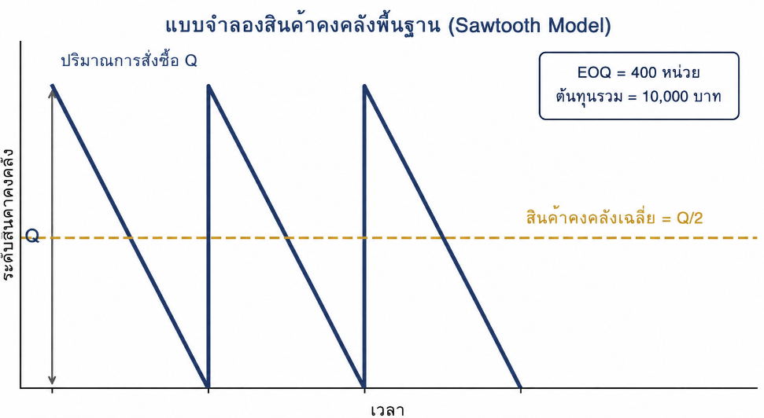
แบบจำลองนี้มีรากฐานจากงานของ Harris (1913) ซึ่งนับเป็นหนึ่งในแบบจำลองเชิงปริมาณที่เก่าแก่ที่สุดของสาขาการจัดการการดำเนินงานและยังคงใช้อย่างแพร่หลายมาเกินหนึ่งศตวรรษ การสำรวจวรรณกรรมของ Andriolo, Battini, Grubbström, Persona และ Sgarbossa (2014) ซึ่งวิเคราะห์บทความ 219 เรื่อง แสดงพัฒนาการของแบบจำลองขนาดรุ่นการผลิตจากรูปแบบพื้นฐานของ Harris ไปสู่ส่วนขยายที่ครอบคลุมส่วนลดตามปริมาณ ข้อจำกัดด้านความจุ และความยั่งยืน ขณะที่การทบทวนสถานะองค์ความรู้ล่าสุดของ Alnahhal, Aylak, Al Hazza และ Sakhrieh (2024) ชี้ว่าแนวโน้มการวิจัยปัจจุบันมุ่งขยายแบบจำลองให้รองรับความไม่แน่นอนของโซ่อุปทานและเป้าหมายด้านสิ่งแวดล้อม อย่างไรก็ตาม แบบจำลองพื้นฐานยังคงเป็นจุดเริ่มต้นที่เหมาะสมสำหรับวิสาหกิจที่ความต้องการค่อนข้างคงที่
ปริมาณการสั่งซื้อที่ประหยัด (Economic Order Quantity: EOQ) คือปริมาณการสั่งซื้อที่ทำให้ต้นทุนรวม ซึ่งประกอบด้วยต้นทุนการสั่งซื้อและต้นทุนการถือครอง ต่ำที่สุด คำนวณได้จากสมการ EOQ = √(2DS ÷ H)
เมื่อ D คือความต้องการต่อปี S คือต้นทุนการสั่งซื้อต่อครั้ง และ H คือต้นทุนการถือครองต่อหน่วยต่อปี โดยต้นทุนรวมต่อปีคำนวณจาก
7.2.1 ปริมาณการสั่งซื้อที่ประหยัดภายใต้ส่วนลดตามปริมาณ (Quantity Discounts)
ในทางปฏิบัติ ผู้ขายมักเสนอราคาต่อหน่วยที่ลดลงเมื่อสั่งซื้อในปริมาณมากขึ้น (Quantity Discount) ทำให้ต้องพิจารณาต้นทุนค่าสินค้าเข้าไปในการตัดสินใจร่วมกับต้นทุนการสั่งซื้อและการถือครอง ขั้นตอนการหาปริมาณการสั่งซื้อที่ประหยัดที่สุดภายใต้ส่วนลดมีดังนี้ (1) คำนวณ EOQ ของราคาแต่ละระดับโดยเริ่มจากราคาต่ำที่สุด โดยต้นทุนการถือครอง H มักกำหนดเป็นร้อยละของราคาต่อหน่วย (H = อัตราร้อยละ × ราคา) (2) ตรวจสอบว่า EOQ ที่คำนวณได้อยู่ในช่วงปริมาณของราคานั้นหรือไม่ หากอยู่ในช่วง ถือว่าเป็นปริมาณที่เป็นไปได้ (Feasible) หากต่ำกว่าช่วง ให้ปรับเป็นขอบล่างของช่วงราคานั้นแทน (3) คำนวณต้นทุนรวมต่อปี ซึ่งประกอบด้วยต้นทุนค่าสินค้า ต้นทุนการสั่งซื้อ และต้นทุนการถือครอง ของทุกปริมาณที่เป็นไปได้ (4) เลือกปริมาณที่ให้ต้นทุนรวมต่ำที่สุด
วิธีทำ (ต่อ) ตอบ ปริมาณการสั่งซื้อที่ให้ต้นทุนรวมต่ำที่สุดคือ Q = 1,000 หน่วย ที่ราคา 23 บาทต่อหน่วย โดยมีต้นทุนรวมต่อปีเท่ากับ 234,300 บาท ซึ่งต่ำกว่าทางเลือกอื่นทั้งสอง แม้ปริมาณที่สั่งจะมากกว่า EOQ ทางทฤษฎีของราคานั้น แต่ต้นทุนค่าสินค้าที่ลดลงจากส่วนลดปริมาณมีน้ำหนักมากกว่าต้นทุนการถือครองที่เพิ่มขึ้น ผู้จัดการจึงควรสั่งซื้อครั้งละ 1,000 หน่วยเพื่อได้รับสิทธิ์ราคาส่วนลดสูงสุด
แบบจำลองปริมาณการสั่งซื้อที่ประหยัดแบบดั้งเดิมมุ่งลดต้นทุนรวมทางการเงินเป็นหลัก งานวิจัยล่าสุดด้านการจัดการสินค้าคงคลังเริ่มขยายกรอบแบบจำลอง EOQ ให้ครอบคลุมต้นทุนด้านสิ่งแวดล้อม เช่น การปล่อยคาร์บอนจากการขนส่งและการถือครองสินค้าคงคลัง ควบคู่กับต้นทุนทางการเงินแบบเดิมที่แสดงในตัวอย่างที่ 7.1 และ 7.4 สะท้อนแนวโน้มการบูรณาการมิติความยั่งยืนเข้ากับการตัดสินใจด้านสินค้าคงคลังที่จะกล่าวถึงเพิ่มเติมในหัวข้อ 10.6 (Becerra et al., 2022)
7.3 จุดสั่งซื้อใหม่และสต็อกเพื่อความปลอดภัย
ในทางปฏิบัติ การสั่งซื้อต้องใช้เวลานำ (Lead Time) กว่าสินค้าจะมาถึง องค์กรจึงต้องสั่งซื้อล่วงหน้าเมื่อสินค้าคงคลังลดลงถึงระดับหนึ่ง เรียกว่าจุดสั่งซื้อใหม่ (Reorder Point: ROP) หากความต้องการในช่วงเวลานำคงที่ ROP คำนวณได้จากผลคูณของความต้องการต่อวันกับเวลานำ
เมื่อความต้องการมีความผันผวน องค์กรจำเป็นต้องมีสต็อกเพื่อความปลอดภัย (Safety Stock) เพื่อป้องกันการขาดสินค้า ณ ระดับการบริการที่กำหนด โดย
เมื่อ z คือค่ามาตรฐานตามระดับการบริการ และ σ คือส่วนเบี่ยงเบนมาตรฐานของความต้องการต่อวัน ดังภาพที่ 7.3
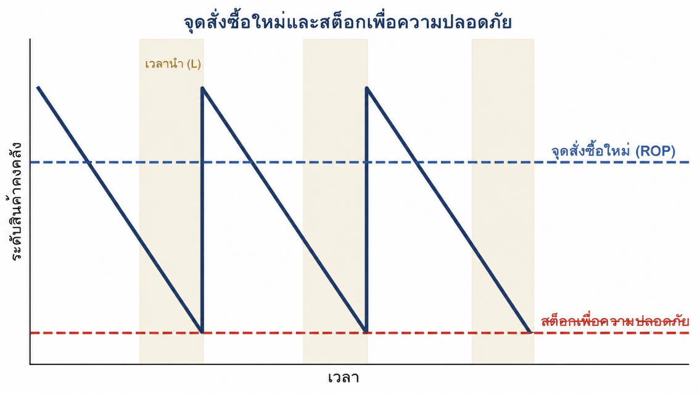
7.4 การจัดประเภทสินค้าคงคลังแบบ ABC
เนื่องจากองค์กรมีสินค้าคงคลังจำนวนมากที่มีมูลค่าและความสำคัญต่างกัน การจัดประเภทแบบ ABC ช่วยจัดลำดับความสำคัญในการควบคุม โดยอาศัยหลักการพาเรโต (Pareto) ที่ว่าสินค้าส่วนน้อยมักมีมูลค่าการใช้สูง การจัดประเภทแบ่งเป็นกลุ่ม A ที่มีมูลค่าสูงสุด (ราว 70–80% ของมูลค่ารวมแต่เป็นจำนวนรายการน้อย) กลุ่ม B ที่มีมูลค่าปานกลาง และกลุ่ม C ที่มีมูลค่าต่ำแต่มีจำนวนรายการมาก
หลักฐานเชิงประจักษ์ในบริบทประเทศไทยสนับสนุนประสิทธิผลของแนวทางนี้ ฤดี นิยมรัตน์ กฤษฎา นาคะวงศ์ และกษิดิ์เดช แช่มสายทอง (2565) ประยุกต์การวิเคราะห์เอบีซีร่วมกับปริมาณการสั่งซื้อที่ประหยัดกับสินค้าคงคลัง 250 รายการของร้านจำหน่ายวัสดุก่อสร้าง พบว่าสินค้ากลุ่ม A มีเพียง 14 รายการแต่ครองมูลค่าประมาณร้อยละ 70 ของมูลค่ารวม และเมื่อกำหนดนโยบายสั่งซื้อตามแบบจำลองสำหรับสินค้ากลุ่ม A สามารถลดต้นทุนสินค้าคงคลังรวมได้ประมาณร้อยละ 41 ต่อปี ผลลัพธ์ดังกล่าวสะท้อนหลักการพาเรโตอย่างชัดเจน และแสดงว่าการทุ่มเทความพยายามควบคุมไปยังสินค้าส่วนน้อยที่มีมูลค่าสูงให้ผลตอบแทนที่คุ้มค่าแม้ในวิสาหกิจขนาดกลาง
วิธีทำ มูลค่ารวม = 180,000+90,000+50,000+30,000+19,000 = 369,000 บาท ร้อยละสะสมคำนวณจากมูลค่าสะสมหารด้วยมูลค่ารวม ตอบ กลุ่ม A คือตลับลูกปืนหลักและสายพานส่งกำลัง (ร้อยละ 73 ของมูลค่าด้วยเพียง 2 ใน 5 รายการ) ควรมีระบบตรวจสอบสต็อกอย่างใกล้ชิดและสำรองไว้เพียงพอเพราะหากขาดจะกระทบการผลิตรุนแรง กลุ่ม B คือซีลกันรั่วและสกรูยึดมาตรฐาน ควบคุมแบบปานกลาง และกลุ่ม C คือน้ำมันหล่อลื่นซึ่งมีมูลค่าต่ำที่สุดควบคุมแบบหลวมได้ แม้เป็นอะไหล่ที่ต้องเบิกใช้บ่อยก็ตาม
7.5 การจัดการสินค้าคงคลังโดยผู้ขาย
การจัดการสินค้าคงคลังโดยผู้ขาย (Vendor-Managed Inventory: VMI) เป็นแนวคิดความร่วมมือในโซ่อุปทานที่ให้ผู้ส่งมอบรับผิดชอบการตัดสินใจเติมเต็มสินค้าคงคลังของลูกค้า โดยอาศัยการแบ่งปันข้อมูลความต้องการและระดับสินค้าคงคลังแบบเรียลไทม์ แนวทางนี้ช่วยลดปรากฏการณ์แส้ม้า (Bullwhip Effect) ลดสินค้าคงคลังส่วนเกิน และเพิ่มความพร้อมของสินค้า อย่างไรก็ตาม VMI ต้องอาศัยความไว้วางใจ ระบบสารสนเทศที่เชื่อมโยงกัน และการแบ่งปันผลประโยชน์อย่างเป็นธรรมระหว่างคู่ค้า ซึ่งสอดคล้องกับการบูรณาการโซ่อุปทานที่กล่าวถึงในบทที่ 5 และบทที่ 10
📎 กรณีศึกษา
กรณีศึกษา
📎 กรณีศึกษา
บทสรุป
สินค้าคงคลังมีบทบาทในการแยกอิสระระหว่างกระบวนการ รองรับความไม่แน่นอน และใช้ประโยชน์จากการประหยัดต่อขนาด โดยมีต้นทุนหลักคือต้นทุนการถือครอง การสั่งซื้อ การขาดสินค้า และค่าสินค้า แบบจำลองปริมาณการสั่งซื้อที่ประหยัด (EOQ) ช่วยหาปริมาณการสั่งซื้อที่ทำให้ต้นทุนรวมต่ำที่สุด ซึ่ง ณ จุดนั้นต้นทุนการสั่งซื้อจะเท่ากับต้นทุนการถือครอง
ในสภาวะที่มีเวลานำและความผันผวน องค์กรกำหนดจุดสั่งซื้อใหม่จากความต้องการในช่วงเวลานำบวกกับสต็อกเพื่อความปลอดภัยที่สอดคล้องกับระดับการบริการที่ต้องการ การจัดประเภทแบบ ABC ช่วยจัดลำดับความสำคัญในการควบคุมตามมูลค่าการใช้ตามหลักพาเรโต และการจัดการสินค้าคงคลังโดยผู้ขาย (VMI) เป็นแนวทางความร่วมมือที่ช่วยลดสินค้าคงคลังส่วนเกินและเพิ่มประสิทธิภาพตลอดโซ่อุปทาน
คำถามทบทวนและแบบฝึกหัด
ก. คำถามทบทวน
- สินค้าคงคลังมีบทบาทและประเภทใดบ้าง
- ต้นทุนของสินค้าคงคลังประกอบด้วยอะไรบ้าง และมีความสัมพันธ์กันอย่างไรในแบบจำลอง EOQ
- เหตุใด ณ จุด EOQ ต้นทุนการสั่งซื้อจึงเท่ากับต้นทุนการถือครอง
- จุดสั่งซื้อใหม่และสต็อกเพื่อความปลอดภัยมีความสัมพันธ์กับเวลานำอย่างไร
- หลักการของการจัดประเภทแบบ ABC และการจัดการสินค้าคงคลังคืออะไร
ข. แบบฝึกหัดเชิงคำนวณ
- สินค้ามีความต้องการปีละ 5,000 หน่วย ต้นทุนการสั่งซื้อ 100 บาท/ครั้ง ต้นทุนการถือครอง 10 บาท/หน่วย/ปี จงคำนวณ EOQ และต้นทุนรวมต่อปี
- ความต้องการเฉลี่ย 50 หน่วย/วัน เวลานำ 6 วัน ส่วนเบี่ยงเบนมาตรฐาน 8 หน่วย/วัน ระดับการบริการ 95% (z = 1.65) จงคำนวณจุดสั่งซื้อใหม่
- จากรายการสินค้า 4 รายการที่มีมูลค่าต่อปี 60,000, 8,000, 25,000 และ 7,000 บาท จงคำนวณร้อยละสะสมและจัดประเภทแบบ ABC
เอกสารอ้างอิงประจำบท
Alnahhal, M., Aylak, B. L., Al Hazza, M., & Sakhrieh, A. (2024). Economic order quantity: A state-of-the-art in the era of uncertain supply chains. Sustainability, 16(14), 5965.
Andriolo, A., Battini, D., Grubbström, R. W., Persona, A., & Sgarbossa, F. (2014). A century of evolution from Harris's basic lot size model: Survey and research agenda. International Journal of Production Economics, 155, 16-38.
Becerra, P., Mula, J., & Sanchis, R. (2022). Sustainable inventory management in supply chains: Trends and further research. Sustainability, 14(5), 2613.
Chopra, S., & Meindl, P. (2019). Supply chain management: Strategy, planning, and operation (7th ed.). Pearson.
Harris, F. W. (1913). How many parts to make at once. Factory, The Magazine of Management, 10(2), 135-136, 152.
Heizer, J., Render, B., & Munson, C. (2020). Operations management: Sustainability and supply chain management (13th ed.). Pearson.
Jacobs, F. R., & Chase, R. B. (2021). Operations and supply chain management (16th ed.). McGraw-Hill Education.
Krajewski, L. J., Malhotra, M. K., & Ritzman, L. P. (2022). Operations management: Processes and supply chains (13th ed.). Pearson.
Silver, E. A., Pyke, D. F., & Thomas, D. J. (2017). Inventory and production management in supply chains (4th ed.). CRC Press.
Stevenson, W. J. (2021). Operations management (14th ed.). McGraw-Hill Education.
ฤดี นิยมรัตน์, กฤษฎา นาคะวงศ์ และกษิดิ์เดช แช่มสายทอง. (2565). การประยุกต์ใช้การวิเคราะห์เอบีซีและปริมาณการสั่งซื้อที่ประหยัด เพื่อจัดการสินค้าคงคลังของร้านจำหน่ายวัสดุอุปกรณ์ก่อสร้าง กรณีศึกษา บริษัทสมนึกอินเตอร์เทรด จำกัด. วารสารวิชาการเทคโนโลยีอุตสาหกรรมและวิศวกรรม มหาวิทยาลัยราชภัฏพิบูลสงคราม, 4(3), 354-368.
การจัดการคุณภาพ
🎯 วัตถุประสงค์การเรียนรู้ประจำบท
เมื่อศึกษาบทนี้จบแล้ว ผู้เรียนสามารถ
- อธิบายมิติของคุณภาพและแนวคิดการจัดการคุณภาพโดยรวมได้
- อธิบายและจำแนกประเภทต้นทุนของคุณภาพได้
- คำนวณขีดจำกัดควบคุมของแผนภูมิควบคุมได้
- คำนวณและตีความดัชนีความสามารถของกระบวนการได้
- อธิบายเครื่องมือควบคุมคุณภาพ 7 ชนิด และมาตรฐาน ISO 9001ได้
คุณภาพเป็นมิติการแข่งขันที่สำคัญตามที่กล่าวไว้ในบทที่ 2 และเป็นปัจจัยกำหนดความพึงพอใจของลูกค้าและต้นทุนของกิจการ การจัดการคุณภาพจึงครอบคลุมตั้งแต่แนวคิดเชิงปรัชญาในการสร้างวัฒนธรรมคุณภาพทั่วทั้งองค์กร ไปจนถึงเครื่องมือเชิงสถิติในการควบคุมและปรับปรุงกระบวนการ บทนี้นำเสนอมิติของคุณภาพและการจัดการคุณภาพโดยรวม ต้นทุนของคุณภาพ การควบคุมคุณภาพเชิงสถิติ เครื่องมือควบคุมคุณภาพ 7 ชนิด และมาตรฐาน ISO 9001
8.1 มิติของคุณภาพและการจัดการคุณภาพโดยรวม
คุณภาพ (Quality) มีความหมายหลายมิติ Garvin(1987) เสนอมิติคุณภาพของสินค้าแปดด้าน เช่น สมรรถนะ ความน่าเชื่อถือ ความสอดคล้องตามข้อกำหนด ความทนทาน และความสวยงาม ขณะที่คุณภาพบริการมักวัดด้วยมิติ เช่น ความน่าเชื่อถือ การตอบสนอง และความเอาใจใส่ โดยรวมแล้วคุณภาพหมายถึงความสามารถของสินค้าและบริการในการตอบสนองหรือเกินความคาดหวังของลูกค้า
การจัดการคุณภาพโดยรวม (Total Quality Management: TQM) เป็นปรัชญาการบริหารที่มุ่งสร้างคุณภาพในทุกกระบวนการและทุกระดับขององค์กร โดยมีหลักการสำคัญ ได้แก่ การมุ่งเน้นลูกค้า การปรับปรุงอย่างต่อเนื่อง (Kaizen) การมีส่วนร่วมของพนักงานทุกคน การบริหารด้วยข้อเท็จจริงและข้อมูล และการบริหารเชิงกระบวนการ แนวคิดนี้เปลี่ยนมุมมองจากการตรวจสอบคุณภาพที่ปลายทางมาเป็นการสร้างคุณภาพตั้งแต่ต้นทาง
นอกจากมิติคุณภาพของ Garvin แล้ว แบบจำลองของ Kano, Seraku, Takahashi และ Tsuji (1984) จำแนกคุณลักษณะคุณภาพเป็นกลุ่มที่ต้องมี กลุ่มยิ่งมากยิ่งดี และกลุ่มสร้างความประทับใจ ซึ่งช่วยจัดลำดับความสำคัญของการออกแบบผลิตภัณฑ์ได้ละเอียดยิ่งขึ้น ขณะที่ในภาคบริการ Parasuraman, Zeithaml และ Berry (1988) พัฒนามาตรวัด SERVQUAL ที่วัดช่องว่างระหว่างความคาดหวังกับการรับรู้ของลูกค้าในห้ามิติ เป็นเครื่องมือมาตรฐานสำหรับการประเมินคุณภาพบริการที่จับต้องไม่ได้
8.2 ต้นทุนของคุณภาพ
ต้นทุนของคุณภาพ (Cost of Quality) จำแนกได้เป็นสองกลุ่มหลักสี่ประเภท กลุ่มต้นทุนการควบคุม ประกอบด้วยต้นทุนการป้องกัน (Prevention) เช่น การฝึกอบรมและการออกแบบคุณภาพ และต้นทุนการประเมิน (Appraisal) เช่น การตรวจสอบและการทดสอบ ส่วนกลุ่มต้นทุนความล้มเหลว ประกอบด้วยต้นทุนความล้มเหลวภายใน (Internal Failure) เช่น ของเสียและการแก้ไขงาน และต้นทุนความล้มเหลวภายนอก (External Failure) เช่น การรับประกันและการสูญเสียลูกค้า
ความสัมพันธ์ระหว่างต้นทุนสองกลุ่มนี้เป็นการแลกได้แลกเสีย ดังภาพที่ 8.1 เมื่อองค์กรลงทุนในการควบคุมคุณภาพมากขึ้น ต้นทุนความล้มเหลวจะลดลง การหาจุดสมดุลที่ต้นทุนคุณภาพรวมต่ำที่สุดจึงเป็นเป้าหมายสำคัญ ทั้งนี้ แนวคิด TQM สมัยใหม่ชี้ว่าการลงทุนด้านการป้องกันอย่างเหมาะสมสามารถลดต้นทุนรวมในระยะยาวได้อย่างมีนัยสำคัญ
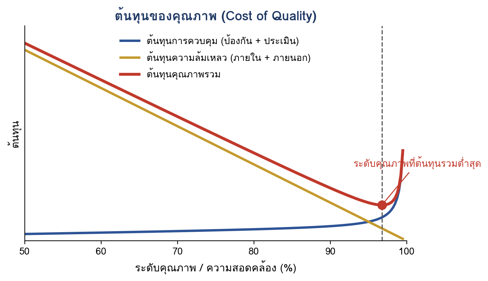
8.3 การควบคุมคุณภาพเชิงสถิติ
การควบคุมคุณภาพเชิงสถิติ (Statistical Process Control: SPC) ใช้วิธีการทางสถิติในการติดตามและควบคุมกระบวนการ โดยแยกความผันแปรออกเป็นสองประเภท คือ ความผันแปรตามธรรมชาติ (Common Cause) ที่เป็นส่วนหนึ่งของกระบวนการ และความผันแปรที่มีสาเหตุเฉพาะ (Assignable Cause) ที่ต้องค้นหาและแก้ไข
8.3.1 แผนภูมิควบคุม
แผนภูมิควบคุม (Control Chart) ใช้ติดตามว่ากระบวนการอยู่ในการควบคุมหรือไม่ โดยมีเส้นกึ่งกลาง (CL) ขีดจำกัดควบคุมบน (UCL) และขีดจำกัดควบคุมล่าง (LCL) สำหรับข้อมูลแบบต่อเนื่องนิยมใช้แผนภูมิค่าเฉลี่ย (X-bar Chart) คู่กับแผนภูมิพิสัย (R Chart) โดยอาศัยค่าคงที่ตามขนาดกลุ่มตัวอย่าง ดังตารางที่ 8.1
| ขนาดกลุ่ม (n) | A₂ | D₃ | D₄ | d₂ |
|---|---|---|---|---|
| 4 | 0.729 | 0 | 2.282 | 2.059 |
| 5 | 0.577 | 0 | 2.114 | 2.326 |
| 6 | 0.483 | 0 | 2.004 | 2.534 |
ขีดจำกัดควบคุมคำนวณได้จากสมการ
8.3.2 ความสามารถของกระบวนการ
ความสามารถของกระบวนการ (Process Capability) วัดว่ากระบวนการสามารถผลิตได้ตามข้อกำหนดของลูกค้าเพียงใด โดยใช้ดัชนี Cp ที่วัดความสัมพันธ์ระหว่างช่วงข้อกำหนดกับการกระจายของกระบวนการ และดัชนี Cpk ที่พิจารณาตำแหน่งของค่าเฉลี่ยเทียบกับข้อกำหนดด้วย ตามสมการ Cp = (USL − LSL) ÷ (6σ)
โดยทั่วไป ค่า Cp และ Cpk ที่มากกว่าหรือเท่ากับ 1.33 ถือว่ากระบวนการมีความสามารถดี หาก Cpk น้อยกว่า Cp มากแสดงว่ากระบวนการเบี่ยงเบนจากจุดกึ่งกลางข้อกำหนด
8.3.3 แผนภูมิควบคุมสัดส่วนของเสีย (p-Chart)
แผนภูมิควบคุมค่าเฉลี่ยและพิสัยในหัวข้อ 8.3.1 ใช้กับข้อมูลเชิงตัวแปรต่อเนื่อง (Variables) เช่น น้ำหนักหรือความยาว แต่หากข้อมูลเป็นเชิงคุณลักษณะ (Attributes) ที่ระบุเพียงว่าชิ้นงานผ่านหรือไม่ผ่านเกณฑ์ จะใช้แผนภูมิควบคุมสัดส่วนของเสีย (p-Chart) แทน โดยสุ่มตรวจกลุ่มตัวอย่างขนาด n หน่วยจำนวนหลายครั้ง แล้วคำนวณสัดส่วนของเสียในแต่ละกลุ่ม pᵢ = จำนวนหน่วยที่ไม่ผ่านเกณฑ์ ÷ n เส้นกึ่งกลางและขีดจำกัดควบคุมคำนวณจากสัดส่วนของเสียเฉลี่ยรวม p̄ ตามสมการ
8.3.4 แผนภูมิควบคุมจำนวนข้อบกพร่อง (c-Chart) และแนวทางการเลือกแผนภูมิ
แผนภูมิ p-Chart ควบคุมสัดส่วนของหน่วยที่ไม่ผ่านเกณฑ์ แต่ในหลายกรณีหนึ่งหน่วยตรวจอาจมีข้อบกพร่องได้หลายจุด เช่น ตำหนิบนผ้าทอหนึ่งผืน หรือรอยเชื่อมบกพร่องบนโครงชิ้นงานหนึ่งชิ้น กรณีเช่นนี้ใช้แผนภูมิ c-Chart ซึ่งควบคุมจำนวนข้อบกพร่องต่อหน่วยตรวจขนาดคงที่ บนพื้นฐานการแจกแจงปัวซงที่ค่าเฉลี่ยและความแปรปรวนเท่ากัน ขีดจำกัดควบคุมคำนวณจาก
เมื่อ c̄ คือจำนวนข้อบกพร่องเฉลี่ยต่อหน่วยตรวจ แนวทางการเลือกแผนภูมิควบคุมสรุปได้ดังนี้ ข้อมูลเชิงผันแปรที่วัดค่าต่อเนื่องได้ เช่น น้ำหนักหรือความยาว ใช้แผนภูมิค่าเฉลี่ยคู่กับแผนภูมิพิสัย ข้อมูลเชิงคุณลักษณะที่นับหน่วยดีหรือเสีย ใช้แผนภูมิ p-Chart ข้อมูลที่นับจำนวนข้อบกพร่องต่อหน่วยตรวจขนาดคงที่ ใช้แผนภูมิ c-Chart และหากขนาดหน่วยตรวจไม่คงที่ ใช้แผนภูมิ u-Chart ซึ่งควบคุมจำนวนข้อบกพร่องต่อหน่วยขนาดมาตรฐานแทน
แผนภูมิควบคุมข้างต้นมีรากฐานจากงานบุกเบิกของ Shewhart (1931) ที่แยกความผันแปรจากสาเหตุธรรมชาติออกจากสาเหตุพิเศษเป็นครั้งแรก และแนวคิดนี้ยังคงพัฒนาอย่างต่อเนื่อง โดย Woodall และ Montgomery (2014) ชี้ทิศทางการวิจัยปัจจุบันที่ขยายสู่การเฝ้าติดตามกระบวนการที่มีข้อมูลความถี่สูง ข้อมูลหลายตัวแปร และการประยุกต์นอกภาคการผลิต เช่น บริการสุขภาพ สะท้อนว่าการควบคุมกระบวนการเชิงสถิติเป็นสาขาที่ปรับตัวตามยุคข้อมูลขนาดใหญ่
8.4 เครื่องมือควบคุมคุณภาพ 7 ชนิด
เครื่องมือควบคุมคุณภาพ 7 ชนิด (Seven QC Tools) เป็นชุดเครื่องมือพื้นฐานที่ใช้รวบรวม วิเคราะห์ และนำเสนอข้อมูลคุณภาพ ได้แก่
- ใบตรวจสอบ (Check Sheet) สำหรับบันทึกและรวบรวมข้อมูลอย่างเป็นระบบ
- ฮิสโทแกรม (Histogram) แสดงการกระจายของข้อมูล
- แผนภูมิพาเรโต (Pareto Chart) จัดลำดับความสำคัญของปัญหา
- แผนภาพก้างปลา (Cause-and-Effect Diagram) วิเคราะห์สาเหตุของปัญหา
- แผนภาพการกระจาย (Scatter Diagram) แสดงความสัมพันธ์ระหว่างตัวแปร
- แผนภูมิควบคุม (Control Chart) ติดตามความผันแปรของกระบวนการ
- ผังการไหลและกราฟ (Flowchart/Graph) แสดงลำดับกระบวนการและแนวโน้มข้อมูล
แผนภาพก้างปลา ซึ่งเป็นหนึ่งในเครื่องมือที่ใช้บ่อยที่สุด ช่วยวิเคราะห์สาเหตุของปัญหาคุณภาพอย่างเป็นระบบโดยจำแนกตามปัจจัย 6 ด้าน (คน เครื่องจักร วัตถุดิบ วิธีการ การวัด และสิ่งแวดล้อม) ดังภาพที่ 8.4
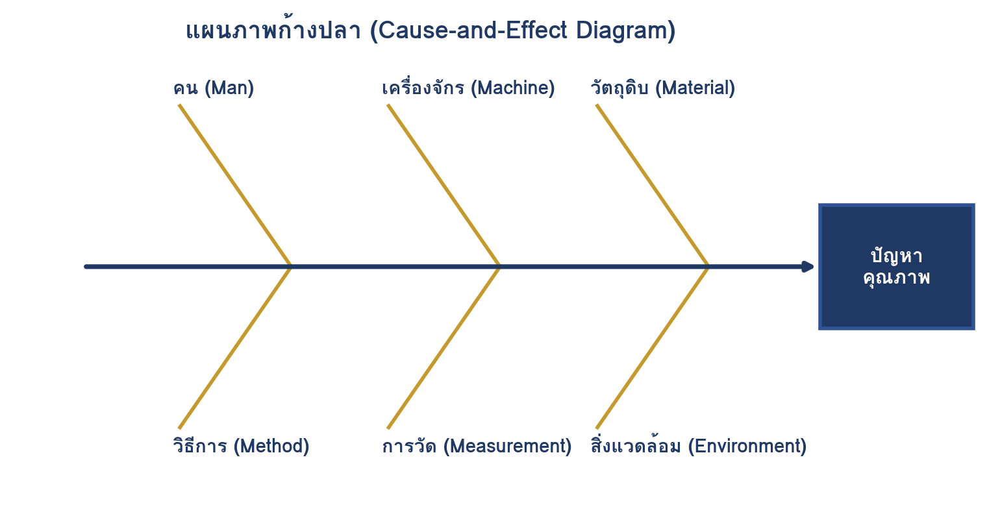
📎 กรณีศึกษา
8.5 มาตรฐานระบบบริหารคุณภาพ ISO 9001
ISO 9001 เป็นมาตรฐานสากลสำหรับระบบบริหารงานคุณภาพที่องค์กรทั่วโลกนำไปใช้ มาตรฐานฉบับปัจจุบันตั้งอยู่บนหลักการบริหารคุณภาพ 7 ประการ ได้แก่ การมุ่งเน้นลูกค้า ภาวะผู้นำ การมีส่วนร่วมของบุคลากร การบริหารเชิงกระบวนการ การปรับปรุง การตัดสินใจบนพื้นฐานหลักฐาน และการบริหารความสัมพันธ์ โดยใช้วงจรการบริหาร PDCA (วางแผน–ปฏิบัติ–ตรวจสอบ–ปรับปรุง) เป็นกลไกขับเคลื่อนการปรับปรุงอย่างต่อเนื่อง การได้รับการรับรอง ISO 9001 ช่วยสร้างความเชื่อมั่นแก่ลูกค้า ยกระดับกระบวนการภายใน และเป็นเงื่อนไขสำคัญในการเข้าสู่ตลาดและโซ่อุปทานระดับสากล
8.5.1 โครงสร้างข้อกำหนดของ ISO 9001
ข้อกำหนดของ ISO 9001 ฉบับปัจจุบันจัดโครงสร้างตามรูปแบบระดับสูง (High Level Structure) ที่ใช้ร่วมกับมาตรฐานระบบบริหารอื่นของ ISO ทำให้สามารถบูรณาการระบบบริหารหลายมาตรฐานเข้าด้วยกันได้ง่าย ประกอบด้วยข้อกำหนดหลัก 7 หมวด ดังตารางที่ 8.3
| ข้อกำหนด | หมวด | สาระสำคัญ |
|---|---|---|
| ข้อ 4 | บริบทองค์กร | ทำความเข้าใจองค์กร ผู้มีส่วนได้ส่วนเสีย และขอบเขตระบบบริหารคุณภาพ |
| ข้อ 5 | ภาวะผู้นำ | ผู้บริหารระดับสูงแสดงความมุ่งมั่น กำหนดนโยบายและบทบาทหน้าที่คุณภาพ |
| ข้อ 6 | การวางแผน | วิเคราะห์ความเสี่ยงและโอกาส กำหนดวัตถุประสงค์คุณภาพที่วัดผลได้ |
| ข้อ 7 | การสนับสนุน | จัดสรรทรัพยากร บุคลากร ความรู้ และเอกสารสารสนเทศที่จำเป็น |
| ข้อ 8 | การปฏิบัติการ | ควบคุมกระบวนการผลิต/บริการตั้งแต่รับคำสั่งซื้อจนถึงส่งมอบ |
| ข้อ 9 | การประเมินสมรรถนะ | ติดตาม วัดผล วิเคราะห์ข้อมูล และตรวจประเมินภายใน |
| ข้อ 10 | การปรับปรุง | จัดการข้อบกพร่อง ดำเนินการแก้ไข และปรับปรุงอย่างต่อเนื่อง |
ข้อกำหนดทั้งเจ็ดหมวดเชื่อมโยงกันด้วยวงจร PDCA ที่กล่าวถึงข้างต้น โดยข้อ 4-6 สอดคล้องกับขั้นวางแผน (Plan) ข้อ 7-8 สอดคล้องกับขั้นปฏิบัติ (Do) ข้อ 9 สอดคล้องกับขั้นตรวจสอบ (Check) และข้อ 10 สอดคล้องกับขั้นปรับปรุง (Act)
8.5.2 ระบบเอกสารคุณภาพเชิงลำดับขั้น
การนำ ISO 9001 ไปปฏิบัติต้องอาศัยระบบเอกสารคุณภาพที่จัดลำดับขั้นชัดเจน เพื่อให้บุคลากรทุกระดับเข้าใจและปฏิบัติตามได้อย่างสอดคล้องกัน โดยทั่วไปจัดเป็นสี่ระดับจากบนลงล่าง ได้แก่ คู่มือคุณภาพ (Quality Manual) ที่กำหนดนโยบายและภาพรวมของระบบทั้งองค์กร ระเบียบปฏิบัติ (Procedure) ที่กำหนดขั้นตอนการดำเนินงานของแต่ละกระบวนการ วิธีปฏิบัติงาน (Work Instruction) ที่ระบุรายละเอียดการทำงานเฉพาะจุดหรือเฉพาะเครื่องจักร และบันทึกคุณภาพ (Quality Record) ที่เป็นหลักฐานแสดงผลการดำเนินงานจริงเพื่อการตรวจสอบย้อนกลับ
8.5.3 การประยุกต์ ISO 9001 ร่วมกับมาตรฐานสากลอื่นในวิสาหกิจเกษตรแปรรูป
สำหรับวิสาหกิจแปรรูปเกษตรและอาหารในภาคตะวันออกเฉียงเหนือ การขอรับรอง ISO 9001 มักดำเนินการร่วมกับมาตรฐานเฉพาะด้านอาหาร เช่น หลักเกณฑ์วิธีการที่ดีในการผลิต (Good Manufacturing Practice: GMP) และระบบวิเคราะห์อันตรายและจุดวิกฤตที่ต้องควบคุม (Hazard Analysis and Critical Control Points: HACCP) เนื่องจากทั้งสามมาตรฐานมีโครงสร้างการบริหารเชิงกระบวนการที่สอดคล้องกัน วิสาหกิจที่มีระบบบริหารคุณภาพตาม ISO 9001 เป็นพื้นฐานจะสามารถต่อยอดสู่ GMP และ HACCP ได้ง่ายขึ้น เนื่องจากมีระบบเอกสาร การควบคุมกระบวนการ และการตรวจประเมินภายในที่พร้อมอยู่แล้ว การได้รับการรับรองมาตรฐานเหล่านี้ร่วมกันยังเป็นเงื่อนไขสำคัญในการส่งออกผลิตภัณฑ์เกษตรแปรรูปสู่ตลาดในอนุภูมิภาคลุ่มน้ำโขงและตลาดสากล
วิธีทำ ต้นทุนคุณภาพโดยรวมลดลงจาก 280,000 บาทต่อปี เป็น 180,000 บาทต่อปี หรือลดลง 100,000 บาท (ร้อยละ 35.7) แม้ต้นทุนการป้องกันและการตรวจสอบเพิ่มขึ้นรวม 50,000 บาท แต่ต้นทุนความล้มเหลวทั้งภายในและภายนอกลดลงรวม 150,000 บาท ซึ่งมากกว่าต้นทุนที่เพิ่มขึ้น ตอบ การลงทุนด้านการป้องกันและการตรวจสอบเพิ่มขึ้นส่งผลให้ต้นทุนความล้มเหลวลดลงมากกว่าหลายเท่า สอดคล้องกับหลักการต้นทุนคุณภาพที่กล่าวถึงในหัวข้อ 8.2 ว่าการลงทุนป้องกันล่วงหน้ามีความคุ้มค่ากว่าการแก้ไขความล้มเหลวภายหลัง
อย่างไรก็ตาม ผลการรับรอง ISO 9001 ต่อสมรรถนะขององค์กรในงานวิจัยเชิงประจักษ์ยังมีความหลากหลาย งานวิจัยในวิสาหกิจขนาดกลางและขนาดเล็กบางชิ้นพบว่าการรับรองมาตรฐานเพียงอย่างเดียวไม่ได้ส่งผลโดยตรงต่อสมรรถนะทางธุรกิจอย่างมีนัยสำคัญทางสถิติ แต่พบว่าวิสาหกิจที่ได้รับการรับรองมีแนวปฏิบัติด้านคุณภาพที่ดีกว่าวิสาหกิจที่ไม่ได้รับการรับรองอย่างชัดเจน และแรงจูงใจภายใน (ต้องการปรับปรุงกระบวนการจริง) มีความสัมพันธ์กับสมรรถนะที่ดีกว่าแรงจูงใจภายนอก (ถูกบังคับโดยคู่ค้า) (İlkay & Aslan, 2012) ข้อค้นพบนี้ชี้ให้ผู้บริหารตระหนักว่าการรับรองมาตรฐานเพียงเพื่อให้ได้ใบรับรองโดยไม่ปรับเปลี่ยนวัฒนธรรมคุณภาพภายในอย่างจริงจังอาจไม่ก่อให้เกิดประโยชน์เท่าที่ควร
กรณีศึกษา
📎 กรณีศึกษา
บทสรุป
คุณภาพเป็นมิติการแข่งขันสำคัญที่ครอบคลุมหลายด้านและตอบสนองความคาดหวังของลูกค้า การจัดการคุณภาพโดยรวม (TQM) เป็นปรัชญาที่มุ่งสร้างคุณภาพในทุกกระบวนการผ่านการมุ่งเน้นลูกค้า การปรับปรุงอย่างต่อเนื่อง และการมีส่วนร่วมของทุกคน ต้นทุนของคุณภาพแบ่งเป็นต้นทุนการควบคุมและต้นทุนความล้มเหลวซึ่งมีลักษณะแลกได้แลกเสียกัน
การควบคุมคุณภาพเชิงสถิติใช้แผนภูมิควบคุมในการติดตามว่ากระบวนการอยู่ในการควบคุมหรือไม่ และใช้ดัชนีความสามารถของกระบวนการ (Cp และ Cpk) ในการประเมินว่ากระบวนการผลิตได้ตามข้อกำหนดเพียงใด โดย Cp สะท้อนการกระจายและ Cpk สะท้อนทั้งการกระจายและตำแหน่งของค่าเฉลี่ย เครื่องมือควบคุมคุณภาพ 7 ชนิดเป็นเครื่องมือพื้นฐานในการวิเคราะห์และปรับปรุงคุณภาพ ขณะที่มาตรฐาน ISO 9001 ให้กรอบระบบบริหารคุณภาพที่อาศัยวงจร PDCA เพื่อการปรับปรุงอย่างต่อเนื่อง
การพัฒนาคุณภาพในบริบทสินค้าเกษตรของวิสาหกิจในภาคตะวันออกเฉียงเหนือปรากฏในงานของ คลอเคลีย วจนะวิชากร และปานจิต ศรีสวัสดิ์ (2557) ที่ศึกษาการ พัฒนาคุณภาพยางแผ่นควบคู่กับการจัดการระบบโลจิสติกส์ยางพาราในอำเภอบุณฑริก จังหวัดอุบลราชธานี ซึ่งสะท้อนว่าการกำหนดมาตรฐานคุณภาพและการควบคุม กระบวนการอย่างเป็นระบบช่วยยกระดับคุณภาพของผลิตภัณฑ์เกษตรให้สอดคล้องกับ
ความต้องการของตลาดได้ สอดคล้องกับงานของ คลอเคลีย วจนะวิชากร (2567) ที่พบว่า ความไม่แน่นอนของคุณภาพและปริมาณผลผลิตเป็นปัญหาสำคัญในห่วงโซ่อุปทานพริกของวิสาหกิจชุมชน และเสนอให้กำหนดเป้าหมายคุณภาพตามความต้องการของลูกค้าพร้อม ควบคุมคุณภาพก่อนส่งมอบซึ่งเป็นการประยุกต์หลักการจัดการคุณภาพในบริบทของ สินค้าเกษตร
คำถามทบทวนและแบบฝึกหัด
ก. คำถามทบทวน
- มิติของคุณภาพมีอะไรบ้าง และหลักการสำคัญของ TQM คืออะไร
- ต้นทุนของคุณภาพแบ่งเป็นกี่ประเภท และมีความสัมพันธ์กันอย่างไร
- ความผันแปรตามธรรมชาติและความผันแปรที่มีสาเหตุเฉพาะต่างกันอย่างไร
- Cp และ Cpk แตกต่างกันอย่างไร และค่าที่เหมาะสมควรเป็นเท่าใด
- เครื่องมือควบคุมคุณภาพ 7 ชนิดมีอะไรบ้าง และ ISO 9001 ตั้งอยู่บนหลักการใด
ข. แบบฝึกหัดเชิงคำนวณ
- กลุ่มตัวอย่าง 4 กลุ่ม (n = 5) มีค่าเฉลี่ยรวม 200 และพิสัยเฉลี่ย 6 จงคำนวณขีดจำกัดควบคุมของแผนภูมิค่าเฉลี่ย (A₂ = 0.577)
- จากข้อ 1 จงคำนวณขีดจำกัดควบคุมของแผนภูมิพิสัย (D₃ = 0, D₄ = 2.114)
- กระบวนการมีค่าเฉลี่ย 100, σ = 2, ข้อกำหนด LSL = 94, USL = 106 จงคำนวณ Cp และ Cpk
- จากการตรวจนับตำหนิบนเสื่อกกทอมือขนาดมาตรฐาน 8 ผืน พบตำหนิ 2, 4, 3, 5, 1, 6, 3 และ 4 จุด จงคำนวณขีดจำกัดควบคุมของแผนภูมิ c-Chart และสรุปว่ากระบวนการอยู่ในการควบคุมทางสถิติหรือไม่
เอกสารอ้างอิงประจำบท
İlkay, M. S., & Aslan, E. (2012). The effect of the ISO 9001 quality management system on the performance of SMEs. International Journal of Quality & Reliability Management, 29(7), 753-778.
Besterfield, D. H. (2013). Quality improvement (9th ed.). Pearson.
Evans, J. R., & Lindsay, W. M. (2020). Managing for quality and performance excellence (11th ed.). Cengage Learning.
Garvin, D. A. (1987). Competing on the eight dimensions of quality. Harvard Business Review, 65(6), 101–109.
Heizer, J., Render, B., & Munson, C. (2020). Operations management: Sustainability and supply chain management (13th ed.). Pearson.
Kano, N., Seraku, N., Takahashi, F., & Tsuji, S. (1984). Attractive quality and must-be quality. Journal of the Japanese Society for Quality Control, 14(2), 39-48.
Krajewski, L. J., Malhotra, M. K., & Ritzman, L. P. (2022). Operations management: Processes and supply chains (13th ed.). Pearson.
Montgomery, D. C. (2020). Introduction to statistical quality control (8th ed.). John Wiley & Sons.
Parasuraman, A., Zeithaml, V. A., & Berry, L. L. (1988). SERVQUAL: A multiple-item scale for measuring consumer perceptions of service quality. Journal of Retailing, 64(1), 12-40.
Shewhart, W. A. (1931). Economic control of quality of manufactured product. D. Van Nostrand Company.
Stevenson, W. J. (2021). Operations management (14th ed.). McGraw-Hill Education.
Woodall, W. H., & Montgomery, D. C. (2014). Some current directions in the theory and application of statistical process monitoring. Journal of Quality Technology, 46(1), 78-94.
คลอเคลีย วจนะวิชากร และปานจิต ศรีสวัสดิ์ (2557). การศึกษาระบบโลจิสติกส์ยางพาราและการพัฒนาคุณภาพยางแผ่น: กรณีศึกษา อำเภอบุณฑริก จังหวัดอุบลราชธานี. วารสารวิศวกรรมศาสตร์ มหาวิทยาลัยอุบลราชธานี, 7(2), 1–13.
คลอเคลีย วจนะวิชากร ขจิตา สมเนตร และกนกกาญจน์ ศรีสุรินทร์ (2567). การศึกษาห่วงโซ่อุปทานวิสาหกิจชุมชนแปลงใหญ่พริกตำบลหัวเรือ จังหวัดอุบลราชธานี. วารสารวิศวกรรมศาสตร์และนวัตกรรม, 17(1), 163–178.
การผลิตแบบลีนและการปรับปรุงกระบวนการ
🎯 วัตถุประสงค์การเรียนรู้ประจำบท
เมื่อศึกษาบทนี้จบแล้ว ผู้เรียนสามารถ
- อธิบายระบบการผลิตแบบโตโยต้าและแนวคิดลีนได้
- จำแนกความสูญเปล่า 7+1 ประการได้
- คำนวณ Takt Time และจำนวนบัตรคัมบังในระบบทันเวลาพอดีได้
- วิเคราะห์แผนผังสายธารคุณค่าและคำนวณประสิทธิภาพรอบกระบวนการได้
- อธิบายการบูรณาการลีนกับซิกซ์ซิกมาและคำนวณระดับซิกมาได้
การผลิตแบบลีน (Lean Production) เป็นปรัชญาและชุดเครื่องมือที่มุ่งสร้างคุณค่าให้ลูกค้าโดยกำจัดความสูญเปล่าในทุกขั้นตอน แนวคิดนี้พัฒนามาจากระบบการผลิตแบบโตโยต้าและกลายเป็นรากฐานสำคัญของการเพิ่มผลิตภาพในยุคปัจจุบัน ดังที่กล่าวถึงในบทที่ 2 ว่าด้วยการสะสมสมรรถนะ บทนี้นำเสนอระบบการผลิตแบบโตโยต้า ความสูญเปล่า 7+1 ประการ ระบบทันเวลาพอดีและคัมบัง การปรับปรุงอย่างต่อเนื่องและแผนผังสายธารคุณค่า ตลอดจนการบูรณาการลีนกับซิกซ์ซิกมา
9.1 ระบบการผลิตแบบโตโยต้าและแนวคิดลีน
ระบบการผลิตแบบโตโยต้า (Toyota Production System: TPS) เป็นต้นแบบของการผลิตแบบลีน มักอธิบายด้วยภาพบ้าน TPS ดังภาพที่ 9.1 ซึ่งมีหลังคาเป็นเป้าหมายด้านคุณภาพ ต้นทุน และเวลานำ มีเสาสองต้นคือระบบทันเวลาพอดี (Just-in-Time) และจิโดกะ (Jidoka) ที่หมายถึงการสร้างคุณภาพ ณ แหล่งและการหยุดเมื่อพบความผิดปกติ โดยมีฐานรากเป็นการปรับเรียบการผลิต งานมาตรฐาน และการปรับปรุงอย่างต่อเนื่อง และมีคนเป็นศูนย์กลาง
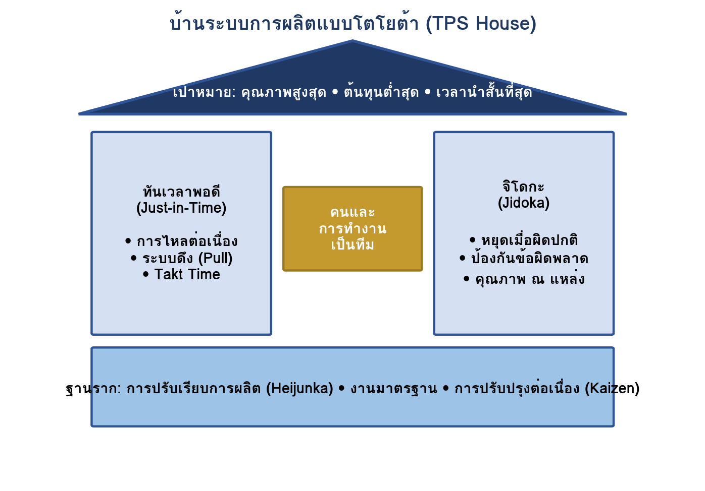
หลักการสำคัญของลีนคือการนิยามคุณค่าจากมุมมองลูกค้า การระบุสายธารคุณค่า การสร้างการไหลที่ต่อเนื่อง การใช้ระบบดึง และการมุ่งสู่ความสมบูรณ์แบบผ่านการปรับปรุงอย่างไม่หยุดยั้ง
อนึ่ง คำว่า ลีน ถูกบัญญัติขึ้นครั้งแรกโดย Krafcik (1988) จากผลการศึกษาเปรียบเทียบสมรรถนะโรงงานประกอบรถยนต์ทั่วโลก ซึ่งพบว่าระบบการผลิตแบบโตโยต้าใช้ทรัพยากรทุกด้านน้อยกว่าระบบการผลิตคราวละมาก แต่ให้ทั้งผลิตภาพและคุณภาพที่สูงกว่า จึงเรียกระบบลักษณะนี้ว่าการผลิตแบบลีน
9.2 ความสูญเปล่า 7+1 ประการ
หัวใจของลีนคือการกำจัดความสูญเปล่า (Muda) ซึ่งหมายถึงกิจกรรมที่ใช้ทรัพยากรแต่ไม่เพิ่มคุณค่าให้ลูกค้า เดิมจำแนกเป็น 7 ประการ และเพิ่มประการที่ 8 ในภายหลัง รวมเป็น 7+1 ประการ ดังภาพที่ 9.2
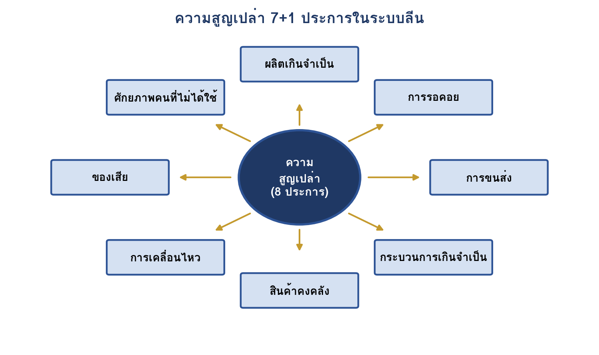
ความสูญเปล่าทั้งแปด ได้แก่ การผลิตเกินจำเป็น การรอคอย การขนส่งที่ไม่จำเป็น กระบวนการที่เกินจำเป็น สินค้าคงคลังส่วนเกิน การเคลื่อนไหวที่ไม่จำเป็น ของเสียและการแก้ไขงาน และศักยภาพของบุคลากรที่ไม่ได้ถูกนำมาใช้ การลดความสูญเปล่าเหล่านี้ช่วยลดต้นทุนและเวลานำพร้อมเพิ่มคุณภาพไปพร้อมกัน
📎 กรณีศึกษา
9.3 ระบบทันเวลาพอดีและระบบคัมบัง
ระบบทันเวลาพอดี (Just-in-Time: JIT) มุ่งผลิตและส่งมอบสิ่งที่ต้องการ ในปริมาณที่ต้องการ ณ เวลาที่ต้องการ เพื่อลดสินค้าคงคลังและความสูญเปล่า โดยใช้ระบบดึง (Pull System) ที่กระบวนการปลายน้ำเป็นผู้ส่งสัญญาณดึงวัสดุจากต้นน้ำผ่านบัตรคัมบัง (Kanban) ดังภาพที่ 9.3
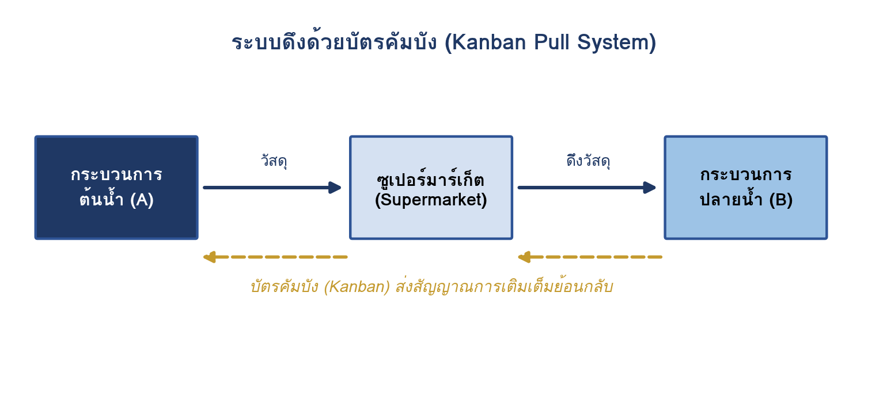
จังหวะการผลิตในระบบลีนกำหนดด้วยเวลาแท็กต์ (Takt Time) ซึ่งเป็นอัตราที่ต้องผลิตให้ทันความต้องการของลูกค้า และจำนวนบัตรคัมบังที่ต้องใช้คำนวณได้จากความต้องการ เวลานำ และขนาดภาชนะ ตามสมการ
9.3.1 ประสิทธิผลโดยรวมของเครื่องจักร (Overall Equipment Effectiveness: OEE)
OEE เป็นดัชนีที่ใช้ประเมินประสิทธิผลของเครื่องจักรหรือสายการผลิตอย่างครอบคลุม โดยรวมความสูญเปล่าสามด้านหลักไว้ในตัวชี้วัดเดียว ได้แก่ ความพร้อมใช้งาน (Availability) ที่สะท้อนเวลาหยุดเครื่องจากการเสีย การปรับตั้ง หรือการเปลี่ยนรุ่นผลิต สมรรถนะ (Performance) ที่สะท้อนความเร็วในการผลิตเทียบกับความเร็วตามมาตรฐาน และคุณภาพ (Quality) ที่สะท้อนสัดส่วนชิ้นงานที่ผลิตได้ดีตั้งแต่ครั้งแรก ตามสมการ
สมรรถนะ = (จำนวนที่ผลิตได้ทั้งหมด × เวลารอบมาตรฐาน) ÷ เวลาเดินเครื่องจริง
คุณภาพ = จำนวนชิ้นงานดี ÷ จำนวนที่ผลิตได้ทั้งหมด
หลักฐานเชิงประจักษ์ขนาดใหญ่ของ Shah และ Ward (2003) ยืนยันว่าการนำแนวปฏิบัติลีนไปใช้เป็นชุด ทั้งระบบทันเวลาพอดี การบำรุงรักษาทวีผล การจัดการคุณภาพโดยรวม และการบริหารทรัพยากรมนุษย์ ให้ผลต่อสมรรถนะการดำเนินงานสูงกว่าการเลือกใช้เครื่องมือแบบแยกส่วน ขณะที่ Hines, Holweg และ Rich (2004) ชี้ว่าแนวคิดลีนได้วิวัฒน์จากเทคนิคระดับหน้างานสู่ปรัชญาการสร้างคุณค่าระดับโซ่อุปทาน การประยุกต์ลีนจึงควรพิจารณาทั้งระบบมิใช่เพียงกิจกรรมภายในโรงงาน
9.4 การปรับปรุงอย่างต่อเนื่องและแผนผังสายธารคุณค่า
การปรับปรุงอย่างต่อเนื่อง (Kaizen) เป็นการปรับปรุงทีละเล็กทีละน้อยอย่างสม่ำเสมอโดยการมีส่วนร่วมของพนักงานทุกคน ส่วนแผนผังสายธารคุณค่า (Value Stream Mapping: VSM) เป็นเครื่องมือที่ใช้ทำให้เห็นภาพการไหลของวัสดุและสารสนเทศตลอดกระบวนการ พร้อมแยกแยะเวลาที่เพิ่มคุณค่า (Value-Added) ออกจากเวลาที่ไม่เพิ่มคุณค่า เพื่อระบุจุดที่ควรปรับปรุง ดัชนีสำคัญคือประสิทธิภาพรอบกระบวนการ (Process Cycle Efficiency: PCE) ตามสมการ
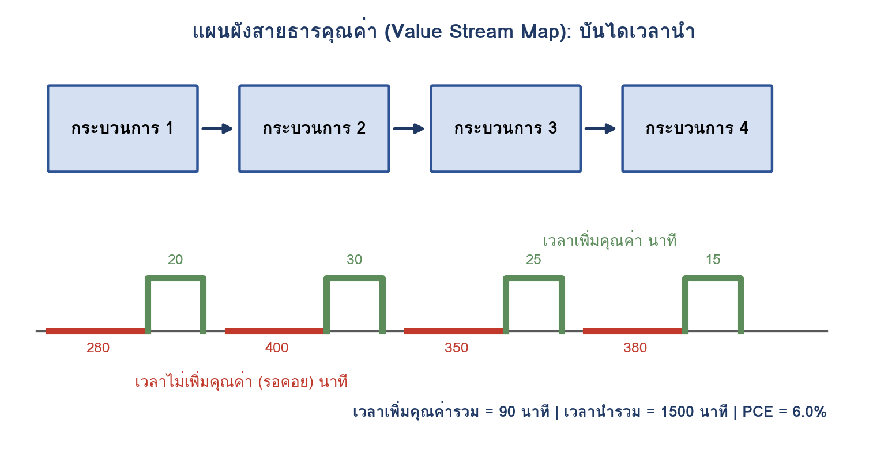
แผนผังสายธารคุณค่าไม่ได้ใช้เพียงบันทึกสถานะปัจจุบัน (Current State) แต่ยังใช้ออกแบบสถานะอนาคต (Future State) ที่กำจัดความสูญเปล่าลง เพื่อเป็นเป้าหมายของการปรับปรุง ดังตัวอย่างที่ 9.2 (ต่อ)
9.5.1 การประยุกต์ 5ส และโป๊ะโยเกะเพื่อสนับสนุนการผลิตแบบลีน
5ส (สะสาง สะดวก สะอาด สร้างมาตรฐาน และสร้างวินัย) เป็นกิจกรรมพื้นฐานที่จัดระเบียบพื้นที่ทำงานให้เป็นระบบ ลดเวลาค้นหาสิ่งของและลดความเสี่ยงด้านความปลอดภัย ซึ่งเป็นเงื่อนไขจำเป็นก่อนนำเครื่องมือลีนอื่น ๆ เช่น ระบบดึงหรือการจัดสมดุลสายการผลิตไปใช้ให้ได้ผล ส่วนโป๊ะโยเกะ (Poka-yoke) คือกลไกป้องกันความผิดพลาดที่ออกแบบให้ชิ้นงานหรือขั้นตอนการทำงานผิดที่ผิดทางไม่สามารถเกิดขึ้นได้ตั้งแต่แรก เช่น การใช้อุปกรณ์นำทาง (Jig) ที่รับได้เฉพาะชิ้นงานที่ถูกต้อง เซนเซอร์ตรวจจับความผิดปกติที่หยุดสายการผลิตโดยอัตโนมัติ หรือการใช้ภาชนะแยกสีตามชนิดวัตถุดิบเพื่อป้องกันการหยิบผิดในสายการบรรจุอาหาร แนวคิดทั้งสองนี้เชื่อมโยงกับหลักจิโดกะที่กล่าวถึงในหัวข้อ 9.1 ซึ่งมุ่งสร้างคุณภาพจากแหล่งกำเนิดและหยุดกระบวนการทันทีเมื่อพบความผิดปกติ
9.5 การบูรณาการลีนกับซิกซ์ซิกมา
ซิกซ์ซิกมา (Six Sigma) เป็นวิธีการปรับปรุงคุณภาพที่มุ่งลดความผันแปรและข้อบกพร่องของกระบวนการให้เหลือน้อยมาก โดยอาศัยข้อมูลและสถิติผ่านกระบวนการ DMAIC คือ การนิยามปัญหา (Define) การวัด (Measure) การวิเคราะห์ (Analyze) การปรับปรุง (Improve) และการควบคุม (Control) เมื่อนำมาบูรณาการกับลีนเป็นลีนซิกซ์ซิกมา (Lean Six Sigma) จะได้ทั้งการกำจัดความสูญเปล่าจากลีนและการลดความผันแปรจากซิกซ์ซิกมาไปพร้อมกัน
ระดับสมรรถนะของกระบวนการวัดด้วยจำนวนข้อบกพร่องต่อล้านโอกาส (Defects Per Million Opportunities: DPMO) ตามสมการ
แนวคิดการบูรณาการลีนกับซิกซ์ซิกมาที่กล่าวถึงในหัวข้อนี้มีพัฒนาการมาจากการผสานสองแนวคิดที่เดิมพัฒนาแยกจากกัน คือระบบการผลิตแบบโตโยต้าที่มุ่งลดความสูญเปล่า และซิกซ์ซิกมาที่มุ่งลดความผันแปรของกระบวนการด้วยเครื่องมือทางสถิติ งานทบทวนวิวัฒนาการของแนวคิดนี้ชี้ว่าการรวมสองแนวคิดเข้าด้วยกันช่วยแก้ข้อจำกัดของแต่ละแนวคิดเมื่อใช้เดี่ยว กล่าวคือลีนเพียงอย่างเดียวอาจลดความสูญเปล่าได้แต่ไม่ได้ควบคุมความผันแปรของกระบวนการอย่างเป็นระบบ ขณะที่ซิกซ์ซิกมาเพียงอย่างเดียวอาจลดความผันแปรได้แต่ไม่ได้ให้ความสำคัญกับความเร็วของกระบวนการเท่ากับลีน (Pepper & Spedding, 2010)
กรณีศึกษา
📎 กรณีศึกษา
บทสรุป
การผลิตแบบลีนมีรากฐานจากระบบการผลิตแบบโตโยต้าที่มุ่งสร้างคุณค่าให้ลูกค้าและกำจัดความสูญเปล่า 7+1 ประการ โดยอาศัยเสาหลักคือระบบทันเวลาพอดีและจิโดกะ ระบบทันเวลาพอดีใช้ระบบดึงด้วยบัตรคัมบัง โดยมีเวลาแท็กต์เป็นตัวกำหนดจังหวะการผลิตให้สอดคล้องกับความต้องการของลูกค้า
การปรับปรุงอย่างต่อเนื่องและแผนผังสายธารคุณค่าช่วยให้องค์กรมองเห็นและลดเวลาที่ไม่เพิ่มคุณค่า โดยใช้ประสิทธิภาพรอบกระบวนการเป็นดัชนีชี้วัด ขณะที่การบูรณาการลีนกับซิกซ์ซิกมาช่วยให้ลดทั้งความสูญเปล่าและความผันแปรไปพร้อมกัน โดยวัดสมรรถนะด้วย DPMO และระดับซิกมา แนวคิดเหล่านี้สนับสนุนการเพิ่มผลิตภาพและความสามารถในการแข่งขันที่กล่าวถึงตลอดทั้งตำรา
การกำจัดความสูญเปล่าตามแนวคิดลีนสามารถประยุกต์ได้แม้ในวิสาหกิจชุมชน
ขนาดเล็ก ดังที่ คลอเคลีย วจนะวิชากร (2563) ใช้เทคนิคการปรับปรุงงาน (ECRS) ร่วมกับ การศึกษาการทำงานเพื่อลดความสูญเปล่าในกระบวนการผลิตไม้กวาดทางมะพร้าวของ
วิสาหกิจชุมชนในจังหวัดอุบลราชธานี เช่นเดียวกับงานของ คลอเคลีย วจนะวิชากร (2565) ที่ประยุกต์ใช้หลัก ECRS และการวิเคราะห์ความสูญเปล่า 7 ประการเพื่อเพิ่มประสิทธิภาพ กระบวนการทอผ้าไหมกาบบัว และงานของ วจนะวิชากร ศรีสวัสดิ์ และทิพย์โพธิ์ (2558) ที่ใช้แผนผังสายธารคุณค่า (VSM) ร่วมกับการวิเคราะห์ห่วงโซ่คุณค่าและกิจกรรมไคเซ็น ในการลดเวลาที่ไม่เพิ่มคุณค่าของโซ่อุปทานหวดนึ่งข้าวอัตโนมัติ ผลงานเหล่านี้แสดงให้ เห็นว่า การระบุและลดกิจกรรมที่ไม่เพิ่มคุณค่าในกระบวนการผลิต ช่วยเพิ่มผลิตภาพและ ลดต้นทุนได้จริง สอดคล้องกับหลักการของการผลิตแบบลีนที่นำเสนอในบทนี้
คำถามทบทวนและแบบฝึกหัด
ก. คำถามทบทวน
- องค์ประกอบของบ้านระบบการผลิตแบบโตโยต้ามีอะไรบ้าง
- ความสูญเปล่า 7+1 ประการมีอะไรบ้าง ยกตัวอย่างประกอบ
- ระบบดึงและระบบผลักต่างกันอย่างไร และบัตรคัมบังทำหน้าที่อะไร
- ประสิทธิภาพรอบกระบวนการบอกอะไรเกี่ยวกับกระบวนการ
- ลีนและซิกซ์ซิกมาเสริมกันอย่างไรในแนวคิดลีนซิกซ์ซิกมา
ข. แบบฝึกหัดเชิงคำนวณ
- เวลาทำงานสุทธิ 450 นาที/วัน ความต้องการ 900 หน่วย/วัน จงคำนวณ
เวลา Takt Time
- ความต้องการ 600 หน่วย/วัน เวลานำ 0.5 วัน ขนาดภาชนะ 25 หน่วย ปัจจัยเผื่อ 0.2 จงคำนวณจำนวนบัตรคัมบัง
- กระบวนการมีเวลาเพิ่มคุณค่า 48 นาที เวลารอคอย 1,152 นาที จงคำนวณประสิทธิภาพรอบกระบวนการ และคำนวณ DPMO หากตรวจ 400 หน่วย โอกาส 2 จุด/หน่วย พบข้อบกพร่อง 8 จุด
เอกสารอ้างอิงประจำบท
Pepper, M. P. J., & Spedding, T. A. (2010). The evolution of lean Six Sigma. International Journal of Quality & Reliability Management, 27(2), 138-155.
George, M. L. (2002). Lean Six Sigma: Combining Six Sigma quality with lean speed. McGraw-Hill.
Heizer, J., Render, B., & Munson, C. (2020). Operations management: Sustainability and supply chain management (13th ed.). Pearson.
Hines, P., Holweg, M., & Rich, N. (2004). Learning to evolve: A review of contemporary lean thinking. International Journal of Operations & Production Management, 24(10), 994-1011.
Krafcik, J. F. (1988). Triumph of the lean production system. Sloan Management Review, 30(1), 41-52.
Liker, J. K. (2021). The Toyota way (2nd ed.). McGraw-Hill Education.
Ohno, T. (1988). Toyota production system: Beyond large-scale production. Productivity Press.
Rother, M., & Shook, J. (2003). Learning to see: Value stream mapping to add value and eliminate muda. Lean Enterprise Institute.
Shah, R., & Ward, P. T. (2003). Lean manufacturing: Context, practice bundles, and performance. Journal of Operations Management, 21(2), 129-149.
Stevenson, W. J. (2021). Operations management (14th ed.). McGraw-Hill Education.
คลอเคลีย วจนะวิชากร. (2563). การลดความสูญเปล่าเพื่อเพิ่มประสิทธิภาพกระบวนการ ผลิตไม้กวาดทางมะพร้าว กรณีศึกษาวิสาหกิจชุมชนบ้านบุ่งหวาย จังหวัดอุบลราชธานี. วารสารวิชาการ วิศวกรรมศาสตร์ ม.อบ., 13(1), 141–152.
คลอเคลีย วจนะวิชากร. (2565). การลดความสูญเปล่าเพื่อเพิ่มประสิทธิภาพกระบวนการ ทอผ้าไหมกาบบัว: กรณีศึกษาวิสาหกิจชุมชนบ้านปะอาว จังหวัดอุบลราชธานี. วารสารวิศวกรรมศาสตร์และนวัตกรรม, 15(1), 89–101.
คลอเคลีย วจนะวิชากร ปานจิต ศรีสวัสดิ์ และวรัญญู ทิพย์โพธิ์. (2558). การประยุกต์ใช้แผนผังสายธารคุณค่าในการเพิ่มประสิทธิภาพการจัดการโลจิสติกส์และโซ่อุปทานหวดนึ่งข้าวอัตโนมัติในจังหวัดอุบลราชธานี. วารสารวิชาการ วิศวกรรมศาสตร์ ม.อบ., 8(2), 1–13.
การบูรณาการการดำเนินงานในบริบทโซ่อุปทาน
🎯 วัตถุประสงค์การเรียนรู้ประจำบท
เมื่อศึกษาบทนี้จบแล้ว ผู้เรียนสามารถ
- เชื่อมโยงการตัดสินใจด้านการดำเนินงานตลอดโซ่อุปทานได้
- บูรณาการเครื่องมือการดำเนินงานจากทุกบทเข้ากับกรณีศึกษาจริงได้
- วิเคราะห์โอกาสและความท้าทายของวิสาหกิจในอนุภูมิภาคลุ่มน้ำโขงได้
- อธิบายการประยุกต์เครื่องมือดิจิทัลในการจัดการการดำเนินงานได้
- ออกแบบและดำเนินโครงงานบูรณาการการดำเนินงานเชิงประยุกต์ได้
ตลอดเก้าบทที่ผ่านมา ตำราเล่มนี้ได้นำเสนอองค์ความรู้ด้านการจัดการการดำเนินงานอย่างเป็นลำดับ ตั้งแต่แนวคิดพื้นฐานและกลยุทธ์ การออกแบบระบบ การวางแผนและควบคุม จนถึงการจัดการคุณภาพและการปรับปรุง บทสุดท้ายนี้มีบทบาทสำคัญในการสังเคราะห์องค์ความรู้ทั้งหมดเข้าด้วยกัน โดยแสดงให้เห็นว่าการตัดสินใจด้านการดำเนินงานแต่ละด้านมิได้แยกขาดจากกัน แต่เชื่อมโยงกันเป็นระบบตลอดโซ่อุปทาน ผู้เขียนได้บูรณาการเครื่องมือและเทคนิคจากทุกบทเข้ากับบริบทอุตสาหกรรมในภาคตะวันออกเฉียงเหนือของประเทศไทย เพื่อให้ผู้เรียนเห็นการประยุกต์ใช้ในสถานการณ์จริงและสามารถต่อยอดสู่การปฏิบัติได้
10.1 การเชื่อมโยงการตัดสินใจด้านการดำเนินงานตลอดโซ่อุปทาน
การจัดการการดำเนินงานที่มีประสิทธิผลต้องอาศัยความสอดคล้องของการตัดสินใจในทุกระดับและทุกขั้นตอน โครงสร้างของตำราเล่มนี้สะท้อนความเชื่อมโยงดังกล่าวเป็นสี่ส่วนที่เชื่อมต่อกันจากกลยุทธ์ลงสู่การปฏิบัติ พร้อมกลไกข้อมูลย้อนกลับเพื่อการปรับปรุงอย่างต่อเนื่อง ดังภาพที่ 10.1
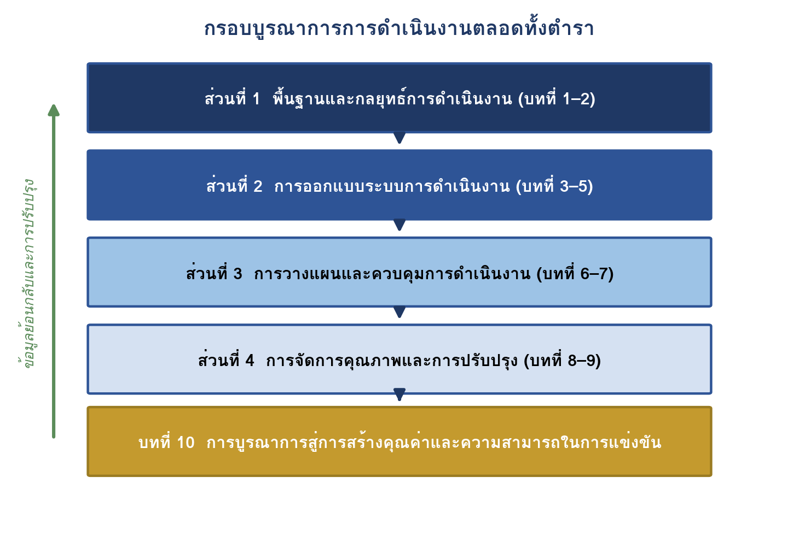
ส่วนที่หนึ่งวางรากฐานด้านแนวคิดและกลยุทธ์ (บทที่ 1–2) ซึ่งกำหนดทิศทางและมิติการแข่งขัน ส่วนที่สองว่าด้วยการออกแบบระบบการดำเนินงาน (บทที่ 3–5) ทั้งกระบวนการ ผัง และเครือข่ายโลจิสติกส์ ส่วนที่สามครอบคลุมการวางแผนและควบคุม
ผ่านการพยากรณ์และการจัดการสินค้าคงคลัง และส่วนที่สี่มุ่งการจัดการคุณภาพและการปรับปรุง ทั้งหมดถูกบูรณาการในบทที่ 10 เพื่อสร้างคุณค่าและความสามารถในการแข่งขัน การตัดสินใจในแต่ละส่วนส่งผลต่อกันและกัน เช่น กลยุทธ์การมุ่งเน้นคุณภาพย่อมกำหนดการเลือกกระบวนการ การวางผัง การควบคุมคุณภาพ และแนวทางการปรับปรุงที่ตามมา
เพื่อให้การเชื่อมโยงทั้งสี่ส่วนเกิดผลจริงในทางปฏิบัติ องค์กรจำเป็นต้องมีระบบตัวชี้วัดสมรรถนะ (KPI) ที่เชื่อมโยงจากระดับกลยุทธ์ลงสู่ระดับปฏิบัติการอย่างเป็นลำดับขั้น เช่น เป้าหมายความพึงพอใจลูกค้าในระดับกลยุทธ์ถูกแปลงเป็นเป้าหมายอัตราการส่งมอบทันเวลาในระดับปฏิบัติการ ซึ่งได้รับอิทธิพลโดยตรงจากความแม่นยำของการพยากรณ์ ความพร้อมของสินค้าคงคลัง และเสถียรภาพของกระบวนการผลิต ตัวชี้วัดเหล่านี้จึงทำหน้าที่เป็นกลไกข้อมูลย้อนกลับที่ทำให้ผู้บริหารสามารถติดตามได้ว่าการตัดสินใจในแต่ละส่วนของบท 1-9 ยังสอดคล้องกับเป้าหมายเชิงกลยุทธ์ขององค์กรหรือไม่
ข้อสรุปนี้สอดคล้องกับหลักฐานเชิงประจักษ์ข้ามประเทศของ Frohlich และ Westbrook (2001) ที่พบว่าวิสาหกิจซึ่งบูรณาการทั้งด้านผู้ส่งมอบและด้านลูกค้าอย่างกว้าง (Arcs of Integration) มีสมรรถนะการดำเนินงานสูงกว่ากลุ่มที่บูรณาการแคบหรือเพียงด้านเดียวอย่างมีนัยสำคัญ
10.2 กรณีศึกษาบูรณาการ: อุตสาหกรรมแปรรูปเกษตรและอาหารในภาคอีสาน
เพื่อแสดงการบูรณาการองค์ความรู้ ผู้เขียนนำเสนอกรณีศึกษาวิสาหกิจแปรรูปเกษตรและอาหารในภาคตะวันออกเฉียงเหนือ ซึ่งเป็นอุตสาหกรรมที่มีความสำคัญต่อเศรษฐกิจของภูมิภาค ครอบคลุมผลิตภัณฑ์ เช่น ข้าวฮางงอก กล้วยแปรรูป พริกแปรรูป และผ้าไหม วิสาหกิจเหล่านี้เผชิญความท้าทายร่วมกัน ได้แก่ ความผันผวนของวัตถุดิบตามฤดูกาล ต้นทุนการผลิตสูง คุณภาพไม่สม่ำเสมอ และการเข้าถึงตลาด การประยุกต์เครื่องมือการดำเนินงานตลอดสายธารคุณค่าช่วยยกระดับความสามารถในการแข่งขันได้ ดังภาพที่ 10.2
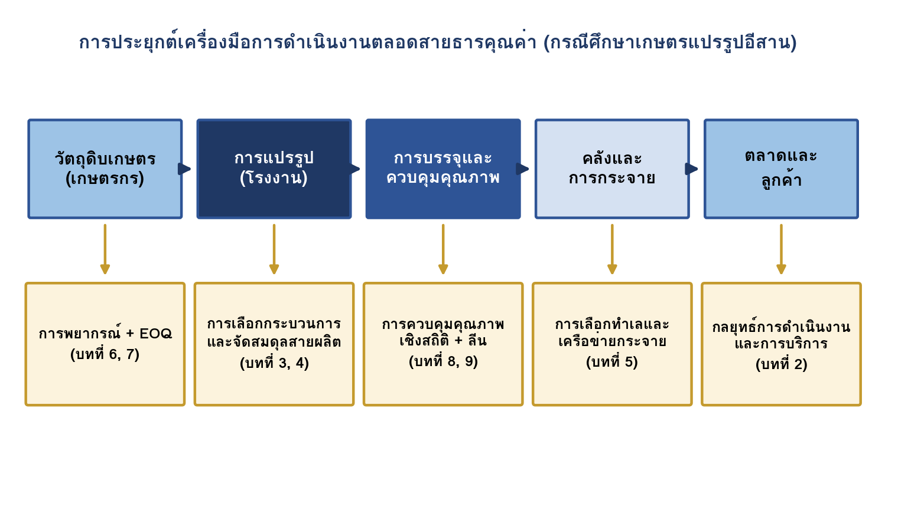
ตารางที่ 10.1 สรุปการบูรณาการการตัดสินใจด้านการดำเนินงานเข้ากับกรณีศึกษา โดยเชื่อมโยงเครื่องมือจากแต่ละบทเข้ากับการประยุกต์ใช้จริง สะท้อนว่าองค์ความรู้ทั้งหมดทำงานประสานกันเป็นระบบเดียว
| การตัดสินใจ | เครื่องมือ/เทคนิค (บท) | การประยุกต์ในกรณีศึกษา |
|---|---|---|
| กลยุทธ์การดำเนินงาน | มิติการแข่งขัน | เลือกมุ่งเน้นคุณภาพและเอกลักษณ์ของผลิตภัณฑ์ท้องถิ่น |
| การเลือกกระบวนการ | เมทริกซ์ผลิตภัณฑ์–กระบวนการ | ใช้การผลิตเป็นชุดที่เหมาะกับปริมาณปานกลางและความหลากหลาย |
| การวางผัง | การจัดสมดุลสายการผลิต | จัดสมดุลสายบรรจุเพื่อเพิ่มประสิทธิภาพ และลดคอขวด |
| เครือข่ายโลจิสติกส์ | จุดศูนย์ถ่วง | เลือกทำเลศูนย์กระจายสินค้าใกล้กลุ่มตลาดหลัก |
| การพยากรณ์และวางแผน | การถดถอย/การวางแผนรวม | พยากรณ์ความต้องการตามฤดูกาลและวางแผนการผลิต |
| การจัดการสินค้าคงคลัง | EOQ และ ABC | กำหนดปริมาณสั่งซื้อวัตถุดิบและจัดลำดับความสำคัญ |
| การจัดการคุณภาพ | การควบคุมเชิงสถิติ | ควบคุมน้ำหนักและคุณภาพการบรรจุให้สม่ำเสมอ |
| การปรับปรุง | ลีนและ VSM | ลดความสูญเปล่าและเวลานำตลอดสายการผลิต |
จากตารางจะเห็นว่า การยกระดับวิสาหกิจหนึ่งรายต้องอาศัยการตัดสินใจที่สอดคล้องกันทั้งระบบ มิใช่การปรับปรุงเพียงจุดใดจุดหนึ่ง ตัวอย่างเช่น การพยากรณ์ที่แม่นยำ (บทที่ 6) ช่วยให้การจัดการสินค้าคงคลัง (บทที่ 7) มีประสิทธิภาพ ซึ่งสนับสนุนการผลิตแบบลีน (บทที่ 9) และเมื่อประกอบกับการควบคุมคุณภาพ (บทที่ 8) ย่อมส่งเสริมกลยุทธ์การมุ่งเน้นคุณภาพ (บทที่ 2) ได้อย่างเป็นรูปธรรม
เพื่อแสดงว่าเครื่องมือจากหลายบทสามารถทำงานร่วมกันเป็นสายการคำนวณเดียวได้จริง ตัวอย่างบูรณาการที่ 10.1 สาธิตการเชื่อมโยงตั้งแต่การพยากรณ์ไปจนถึงการควบคุมคุณภาพของวิสาหกิจแปรรูปข้าวฮางงอกแห่งหนึ่ง
10.3 วิสาหกิจชุมชนในอนุภูมิภาคลุ่มแม่น้ำโขง
ภาคตะวันออกเฉียงเหนือของไทยตั้งอยู่ในจุดยุทธศาสตร์ของอนุภูมิภาคลุ่มแม่น้ำโขง (Greater Mekong Subregion: GMS) ซึ่งเชื่อมโยงกับประเทศเพื่อนบ้าน เช่น สปป.ลาว กัมพูชา และเวียดนาม ผ่านระเบียงเศรษฐกิจและด่านการค้าชายแดน บริบทนี้เปิดโอกาสให้วิสาหกิจชุมชนขยายตลาดข้ามพรมแดนและเข้าถึงวัตถุดิบและแรงงานในภูมิภาค ขณะเดียวกันก็เผชิญความท้าทายด้านโลจิสติกส์ การปฏิบัติตามมาตรฐานที่แตกต่างกัน และความผันผวนของห่วงโซ่อุปทานข้ามพรมแดน
การจัดการการดำเนินงานในบริบท GMS จึงต้องคำนึงถึงการออกแบบเครือข่ายโลจิสติกส์ข้ามพรมแดน การจัดการคุณภาพให้สอดคล้องกับมาตรฐานสากลและมาตรฐานของประเทศปลายทาง และการสร้างความร่วมมือในโซ่อุปทานระหว่างวิสาหกิจ ผู้ประกอบการที่สามารถบูรณาการหลักการดำเนินงานเข้ากับความเข้าใจบริบทเชิงพื้นที่ย่อมมีความได้เปรียบในการเป็นส่วนหนึ่งของโซ่อุปทานระดับภูมิภาคได้อย่างยั่งยืน
ในเชิงกายภาพ ภาคตะวันออกเฉียงเหนือเชื่อมต่อกับอนุภูมิภาคลุ่มน้ำโขงผ่านระเบียงเศรษฐกิจหลักสามแนว ได้แก่ ระเบียบเศรษฐกิจตอนเหนือ-ใต้ (North-South Economic Corridor) ที่เชื่อมไทย-ลาว-จีนตอนใต้ ระเบียบเศรษฐกิจตะวันออก-ตะวันตก (East-West Economic Corridor) ที่ผ่านด่านมุกดาหารเชื่อมไทย-ลาว-เวียดนาม และระเบียบเศรษฐกิจตอนใต้ (Southern Economic Corridor) ที่เชื่อมไทย-กัมพูชา-เวียดนาม ด่านการค้าชายแดนสำคัญของภูมิภาค เช่น ด่านมุกดาหาร และด่านช่องเม็ก จังหวัดอุบลราชธานี เป็นจุดเชื่อมต่อที่วิสาหกิจในพื้นที่สามารถใช้ประโยชน์ในการขยายตลาดและจัดหาวัตถุดิบข้ามพรมแดน ทั้งนี้ ความร่วมมือในกรอบประชาคมเศรษฐกิจอาเซียน เช่น ระบบพิธีการศุลกากรอิเล็กทรอนิกส์แบบเบ็ดเสร็จจุดเดียว (ASEAN Single Window) ช่วยลดระยะเวลาและความซับซ้อนของพิธีการชายแดนได้ในระดับหนึ่ง แม้ยังมีความแตกต่างของกฎระเบียบและมาตรฐานสินค้าระหว่างประเทศที่ต้องบริหารจัดการต่อไป
การตัดสินใจด้านโครงข่ายโลจิสติกส์ข้ามพรมแดนในบริบทนี้ เช่น การเลือกเส้นทางขนส่งและจำนวนจุดกระจายสินค้าที่เหมาะสม มีลักษณะเป็นปัญหาการหาค่าเหมาะที่สุดเชิงจัดหมู่ (Combi-natorial Optimization) ที่มีตัวแปรและข้อจำกัดจำนวนมาก ซึ่งเป็นทิศทางการวิจัยที่กำลังได้รับความสนใจ โดยนำเทคนิคเมตาฮิวริสติก เช่น การหาค่าเหมาะที่สุดแบบฝูงมด (Ant Colony Optimization: ACO) และการหาค่าเหมาะที่สุดแบบฝูงอนุภาค (Particle Swarm Optimization: PSO) มาประยุกต์แก้ปัญหาการจัดเส้นทางเดินรถและการเลือกทำเลที่ตั้งที่มีความซับซ้อนสูงเกินกว่าจะแก้ด้วยวิธีวิเคราะห์แบบดั้งเดิมในเวลาที่เหมาะสม ดังจะกล่าวถึงเพิ่มเติมในหัวข้อ 10.4
10.4 การประยุกต์เครื่องมือดิจิทัลในการจัดการการดำเนินงาน
ในยุคอุตสาหกรรม 4.0 เทคโนโลยีดิจิทัลเป็นปัจจัยสำคัญที่ช่วยยกระดับการจัดการการดำเนินงาน การประยุกต์เครื่องมือดิจิทัลสามารถมองเป็นชั้นที่ต่อยอดกัน ตั้งแต่อุปกรณ์เชื่อมต่อและเซนเซอร์ที่เก็บข้อมูล ไปจนถึงการตัดสินใจอัจฉริยะ ดังภาพที่ 10.3
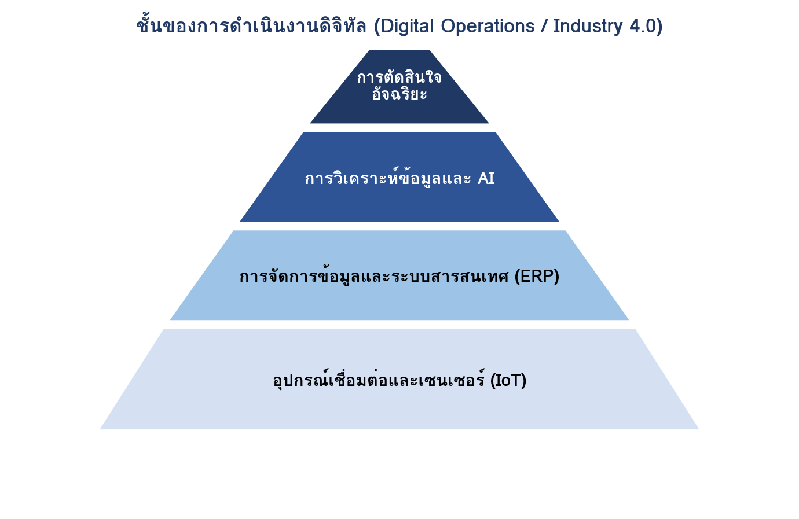
ชั้นล่างสุดคืออุปกรณ์เชื่อมต่อและเซนเซอร์ (IoT) ที่เก็บข้อมูลการผลิตแบบเรียลไทม์ ชั้นถัดมาคือการจัดการข้อมูลและระบบสารสนเทศ เช่น ระบบ ERP ที่บูรณาการข้อมูลทั่วทั้งองค์กร ต่อด้วยการวิเคราะห์ข้อมูลและปัญญาประดิษฐ์ที่เปลี่ยนข้อมูลเป็นสารสนเทศเชิงลึก และชั้นบนสุดคือการตัดสินใจอัจฉริยะที่รวดเร็วและแม่นยำ สำหรับวิสาหกิจชุมชน การเริ่มต้นด้วยเครื่องมือดิจิทัลที่เหมาะสม เช่น การใช้แพลตฟอร์มออนไลน์ในการขาย ระบบบันทึกข้อมูลการผลิตอย่างง่าย และการเกษตรอัจฉริยะ สามารถเพิ่มผลิตภาพและการเข้าถึงตลาดได้โดยไม่จำเป็นต้องลงทุนสูงในคราวเดียว
10.4.1 ระบบวางแผนทรัพยากรองค์กรสำหรับวิสาหกิจขนาดกลางและขนาดเล็ก
ระบบวางแผนทรัพยากรองค์กร (Enterprise Resource Planning: ERP) แบบดั้งเดิมมักมีต้นทุนสูงและซับซ้อนเกินความจำเป็นของวิสาหกิจชุมชนและ SME ปัจจุบันมีระบบ ERP บนคลาวด์ (Cloud ERP) และแอปพลิเคชันบันทึกบัญชี-สต็อกสินค้าราคาประหยัดที่ให้บริการแบบรายเดือน ช่วยให้วิสาหกิจขนาดเล็กเริ่มบูรณาการข้อมูลการขาย การผลิต และสินค้าคงคลังไว้ในระบบเดียวได้โดยไม่ต้องลงทุนโครงสร้างพื้นฐานด้านเทคโนโลยีสารสนเทศเอง
10.4.2 การตรวจสอบย้อนกลับด้วยรหัสคิวอาร์และบล็อกเชนในโซ่อุปทานเกษตร
ตลาดส่งออกและผู้บริโภคยุคปัจจุบันให้ความสำคัญกับการตรวจสอบย้อนกลับแหล่งที่มาของสินค้าเกษตรมากขึ้น การติดรหัสคิวอาร์ (QR Code) บนบรรจุภัณฑ์ช่วยให้ลูกค้าตรวจสอบแหล่งปลูก วันที่เก็บเกี่ยว และกระบวนการแปรรูปได้โดยตรง ขณะที่เทคโนโลยีบล็อกเชน (Blockchain) ช่วยบันทึกข้อมูลธุรกรรมตลอดโซ่อุปทานแบบไม่สามารถแก้ไขย้อนหลังได้ เพิ่มความน่าเชื่อถือให้กับสินค้าเกษตรแปรรูปเมื่อส่งออกไปยังตลาดในอนุภูมิภาคลุ่มน้ำโขงและตลาดสากลที่มีข้อกำหนดด้านการตรวจสอบย้อนกลับที่เข้มงวด
10.4.3 การหาค่าเหมาะที่สุดด้วยเมตาฮิวริสติกเพื่อสนับสนุนการตัดสินใจด้านโลจิสติกส์
ปัญหาการดำเนินงานหลายประเภทที่กล่าวถึงในตำราเล่มนี้ เช่น การจัดเส้นทางเดินรถขนส่ง (Vehicle Routing Problem) การเลือกทำเลที่ตั้งหลายจุดพร้อมกัน และการจัดสมดุลสายการผลิตที่มีงานย่อยจำนวนมาก มีลักษณะเป็นปัญหาการหาค่าเหมาะที่สุดเชิงจัดหมู่ที่จำนวนคำตอบที่เป็นไปได้เพิ่มขึ้นอย่างรวดเร็วตามขนาดปัญหา (Combinatorial Explosion) จนวิธีวิเคราะห์แบบละเอียดทุกคำตอบ (Exhaustive Search) ใช้เวลาคำนวณนานเกินไปในทางปฏิบัติ เทคนิคเมตาฮิวริสติก เช่น การหาค่าเหมาะที่สุดแบบฝูงมด (ACO) การหาค่าเหมาะที่สุดแบบฝูงอนุภาค (PSO) และขั้นตอนวิธีเชิงพันธุกรรม (Genetic Algorithm: GA) จึงถูกนำมาใช้ค้นหาคำตอบที่ดีเพียงพอภายในเวลาที่เหมาะสม โดยอาศัยกลไกการค้นหาเชิงสุ่มร่วมกับการเรียนรู้จากคำตอบที่ดีในแต่ละรอบ ตัวอย่างเช่น การประยุกต์ PSO เพื่อจัดเส้นทางรถขนส่งผลิตภัณฑ์เกษตรแปรรูปไปยังจุดกระจายสินค้าหลายแห่งในภูมิภาค สามารถลดระยะทางการขนส่งรวมได้อย่างมีนัยสำคัญเมื่อเทียบกับการจัดเส้นทางด้วยประสบการณ์ของผู้ปฏิบัติงานเพียงอย่างเดียว แนวทางนี้เป็นส่วนต่อขยายเชิงเทคนิคที่ผู้เรียนซึ่งมีพื้นฐานการเขียนโปรแกรมสามารถศึกษาเพิ่มเติมเพื่อยกระดับการตัดสินใจด้านโลจิสติกส์และโซ่อุปทานในระดับที่ซับซ้อนขึ้นต่อไป
ปัญหาการจัดเส้นทางเดินรถขนส่งที่กล่าวถึงข้างต้นมีรากฐานทางวิชาการมาตั้งแต่บทความบุกเบิกของ Dantzig และ Ramser ที่นำเสนอปัญหาการจัดส่งด้วยรถบรรทุก (Truck Dispatching Problem) เป็นครั้งแรกในวารสาร Management Science ตั้งแต่ปี ค.ศ. 1959 ซึ่งเป็นจุดกำเนิดของงานวิจัยด้านการหาค่าเหมาะที่สุดของเส้นทางขนส่งที่ขยายตัวอย่างต่อเนื่องมาจนถึงการประยุกต์เทคนิคเมตาฮิวริสติกสมัยใหม่อย่าง ACO และ PSO ในปัจจุบัน (Dantzig & Ramser, 1959)
10.5 โครงงานบูรณาการการดำเนินงานเชิงประยุกต์
เพื่อให้ผู้เรียนบูรณาการองค์ความรู้สู่การปฏิบัติ ตำราเล่มนี้เสนอกรอบการดำเนินโครงงานบูรณาการที่ผู้เรียนเลือกองค์กรหรือวิสาหกิจจริงในพื้นที่มาวิเคราะห์และเสนอแนวทางปรับปรุง โดยมีขั้นตอนห้าระยะ ดังภาพที่ 10.4
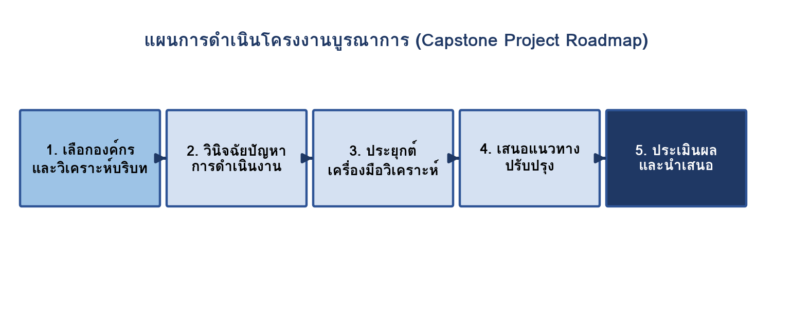
การประเมินโครงงานใช้เกณฑ์ที่ครอบคลุมทั้งการวิเคราะห์ การประยุกต์เครื่องมือ ความถูกต้องเชิงปริมาณ และการนำเสนอ ดังตารางที่ 10.2
| เกณฑ์การประเมิน | น้ำหนัก | คำอธิบาย |
|---|---|---|
| การวิเคราะห์บริบทและการวินิจฉัยปัญหา | 20% | ความเข้าใจองค์กรและการระบุปัญหาที่ชัดเจน |
| การประยุกต์เครื่องมือการดำเนินงาน | 30% | การเลือกและใช้เครื่องมือได้เหมาะสม |
| ความถูกต้องของการคำนวณและการวิเคราะห์ | 25% | ความแม่นยำและความสมเหตุสมผลของผล |
| ข้อเสนอแนะและความเป็นไปได้ | 15% | แนวทางปรับปรุงที่นำไปปฏิบัติได้จริง |
| การนำเสนอและการเขียนรายงาน | 10% | ความชัดเจนและความเป็นวิชาการ |
10.6 แนวโน้มอนาคตของการจัดการการดำเนินงาน: อุตสาหกรรม 5.0 และความยั่งยืน
แนวคิดอุตสาหกรรม 4.0 ที่เน้นการเชื่อมต่อและระบบอัตโนมัติกำลังก้าวสู่แนวคิดอุตสาหกรรม 5.0 ซึ่งเสริมมิติที่มนุษย์เป็นศูนย์กลาง (Human-Centricity) ความยืดหยุ่นของระบบต่อการหยุดชะงัก (Resilience) และความยั่งยืนด้านสิ่งแวดล้อม (Sustainability) เข้าไปเป็นเป้าหมายหลักร่วมกับประสิทธิภาพและผลิตภาพที่กล่าวถึงตลอดทั้งตำรา กล่าวคือเทคโนโลยีดิจิทัลและระบบอัตโนมัติไม่ได้มีไว้เพื่อทดแทนบุคลากรทั้งหมด แต่มีไว้เพื่อเสริมศักยภาพการทำงานของบุคลากรและลดงานที่มีความเสี่ยงหรือซ้ำซ้อน
ด้านความยืดหยุ่นของโซ่อุปทาน เหตุการณ์หยุดชะงักขนาดใหญ่ในช่วงที่ผ่านมาทำให้องค์กรทั่วโลกหันมาทบทวนกลยุทธ์ที่พึ่งพาแหล่งผลิตหรือผู้ส่งมอบเพียงรายเดียวหรือภูมิภาคเดียว และปรับสู่การกระจายความเสี่ยงด้วยการมีผู้ส่งมอบหลายราย การย้ายฐานผลิตให้ใกล้ตลาดมากขึ้น (Near-shoring) และการใช้แบบจำลองดิจิทัลคู่แฝด (Digital Twin) เพื่อจำลองสถานการณ์และวางแผนรองรับความผันผวนล่วงหน้า สำหรับวิสาหกิจในภาคตะวันออกเฉียงเหนือ ความยืดหยุ่นดังกล่าวหมายรวมถึงการกระจายแหล่งวัตถุดิบเกษตรให้ไม่พึ่งพาพื้นที่ปลูกเดียว และการสร้างความร่วมมือกับวิสาหกิจในประเทศเพื่อนบ้านตามที่กล่าวถึงในหัวข้อ 10.3
ด้านความยั่งยืน แนวคิดเศรษฐกิจหมุนเวียน (Circular Economy) ที่มุ่งลดการใช้ทรัพยากร ใช้ซ้ำ และนำวัสดุเหลือใช้กลับมาแปรรูปใหม่ กำลังถูกผนวกเข้ากับการตัดสินใจด้านการดำเนินงานในทุกขั้นตอน ตั้งแต่การออกแบบผลิตภัณฑ์ให้แยกชิ้นส่วนและรีไซเคิลได้ง่าย การใช้วัสดุเหลือจากการเกษตรเป็นพลังงานหรือวัตถุดิบร่วม (เช่น แกลบหรือฟางข้าวในอุตสาหกรรมแปรรูปข้าว) ไปจนถึงการบันทึกและรายงานปริมาณการปล่อยคาร์บอนของกิจกรรมโลจิสติกส์ (Carbon Accounting) เพื่อตอบสนองข้อกำหนดด้านสิ่งแวดล้อม สังคม และธรรมาภิบาล (ESG) ที่ตลาดส่งออกและคู่ค้าในโซ่อุปทานระดับสากลให้ความสำคัญเพิ่มขึ้นอย่างต่อเนื่อง
โดยสรุป ทิศทางในอนาคตของการจัดการการดำเนินงานจะยังคงยึดหลักการพื้นฐานที่นำเสนอตลอดทั้งเก้าบทที่ผ่านมา แต่ต้องขยายกรอบการตัดสินใจให้ครอบคลุมความยืดหยุ่นต่อความผันผวนและผลกระทบด้านสิ่งแวดล้อมควบคู่กับประสิทธิภาพและต้นทุน ผู้เรียนที่เข้าใจทั้งเครื่องมือเชิงปริมาณดั้งเดิมและแนวโน้มเหล่านี้จะสามารถออกแบบระบบการดำเนินงานที่แข่งขันได้อย่างยั่งยืนในระยะยาว
ในเชิงวิชาการ Xu, Lu, Vogel-Heuser และ Wang (2021) อธิบายว่าอุตสาหกรรม 5.0 มิใช่การแทนที่อุตสาหกรรม 4.0 หากเป็นการเติมมิติที่เทคโนโลยีเพียงลำพังตอบไม่ได้ คือการยึดมนุษย์เป็นศูนย์กลาง ความยั่งยืน และความสามารถในการฟื้นตัว ซึ่งเป็นกรอบที่วิสาหกิจไทยสามารถใช้กำหนดทิศทางการยกระดับการดำเนินงานในทศวรรษหน้า
บทสรุปส่งท้าย
ตำรา “การจัดการการดำเนินงาน” เล่มนี้ได้นำเสนอองค์ความรู้อย่างเป็นระบบ เริ่มจากแนวคิดพื้นฐานและบทบาทของการดำเนินงานในฐานะแกนกลางของการสร้างคุณค่า สู่การกำหนดกลยุทธ์และมิติการแข่งขัน การออกแบบกระบวนการ ผัง และเครือข่ายโลจิสติกส์ การพยากรณ์และการวางแผนการผลิต การจัดการสินค้าคงคลัง การจัดการคุณภาพ และการผลิตแบบลีน โดยแต่ละบทมีทั้งหลักการเชิงทฤษฎี เครื่องมือเชิงปริมาณ ตัวอย่างการคำนวณ และกรณีศึกษาในบริบทภาคตะวันออกเฉียงเหนือ
สาระสำคัญที่ตำราเล่มนี้ต้องการสื่อคือ การจัดการการดำเนินงานมิใช่ชุดของเทคนิคที่แยกขาดจากกัน แต่เป็นระบบที่การตัดสินใจทุกด้านเชื่อมโยงและส่งผลต่อกันตลอดโซ่อุปทาน ความสามารถในการแข่งขันที่ยั่งยืนเกิดจากการบูรณาการองค์ความรู้เหล่านี้เข้ากับความเข้าใจบริบทเฉพาะของแต่ละองค์กรและพื้นที่ ผู้เขียนหวังว่าตำราเล่มนี้จะเป็นรากฐานที่มั่นคงสำหรับผู้เรียนในการประยุกต์หลักการจัดการการดำเนินงานเพื่อพัฒนาองค์กรและท้องถิ่นอย่างยั่งยืนต่อไป
แนวคิดอุตสาหกรรม 5.0 ที่กล่าวถึงในหัวข้อ 10.6 ได้รับการริเริ่มอย่างเป็นทางการโดยคณะกรรมาธิการยุโรป ซึ่งเสนอวิสัยทัศน์อุตสาหกรรมที่ยั่งยืน มีมนุษย์เป็นศูนย์กลาง และมีความยืดหยุ่นต่อการหยุดชะงัก เป็นแนวคิดเสริมที่ต่อยอดจากอุตสาหกรรม 4.0 มิใช่แนวคิดที่มาแทนที่กัน (European Commission, 2021) แนวคิดนี้ยังเชื่อมโยงกับงานวิจัยด้านห่วงโซ่อุปทานที่มีชีวิต (Viable Supply Chain) ซึ่งเสนอว่าความยืดหยุ่น ความคล่องตัว และความยั่งยืนต้องได้รับการออกแบบร่วมกันตั้งแต่ขั้นวางแผนเครือข่ายโซ่อุปทาน มิใช่เพิ่มเข้ามาเป็นมาตรการรับมือภายหลังเกิดปัญหา (Ivanov, 2020)
โครงงานบูรณาการประจำบท
เอกสารอ้างอิงประจำบท
Ivanov, D. (2020). Viable supply chain model: Integrating agility, resilience and sustainability perspectives-lessons from and thinking beyond the COVID-19 pandemic. Annals of Operations Research.
European Commission. (2021). Industry 5.0: Towards a sustainable, human-centric and resilient European industry. Publications Office of the European Union.
Dantzig, G. B., & Ramser, J. H. (1959). The truck dispatching problem. Management Science, 6(1), 80-91.
Frohlich, M. T., & Westbrook, R. (2001). Arcs of integration: An international study of supply chain strategies. Journal of Operations Management, 19(2), 185-200.
Chopra, S., & Meindl, P. (2019). Supply chain management: Strategy, planning, and operation (7th ed.). Pearson.
Heizer, J., Render, B., & Munson, C. (2020). Operations management: Sustainability and supply chain management (13th ed.). Pearson.
Jacobs, F. R., & Chase, R. B. (2021). Operations and supply chain management (16th ed.). McGraw-Hill Education.
Krajewski, L. J., Malhotra, M. K., & Ritzman, L. P. (2022). Operations management: Processes and supply chains (13th ed.). Pearson.
Slack, N., Brandon-Jones, A., & Burgess, N. (2022). Operations management (10th ed.). Pearson.
Stevenson, W. J. (2021). Operations management (14th ed.). McGraw-Hill Education.
Xu, X., Lu, Y., Vogel-Heuser, B., & Wang, L. (2021). Industry 4.0 and Industry 5.0 - Inception, conception and perception. Journal of Manufacturing Systems, 61, 530-535.
บรรณานุกรม
คลอเคลีย วจนะวิชากร. (2563). การลดความสูญเปล่าเพื่อเพิ่มประสิทธิภาพกระบวนการ ผลิตไม้กวาดทางมะพร้าว กรณีศึกษาวิสาหกิจชุมชนบ้านบุ่งหวาย จังหวัดอุบลราชธานี. วารสารวิชาการ วิศวกรรมศาสตร์ ม.อบ., 13(1), 141–152.
คลอเคลีย วจนะวิชากร. (2565). การลดความสูญเปล่าเพื่อเพิ่มประสิทธิภาพกระบวนการ ทอผ้าไหมกาบบัว: กรณีศึกษาวิสาหกิจชุมชนบ้านปะอาว จังหวัดอุบลราชธานี. วารสารวิศวกรรมศาสตร์และนวัตกรรม, 15(1), 89–101.
คลอเคลีย วจนะวิชากร ปานจิต ศรีสวัสดิ์ และวรัญญู ทิพย์โพธิ์. (2558). การประยุกต์ใช้แผนผังสายธารคุณค่าในการเพิ่มประสิทธิภาพการจัดการโลจิสติกส์และโซ่อุปทานหวดนึ่งข้าวอัตโนมัติในจังหวัดอุบลราชธานี. วารสารวิชาการ วิศวกรรมศาสตร์ ม.อบ., 8(2), 1–13.
คลอเคลีย วจนะวิชากร ขจิตา สมเนตร และกนกกาญจน์ ศรีสุรินทร์. (2567). การศึกษาห่วงโซ่อุปทานวิสาหกิจชุมชนแปลงใหญ่พริกตำบลหัวเรือ จังหวัดอุบลราชธานี. วารสารวิศวกรรมศาสตร์และนวัตกรรม, 17(1), 163–178.
คลอเคลีย วจนะวิชากร และปานจิต ศรีสวัสดิ์. (2557). การศึกษาระบบโลจิสติกส์ยางพารา และการพัฒนาคุณภาพยางแผ่น: กรณีศึกษาอำเภอบุณฑริก จังหวัดอุบลราชธานี. วารสารวิศวกรรมศาสตร์ มหาวิทยาลัยอุบลราชธานี, 7(2), 1–13.
พิชาภพ พันธุ์แพ. (2568). อิทธิพลของนวัตกรรมและเทคโนโลยีดิจิทัลต่อผลการดำเนินงานของวิสาหกิจขนาดกลางและขนาดย่อมในจังหวัดเชียงใหม่. วารสารบริหารศาสตร์ มหาวิทยาลัยอุบลราชธานี, 14(3), 93-116.
ฤดี นิยมรัตน์, กฤษฎา นาคะวงศ์ และกษิดิ์เดช แช่มสายทอง. (2565). การประยุกต์ใช้การวิเคราะห์เอบีซีและปริมาณการสั่งซื้อที่ประหยัด เพื่อจัดการสินค้าคงคลังของร้านจำหน่ายวัสดุอุปกรณ์ก่อสร้าง กรณีศึกษา บริษัทสมนึกอินเตอร์เทรด จำกัด. วารสารวิชาการเทคโนโลยีอุตสาหกรรมและวิศวกรรม มหาวิทยาลัยราชภัฏพิบูลสงคราม, 4(3), 354-368.
สำนักงานสภาพัฒนาการเศรษฐกิจและสังคมแห่งชาติ. (2566). รายงานภาวะเศรษฐกิจไทยและผลิตภาพการผลิต. สำนักงานสภาพัฒนาการเศรษฐกิจและสังคมแห่งชาติ.
ศิริภิญญา อาสา วจิราภรณ์ ประชุมรักษ์ และคลอเคลีย วจนะวิชากร. (2568). ระบบสนับสนุนการตัดสินใจวางแผนการปลูกพืชเศรษฐกิจโดยใช้เทคนิคการเรียนรู้ของเครื่องแบบต้นไม้ตัดสินใจ: กรณีศึกษาตำบลหัวเรือ อำเภอเมือง จังหวัดอุบลราชธานี. วารสารวิศวกรรมศาสตร์และนวัตกรรม, 18(4), 146–159.
Ahmad, S., & Schroeder, R. G. (2002). Refining the product-process matrix. International Journal of Operations & Production Management, 22(1), 103-124.
Alnahhal, M., Aylak, B. L., Al Hazza, M., & Sakhrieh, A. (2024). Economic order quantity: A state-of-the-art in the era of uncertain supply chains. Sustainability, 16(14), 5965.
Andriolo, A., Battini, D., Grubbström, R. W., Persona, A., & Sgarbossa, F. (2014). A century of evolution from Harris's basic lot size model: Survey and research agenda. International Journal of Production Economics, 155, 16-38.
Ariss, S. S., & Zhang, Q. (2002). The impact of flexible process capability on the product-process matrix: An empirical examination. International Journal of Production Economics, 76(2), 135-145.
Ballou, R. H. (2004). Business logistics/supply chain management (5th ed.). Pearson.
Becerra, P., Mula, J., & Sanchis, R. (2022). Sustainable inventory management in supply chains: Trends and further research. Sustainability, 14(5), 2613.
Besterfield, D. H. (2013). Quality improvement (9th ed.). Pearson.
Bowersox, D. J., Closs, D. J., & Cooper, M. B. (2020). Supply chain logistics management (5th ed.). McGraw-Hill Education.
Boyer, K. K., & Lewis, M. W. (2002). Competitive priorities: Investigating the need for trade-offs in operations strategy. Production and Operations Management, 11(1), 9-20.
Boysen, N., Schulze, P., & Scholl, A. (2022). Assembly line balancing: What happened in the last fifteen years? European Journal of Operational Research, 301(3), 797-814.
Chase, R. B. (1978). Where does the customer fit in a service operation? Harvard Business Review, 56(6), 137-142.
Chopra, S., & Meindl, P. (2019). Supply chain management: Strategy, planning, and operation (7th ed.). Pearson.
Dangayach, G. S., & Deshmukh, S. G. (2001). Manufacturing strategy: Literature review and some issues. International Journal of Operations & Production Management, 21(7), 884-932.
Dantzig, G. B., & Ramser, J. H. (1959). The truck dispatching problem. Management Science, 6(1), 80-91.
David, F. R., & David, F. R. (2017). Strategic management: A competitive advantage approach, concepts and cases (16th ed.). Pearson.
Drira, A., Pierreval, H., & Hajri-Gabouj, S. (2007). Facility layout problems: A survey. Annual Reviews in Control, 31(2), 255-267.
European Commission. (2021). Industry 5.0: Towards a sustainable, human-centric and resilient European industry. Publications Office of the European Union.
Evans, J. R., & Lindsay, W. M. (2020). Managing for quality and performance excellence (11th ed.). Cengage Learning.
Farahani, R. Z., Hekmatfar, M., Fahimnia, B., & Kazemzadeh, N. (2014). Hierarchical facility location problem: Models, classifications, techniques, and applications. Computers & Industrial Engineering, 68, 104-117.
Frank, A. G., Dalenogare, L. S., & Ayala, N. F. (2019). Industry 4.0 technologies: Implementation patterns in manufacturing companies. International Journal of Production Economics, 210, 15-26.
Frohlich, M. T., & Westbrook, R. (2001). Arcs of integration: An international study of supply chain strategies. Journal of Operations Management, 19(2), 185-200.
Garvin, D. A. (1987). Competing on the eight dimensions of quality. Harvard Business Review, 65(6), 101–109.
George, M. L. (2002). Lean Six Sigma: Combining Six Sigma quality with lean speed. McGraw-Hill.
Hakimi, S. L. (1964). Optimum locations of switching centers and the absolute centers and medians of a graph. Operations Research, 12(3), 450-459.
Harris, F. W. (1913). How many parts to make at once. Factory, The Magazine of Management, 10(2), 135-136, 152.
Hayes, R. H., & Pisano, G. P. (1994). Beyond world-class: The new manufacturing strategy. Harvard Business Review, 72(1), 77-86.
Hayes, R. H., & Wheelwright, S. C. (1979). Link manufacturing process and product life cycles. Harvard Business Review, 57(1), 133-140.
Heizer, J., Render, B., & Munson, C. (2020). Operations management: Sustainability and supply chain management (13th ed.). Pearson.
Helgeson, W. B., & Birnie, D. P. (1961). Assembly line balancing using the ranked positional weight technique. Journal of Industrial Engineering, 12(6), 394-398.
Hill, T., & Hill, A. (2018). Manufacturing operations strategy (4th ed.). Palgrave Macmillan.
Hines, P., Holweg, M., & Rich, N. (2004). Learning to evolve: A review of contemporary lean thinking. International Journal of Operations & Production Management, 24(10), 994-1011.
Holt, C. C. (2004). Forecasting seasonals and trends by exponentially weighted moving averages. International Journal of Forecasting, 20(1), 5-10.
Hyndman, R. J., & Athanasopoulos, G. (2021). Forecasting: Principles and practice (3rd ed.). OTexts.
Hyndman, R. J., & Koehler, A. B. (2006). Another look at measures of forecast accuracy. International Journal of Forecasting, 22(4), 679-688.
İlkay, M. S., & Aslan, E. (2012). The effect of the ISO 9001 quality management system on the performance of SMEs. International Journal of Quality & Reliability Management, 29(7), 753-778.
Ivanov, D. (2020). Viable supply chain model: Integrating agility, resilience and sustainability perspectives-lessons from and thinking beyond the COVID-19 pandemic. Annals of Operations Research.
Jacobs, F. R., & Chase, R. B. (2021). Operations and supply chain management (16th ed.). McGraw-Hill Education.
Kano, N., Seraku, N., Takahashi, F., & Tsuji, S. (1984). Attractive quality and must-be quality. Journal of the Japanese Society for Quality Control, 14(2), 39-48.
Krafcik, J. F. (1988). Triumph of the lean production system. Sloan Management Review, 30(1), 41-52.
Krajewski, L. J., Malhotra, M. K., & Ritzman, L. P. (2022). Operations management: Processes and supply chains (13th ed.). Pearson.
Liker, J. K. (2021). The Toyota way (2nd ed.). McGraw-Hill Education.
Maister, D. H. (1976). Centralisation of inventories and the "square root law". International Journal of Physical Distribution, 6(3), 124-134.
Makridakis, S., & Hibon, M. (2000). The M3-competition: Results, conclusions and implications. International Journal of Forecasting, 16(4), 451-476.
Makridakis, S., Spiliotis, E., & Assimakopoulos, V. (2018). The M4 Competition: Results, findings, conclusion and way forward. International Journal of Forecasting, 34(4), 802-808.
Melo, M. T., Nickel, S., & Saldanha-da-Gama, F. (2009). Facility location and supply chain management - A review. European Journal of Operational Research, 196(2), 401-412.
Montgomery, D. C. (2020). Introduction to statistical quality control (8th ed.). John Wiley & Sons.
Muther, R., & Hales, L. (2015). Systematic layout planning (4th ed.). Management & Industrial Research Publications.
Nahmias, S., & Olsen, T. L. (2021). Production and operations analysis (8th ed.). Waveland Press.
OECD. (2025). OECD compendium of productivity indicators 2025. OECD Publishing.
Ohno, T. (1988). Toyota production system: Beyond large-scale production. Productivity Press.
Parasuraman, A., Zeithaml, V. A., & Berry, L. L. (1988). SERVQUAL: A multiple-item scale for measuring consumer perceptions of service quality. Journal of Retailing, 64(1), 12-40.
Pepper, M. P. J., & Spedding, T. A. (2010). The evolution of lean Six Sigma. International Journal of Quality & Reliability Management, 27(2), 138-155.
Porter, M. E. (1996). What is strategy? Harvard Business Review, 74(6), 61–78.
Rother, M., & Shook, J. (2003). Learning to see: Value stream mapping to add value and eliminate muda. Lean Enterprise Institute.
Safizadeh, M. H., Ritzman, L. P., Sharma, D., & Wood, C. (1996). An empirical analysis of the product-process matrix. Management Science, 42(11), 1576-1591.
Salveson, M. E. (1955). The assembly-line balancing problem. Journal of Industrial Engineering, 6(3), 18-25.
Scholl, A., & Becker, C. (2006). State-of-the-art exact and heuristic solution procedures for simple assembly line balancing. European Journal of Operational Research, 168(3), 666-693.
Shah, R., & Ward, P. T. (2003). Lean manufacturing: Context, practice bundles, and performance. Journal of Operations Management, 21(2), 129-149.
Shewhart, W. A. (1931). Economic control of quality of manufactured product. D. Van Nostrand Company.
Silver, E. A., Pyke, D. F., & Thomas, D. J. (2017). Inventory and production management in supply chains (4th ed.). CRC Press.
Skinner, W. (1969). Manufacturing-missing link in corporate strategy. Harvard Business Review, 47(3), 136-145.
Slack, N., Brandon-Jones, A., & Burgess, N. (2022). Operations management (10th ed.). Pearson.
Stevenson, W. J. (2021). Operations management (14th ed.). McGraw-Hill Education.
Syverson, C. (2011). What determines productivity? Journal of Economic Literature, 49(2), 326-365.
Tompkins, J. A., White, J. A., Bozer, Y. A., & Tanchoco, J. M. A. (2010). Facilities planning (4th ed.). John Wiley & Sons.
Wajanawichakon, K., Srisurin, K., & Ongkunaruk, P. (2025). Multi-criteria decision analysis for sustainable crop selection in Northeast Thailand: An analytical hierarchy process approach. International Journal of Technology, 16(3), 780–795.
Ward, P. T., & Duray, R. (2000). Manufacturing strategy in context: Environment, competitive strategy and manufacturing strategy. Journal of Operations Management, 18(2), 123-138.
Winters, P. R. (1960). Forecasting sales by exponentially weighted moving averages. Management Science, 6(3), 324-342.
Woodall, W. H., & Montgomery, D. C. (2014). Some current directions in the theory and application of statistical process monitoring. Journal of Quality Technology, 46(1), 78-94.
Xu, X., Lu, Y., Vogel-Heuser, B., & Wang, L. (2021). Industry 4.0 and Industry 5.0 - Inception, conception and perception. Journal of Manufacturing Systems, 61, 530-535.
Zheng, T., Ardolino, M., Bacchetti, A., & Perona, M. (2021). The applications of Industry 4.0 technologies in manufacturing context: A systematic literature review. International Journal of Production Research, 59(6), 1922-1954.
ดัชนีคำค้น
กลยุทธ์ (Strategy) 16
กลยุทธ์การดำเนินงาน (Operations Strategy) 16, 17, 18, 20, 21, 23, 24, 26
กลยุทธ์คงที่ (Level Strategy) 61, 62, 64
กลยุทธ์ระดับธุรกิจ (Business Strategy) 17
กลยุทธ์ระดับหน้าที่ (Functional Strategy) 17
กลยุทธ์ระดับองค์กร (Corporate Strategy) 7, 21, 24
กลยุทธ์ไล่ตาม (Chase Strategy) 61, 62, 64
การควบคุมคุณภาพเชิงสถิติ (Statistical Process Control: SPC) 7, 75, 76, 82
การจัดการการดำเนินงาน (Operations Management) 1, 2, 3, 4, 5, 7, 9, 12
การจัดการคุณภาพโดยรวม (Total Quality Management: TQM) 75, 81
การจัดการสินค้าคงคลังโดยผู้ขาย (Vendor-Managed Inventory: VMI) 66, 71, 73
การจัดตารางการผลิต (Scheduling) 3, 55, 63, 64
การจัดประเภทสินค้าคงคลังแบบ ABC (ABC Classification) 66, 70, 71, 72, 73
การจัดสมดุลสายการผลิต (Line Balancing) 36, 38, 39, 43, 94
การถดถอยเชิงเส้น (Linear Regression) 59, 60, 64
การปรับปรุงอย่างต่อเนื่อง (Kaizen) 75, 81, 82, 84, 87, 90, 92
การปรับเรียบเอกซ์โพเนนเชียล (Exponential Smoothing) 55, 58, 63, 64
การผลิตต่อเนื่อง (Continuous Production) 27, 28, 33
การผลิตเป็นชุด (Batch Production) 27, 33, 37, 94
การผลิตแบบลีน (Lean Production) 19, 84, 90, 95, 97
การพยากรณ์ (Forecasting) 3, 55, 56, 57, 58, 59, 60, 61
การวางผังสถานประกอบการ (Facility Layout) 3, 36, 37, 43
การวางแผนการผลิตรวม (Aggregate Planning)55, 61, 62, 63, 64
การวิเคราะห์จุดคุ้มทุน (Break-Even Analysis) 26, 29, 30, 31, 33, 34
การวิเคราะห์ระยะทาง–ปริมาณ (Load–Distance Analysis) 36, 41, 42, 43, 44
การเทียบเคียงสมรรถนะ (Benchmarking) 22, 24
การเลือกทำเลที่ตั้ง (Location Selection) 3, 17, 45, 46, 48, 52
การแบ่งงานกันทำ (Division of Labor) 4
การแลกได้แลกเสีย (Trade-off) 16, 19, 24, 32, 34, 50, 52, 76
ความคลาดเคลื่อนกำลังสองเฉลี่ย (Mean Squared Error: MSE) 55, 60, 61, 64
ความสามารถของกระบวนการ (Process Capability (Cp, Cpk)) 29, 75, 78, 79, 82
ความสูญเปล่า (Muda / Waste) 6, 22, 84, 85, 86, 88, 90, 95
ความสูญเสียจากการจัดสมดุล (Balance Delay) 38, 40, 44
คัมบัง (Kanban) 84, 86, 87, 90
คุณภาพ (Quality) 18, 75
เครือข่ายโลจิสติกส์ (Logistics Network) 45, 46, 52, 53, 93, 94, 95, 97
ค่าเฉลี่ยความคลาดเคลื่อนสัมบูรณ์ (Mean Absolute Deviation: MAD) 55, 60, 61
ค่าเฉลี่ยเคลื่อนที่ (Moving Average) 55, 57, 61, 63, 64
งานตามคำสั่ง (Job Shop) 27, 28, 29, 33, 37
งานระหว่างทำ (Work-in-Process: WIP) 66
จำนวนข้อบกพร่องต่อล้านโอกาส (DPMO) 88, 89, 90, 91
จุดคุ้มทุนเปรียบเทียบ (Crossover Point) 26, 30, 31, 33, 34
จุดสั่งซื้อใหม่ (Reorder Point: ROP) 66, 68, 69, 72, 73
ช่องทางการกระจายสินค้า (Distribution Channel) 46, 51
ซิกซ์ซิกมา (Six Sigma) 84, 88, 90
โซ่อุปทาน (Supply Chain) 1, 3, 5, 6, 9, 12, 14, 17
ตารางการผลิตหลัก (Master Production Schedule: MPS) 55, 63, 64
ต้นทุนการถือครอง (Holding Cost) 62, 63, 66, 67, 68, 72, 73
ต้นทุนการสั่งซื้อ (Ordering Cost) 66, 67, 68, 72, 73
ต้นทุนของคุณภาพ (Cost of Quality) 75, 76, 81, 82
เทคนิคการวางผังอย่างเป็นระบบ (Systematic Layout Planning: SLP) 36, 40, 43
แนวโน้ม (Trend) 56
ประสิทธิภาพรอบกระบวนการ (Process Cycle Efficiency: PCE) 84, 87, 88, 90, 91
ปริมาณการสั่งซื้อที่ประหยัด (Economic Order Quantity: EOQ) 66, 67, 68, 72, 73
ปัจจัยนำเข้า (Input) 1, 6, 7, 10, 11, 14, 22, 24
ปัญหาการขนส่ง (Transportation Problem) 45, 49, 52, 53
ผลผลิต (Output) 6, 7, 10, 14, 22, 24, 26
ผลิตภาพ (Productivity) 1, 4, 5, 8, 10, 11, 12, 13
ผลิตภาพหลายปัจจัย (Multifactor Productivity) 10, 11, 14, 22, 24
ผังตามกระบวนการ (Process Layout) 37, 41, 43
ผังตามผลิตภัณฑ์ (Product Layout) 37, 43
ผังตำแหน่งคงที่ (Fixed-Position Layout) 37, 43
ผังแบบเซลล์ (Cellular Layout) 37, 43
ผู้กำหนดคุณสมบัติเบื้องต้น (Order Qualifiers) 16, 19, 20, 23, 24
ผู้ชนะคำสั่งซื้อ (Order Winners) 16, 19, 20, 23, 24
แผนผังสายธารคุณค่า (Value Stream Mapping: VSM) 84, 87, 89, 90
แผนภาพก้างปลา (Fishbone Diagram) 80
แผนภูมิควบคุม (Control Chart) 75, 77, 78, 80, 82
แผนภูมิความสัมพันธ์ (Relationship Chart) 40
แผนภูมิค่าเฉลี่ย (X-bar Chart) 77, 78, 81, 82
แผนภูมิพาเรโต (Pareto Chart) 70, 71, 73, 80
แผนภูมิพิสัย (R Chart) 77, 78, 81, 82
มาตรฐาน ISO 9001 (ISO 9001) 75, 80, 81, 82
มิติการแข่งขัน (Competitive Priorities) 12, 16, 18, 19, 20, 21, 23, 26
เมทริกซ์ผลิตภัณฑ์–กระบวนการ (Product–Process Matrix) 26, 28, 33, 34, 94
รอบเวลา (Cycle Time) 18, 36, 38, 39, 42, 43, 44, 56
ระบบการผลิตแบบโตโยต้า (Toyota Production System: TPS) 5, 84, 85, 90
ระบบการแปรรูป (Transformation System) 1, 2, 6, 7, 13, 14
ระบบดึง (Pull System) 85, 86, 87, 90
ระบบทันเวลาพอดี (Just-in-Time: JIT) 6, 84, 86, 90
ร้อยละความคลาดเคลื่อนสัมบูรณ์เฉลี่ย (MAPE) 55, 60, 61, 64
ลีนซิกซ์ซิกมา (Lean Six Sigma) 84, 88, 90
วัตถุดิบ (Raw Materials) 66
วิธีการให้คะแนนปัจจัย (Factor Rating) 45, 46, 52, 53
วิธีจุดศูนย์ถ่วง (Center of Gravity) 45, 46, 47, 48, 49, 52, 53, 94
วิธีต้นทุนต่ำสุด (Least-Cost Method) 49, 52, 53
วิสาหกิจชุมชน (Community Enterprise) 2, 10, 12, 13, 15, 31, 32, 63
เวลานำ (Lead Time) 36, 68, 69, 72, 73, 84, 86, 87
เวลาแท็กต์ (Takt Time) 86, 87, 89, 90
ศูนย์กระจายสินค้า (Distribution Center) 45, 47, 48, 49, 50, 51, 52, 94
สต็อกเพื่อความปลอดภัย (Safety Stock) 66, 68, 69, 72, 73
สายการผลิต (Line / Repetitive Production) 27, 28, 33, 36, 37, 38, 39, 40
สินค้าคงคลัง (Inventory) 3, 8, 12, 50, 52, 55, 61, 62
สินค้าสำเร็จรูป (Finished Goods) 66
อนุกรมเวลา (Time Series) 55, 56, 64
อนุภูมิภาคลุ่มน้ำโขง (Greater Mekong Subregion) 12, 13, 92, 95
ฮิสโทแกรม (Histogram) 80
*หมายเหตุ: ดัชนีคัดสรรศัพท์เทคนิคหลัก 97 รายการ เลขหน้าแสดงหน้าแรก ๆ ที่ศัพท์ปรากฏ (สูงสุด 8 หน้าต่อคำ) เรียงตามลำดับอักษรไทย*
ประวัติผู้เขียน
ผู้ช่วยศาสตราจารย์ ดร.คลอเคลีย วจนะวิชากร
การศึกษา
- ปรัชญาดุษฎีบัณฑิต (วิศวกรรมอุตสาหการ) มหาวิทยาลัยอุบลราชธานี พ.ศ. 2552
- วิทยาศาสตรมหาบัณฑิต (เทคโนโลยีสารสนเทศ) มหาวิทยาลัยเทคโนโลยีพระจอมเกล้าธนบุรี พ.ศ. 2546
- วิศวกรรมศาสตรบัณฑิต (วิศวกรรมอุตสาหการ)
มหาวิทยาลัยเกษตรศาสตร์ พ.ศ. 2542
ตำแหน่งปัจจุบัน
ผู้ช่วยศาสตราจารย์(วิศวกรรมอุตสาหการ) ประจำสาขาวิชาเทคโนโลยีสารสนเทศ คณะเทคโนโลยีอุตสาหกรรม มหาวิทยาลัยราชภัฏอุบลราชธานี
ประสบการณ์และความเชี่ยวชาญ
ปฏิบัติหน้าที่อาจารย์ผู้สอนระดับปริญญาตรีในรายวิชาการจัดการการดำเนินงาน การจัดการโลจิสติกส์และโซ่อุปทาน การวางแผนการขายและปฏิบัติการ (S&OP) และ การวางแผนและควบคุมการผลิตในงานอุตสาหกรรม
มีความเชี่ยวชาญด้านการหาค่าเหมาะที่สุดด้วยวิธีเมตาฮิวริสติก (อาทิ ACO PSO GA และไฮบริดร่วมกับการเรียนรู้แบบเสริมกำลัง) สำหรับปัญหาเชิงการจัด เช่น การจัด เส้นทาง การขนส่ง การจัดสมดุลสายการผลิต และการมอบหมายงาน ตลอดจนการ ประยุกต์การจัดการโซ่อุปทานและโลจิสติกส์ และการเพิ่มผลิตภาพในวิสาหกิจชุมชน และอุตสาหกรรมเกษตรแปรรูปของภาคตะวันออกเฉียงเหนือ
ด้านการประกันคุณภาพการศึกษา เป็นผู้พัฒนางานด้านคุณภาพการศึกษา ตามเกณฑ์คุณภาพการศึกษาเพื่อการดำเนินการที่เป็นเลิศ (EdPEx) และเกณฑ์ AUN-QA ระดับหลักสูตร รวมทั้งเป็นผู้ทรงคุณวุฒิพิจารณาบทความให้แก่วารสารวิชาการระดับชาติ และนานาชาติ
ผลงานวิชาการ
มีผลงานวิจัยตีพิมพ์ในวารสารวิชาการระดับนานาชาติ (ฐานข้อมูล Scopus) และ ระดับชาติ (ฐานข้อมูล TCI) อย่างต่อเนื่อง อาทิ การประยุกต์กระบวนการลำดับชั้นเชิง วิเคราะห์ ในการคัดเลือกพืชเศรษฐกิจ การวิเคราะห์โซ่อุปทานวิสาหกิจชุมชนด้วยแบบ จำลอง SCOR การลดความสูญเปล่าในกระบวนการผลิตผ้าไหมทอมือ และการพัฒนา อัลกอริทึม เมตาฮิวริสติกสำหรับปัญหาการตัดสินใจในงานโลจิสติกส์ พร้อมทั้งดำเนินงาน วิจัยเชิงพื้นที่ เพื่อพัฒนาวิสาหกิจชุมชนในจังหวัดอุบลราชธานีและอนุภูมิภาคลุ่มน้ำโขง
🧮 เครื่องมือคำนวณปฏิสัมพันธ์
ทดลองปรับค่าตัวแปรและสังเกตผลลัพธ์ เพื่อสร้างความเข้าใจเชิงปริมาณประกอบเนื้อหาแต่ละบท · คัดกรองเครื่องมือตามบทได้
1) ผลิตภาพปัจจัยเดี่ยว (Single-Factor Productivity) บทที่ 1
Productivity = Output ÷ Input
2) ผลิตภาพหลายปัจจัย (Multifactor Productivity) บทที่ 1
MFP = มูลค่าผลผลิต ÷ (ต้นทุนแรงงาน + วัสดุ + ทุน + พลังงาน)
3) การวิเคราะห์จุดคุ้มทุน (Break-Even Point) บทที่ 3
BEP = FC ÷ (P − V)
4) การเลือกกระบวนการ 2 ทางเลือก (จุดตัดต้นทุน) บทที่ 3
หาปริมาณ Q ที่ต้นทุนรวมของสองทางเลือกเท่ากัน: FC₁ + V₁Q = FC₂ + V₂Q
5) การจัดสมดุลสายการผลิต (Line Balancing) บทที่ 4
Cycle Time = เวลาทำงานต่อวัน ÷ อุปสงค์ต่อวัน · สถานีขั้นต่ำ = Σเวลางาน ÷ CT · ประสิทธิภาพ = Σเวลางาน ÷ (สถานีจริง × CT)
6) การพยากรณ์และการวัดความคลาดเคลื่อน (Forecasting · MAD/MSE/MAPE) บทที่ 6
กรอกข้อมูลจริงในอดีตคั่นด้วยจุลภาค แล้วเลือกวิธีพยากรณ์ · ระบบจะพยากรณ์งวดถัดไปและวัดความคลาดเคลื่อนย้อนหลัง
7) ปริมาณการสั่งซื้อที่ประหยัด (EOQ) บทที่ 7
EOQ = √(2DS ÷ H)
8) จุดสั่งซื้อใหม่และสต็อกเพื่อความปลอดภัย (ROP · Safety Stock) บทที่ 7
SS = Z × σd × √L · ROP = (d̄ × L) + SS
9) แผนภูมิควบคุมสัดส่วนของเสีย (p-chart) บทที่ 8
p̄ = Σของเสีย ÷ (k×n) · UCL/LCL = p̄ ± 3√(p̄(1−p̄) ÷ n)
10) ดัชนีความสามารถของกระบวนการ (Cp · Cpk) บทที่ 8
Cp = (USL − LSL) ÷ 6σ · Cpk = min[(USL − μ), (μ − LSL)] ÷ 3σ
11) ประสิทธิผลโดยรวมของเครื่องจักร (OEE) บทที่ 9
OEE = Availability × Performance × Quality
12) รอบเวลาลูกค้า (Takt Time) บทที่ 9
Takt Time = เวลาทำงานสุทธิที่มี ÷ อุปสงค์ของลูกค้า
🧠 แบบฝึกหัดทบทวน
เลือกคำตอบที่ถูกต้องที่สุด แล้วกด “ตรวจคำตอบ” ระบบจะแสดงเฉลยพร้อมคำอธิบาย · คัดกรองข้อสอบตามบทได้